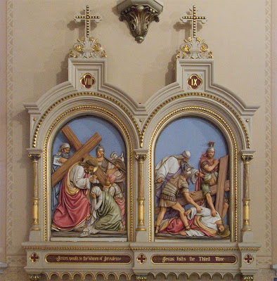
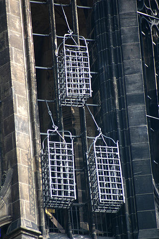
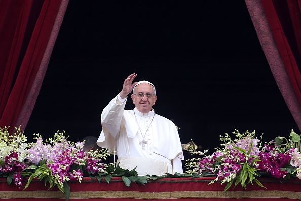

Church History
The Christian Church Since the Time of the Apostles
Intro
Worksheet: worksheet.html

Church History by Jim J. Moore is licensed under a Creative Commons Attribution 4.0 International License.
Based on source code at https://github.com/jdigger/presentation-church-history.
The City of God
Writing
“The City of God” was Augustine’s most massive and comprehensive work
It spans twenty-two volumes and took him fifteen years to write
Reason
It was his response to accusations that Rome had fallen because she had converted to Christianity and forsaken the gods that had made her great
Theme
Humanity is divided into two fundamental communities (cities)
They are named after where their loves are found:
the Earthly City
the City of God
All of history can be seen to follow this basic pattern
Earthly City of Rome
God’s Grace
The very thing that had sustained Rome all those years was not paganism, but the grace of God
Not Wimpy
She did not fall because she had turned to “wimpy” virtues like humility and compassion
Cicero and others, during the height of Roman power, had noted that those were some of the virtues that had made her great
Non-Christian “Virtues”
Rather, Rome fell because of her non-Christian “virtues,” which had done so much damage that by the time Christianity came along the wound was already fatal
The City of God
Joining With Christ

The Church, of which Christ is the head, is the earthly manifestation of Christ
As such, the best way to join with Christ is to join with the Church
Interpretation

Interpretation is done through Christ (the Word) through His representative on earth (the Church) to the individual Christian
So the Church acts as the principle interpreter of Christ for the Christian, just as Christ acts as the principle interpreter of God for the Church
Infallibility of the Catholic Church
This doctrine is what gave rise to the ideas of the infallibility of the Catholic Church, and that the individual cannot be “trusted” to understand the Bible himself, but could only do so by way of the Church
Made of Fallen Humans
Fine in theory, but as an institution made up by Fallen humans, there were, as we know, “problems” with the theory…
The Holy Roman Empire and the Papacy
Charlemagne
Charlemagne, a Frank, reconquered much of Europe and was crowned Emperor by the Pope on Christmas Day, 800 A.D., which started the Holy Roman Empire
Charlemagne’s dream was to recreate the imperial rule of the Caesars and the building on earth of St. Augustine’s City of God
Dissolution of Power
Not long after Charlemagne died, the little “empire” that there was started falling apart
Holy? Roman? Empire?
As Voltaire quipped later, “The Holy Roman Empire was neither Holy, nor Roman, nor an Empire.”
One obvious geographic disparity was that through most of its history Rome wasn’t part of the Empire.
Only Real Authority
Throughout the Middle Ages, power would be consolidated and split apart, with the closest thing to a central authority being the Papacy

Institutional Power
The Papacy would vary greatly throughout the period from strong to weak and strong again, but would in general be by far the strongest institution in Europe
Investiture
The practice of buying Church office would come and go, as well as the nobility insisting on appointing their own people into Church office
Officially resolved in 1122 with the Concordat of Worms that effectively gave the kings the right to put forward their candidates, but it was up to the church to agree
Because there was so much wealth and power to be had by being a church leader, the nobles remained heavily “involved”; however the quality of the candidates increased a great deal
Holy Vicar?
The level of “holiness” that the Papacy was leading with was often worse than horrid
Missing Records
It’s important to remember that it’s not as if we have great records of what really happened
However, given that the “history is written by the victors” and the sheer relative volume of the accounts, there’s good reason to believe there’s a great deal of truth to the accounts
Pope John XII

A low point was Pope John XII, who became Pope at the age of sixteen
He led a life of total debauchery, including hosting orgies at the Vatican
(That’s the consensus account. Partisans said much worse.)
Contradicting The Pope?
If the Vicar of Christ — essentially a manifestation of Christ on Earth — says that I should run after the pleasures of this world, what am I — an uneducated Christian — to do?
(It was illegal and heretical to contradict the Pope. You could easily get yourself and your loved ones tortured and killed for complaining)
Papal Legitimacy

From the time of Constantine on, you could only be recognized as a “legitimate” ruler if the Pope said you were
Consolidating Power
That (along with lots of other deals and the like that were brokered) gave the Pope a tremendous amount of power
Fit Catholic Ruler?
If he said that you were not a fit Catholic, your crown could — and would — be taken from you by your own people
Not Absolute
That’s not to say that the Pope had absolute power and was never questioned
People did get fed up from time to time with the excesses of the Papacy, its constant fiddling in politics, and its rule over every single aspect life
Reformations
When that happened, the power and prestige of the Papacy would be diminished or nearly destroyed until reforms would take place to appease the people
Forcibly Removed
Sometimes, the Pope would even be forcibly removed from office by a king
Pope Boniface VIII
For example, in 1303 King Philip IV of France arrested Pope Boniface VIII for explicitly claiming authority over kings, and had a new Pope elected
Known as the “Babylonian Captivity of the Papacy,” the Papacy was moved from Rome to Avignon, France, for seventy years

The Western Schism
The return to Rome sparked a “constitutional crisis” in the Church, known as the Western Schism
Urban IV
The first Pope elected after the return to Rome, Urban IV, turns out to be “highly objectionable” to the cardinals that elected him, so they elect a new one: Clement VII
The problem is, Pope Urban IV refuses to leave
Another Pope Is Elected
To try and break the power struggle between the two rival courts after the initial claimants had died, they hold a council in 1409 to reach an agreement, and elect a new Pope
The first courts, however, argue that they are the legitimate Pope and refuse to go; thus there were three Popes at one time

Western Schism Resolution
In 1417 another Council established Council superiority to the Pope, and elects a fouth Pope that finally becomes “The Pope” after convincing two of them to step aside (and marginalized the third)
Council Superiority To The Pope?
In 1430 the Pope reversed that agreement and places himself above the councils, which is how it still stands
The Source of All Knowledge

Fount of Learning
Since the church was about the only keeper of any of the knowledge that had come before — and actively repressed anything that it thought would be potentially frivolous or dangerous — it had a monopoly on effectively ALL learning
Knowing Better
Not only was it unwise to question Catholic teachings because of possible damnation (or even because of persecution) but because the church likely really did know better than you
Practical
That tied them very, very tightly to every aspect of life
Unthinkable
The church had an answer for everything (especially once Scholasticism came on the scene), so seeking an answer from anywhere other than established church teachings on the subject was — literally — unthinkable
The Inquisition

Partners
The church and the state often worked side by side to handle their various problems, and this merger can best be seen in the Inquisition
A Restraining Hand
While much of what’s going to be said sounds pretty damning on the clergy to modern ears, the clerics were very much the reasonable and moderating force
The Counter-Reformation Inquisition
In modern times, when we hear of the Inquisition, we think of the Inquisitions held during the Counter-Reformation
However, the Inquisition was an institution developed between the church and the state to “inquire” about people who were potentially dangerous
Potentially Dangerous
The crimes that were “potentially dangerous” were usually heresy or sedition — which were usually viewed to be the same thing
That’s why both the state and the church were involved
Structure of the Inquisition
While the practices involved in an inquisition evolved over hundreds of years, its basic structure remained constant: The state would arrest a potentially dangerous person and “inquire” about their thoughts and activities, and then the church would take their confession and determine the level of guilt
Power of the Sword
The Church could also not perform an execution, banishment, etc
Those were all exclusively the domain of the State
Inquisition Crimes
Crimes worthy of the Inquisition varied from hard-core heresy and treason, to thinking that the Pope was mistaken on something
All that the law required was that you think he was wrong, or that a couple people would think that’s what you think. What you actually did was part of evidence, but not the crime itself
In that same line were the crimes of being a Jew, a general troublemaker, etc.
Torture
Torture was regarded as a very normal and natural way to get information
The church sanctioned its use — though priests were absolutely forbidden to be involved and usually weren’t even allowed to be present
Confessions Under Torture
Confessions could not be taken while being tortured, but the next day
Torture could, according to the church, continue to be used even after the confession due to its “purgative” powers, purging evil from the soul in much the same way that burning did
Burning
Burning for a crime like heresy or witchcraft was done “for the sake of” the person being burned, as a last-ditch effort to free their soul from the corruption that they had been found guilty of
Jeanne d’Arc
If you know what happened to Joan of Arc you should recognize this: She “confessed” to witchcraft while being tortured, but when it came time to give her confession she renounced the “confession” given under torture, and therefore never officially confessed to witchcraft
Joan’s Death

She was still burned for being a witch
She was later canonized as a Saint
The Great Schism

Eastern Orthodoxy
Eastern Orthodoxy is generally seen as starting when Emperor Constantine built Constantinople and moved the capitol there
(The truth is much more complicated than that, of course. However, for our purposes, that will work.)
Doctrinal Friction
There had long been friction within the Church regarding various doctrinal and political practices
Eventually the disagreements between West (Rome) and East (Constantinople) got so bad that in 1040 A.D. the Eastern Orthodox Church was formally separated from the Roman Catholic Church
As the Eastern Patriarch was preparing to celebrate the Lord’s Supper, the Pope’s representative entered the cathedral and placed a letter on the altar, excommunicating the Patriarch and all who followed him
Tensions Growing
For two hundred years prior to the establishment of the Holy Roman Empire, the Eastern emperor named the Bishop of Rome, putting in place culturally Greek bishops loyal to the East
Now the West has had its own emperor for two hundred years, spoke Latin instead of Greek, and Islamic invasions were stressing everyone’s resources
Disappearing Pentarchy
There were five major episcopal sees of the Roman Empire: Rome, Constantinople, Alexandria, Antioch, and Jerusalem
The Islamic conquests of Alexandria, Jerusalem, and Antioch in the 7th century left Rome and Constantinople as the only major Christian communities left
Cultural Differences
In sharp contrast to the West, the East under the Byzantine Empire had continued to thrive
Constantinople was the largest and most sophisticated city in Christendom, with roughly half a million people
It had retained the civic structures, public baths, forums, monuments, and maintained its aqueducts
Degenerate Betrayal of the Faith
The Latins viewed the Byzantine preference for diplomacy and trade over war as duplicitous and degenerate, and their policy of tolerance and assimilation towards Muslims as a corrupt betrayal of the faith
The Disputes
While there were lots of things that led to the split (mostly political), the some of the major doctrinal disputes were over
Papal primacy
the Filioque Controversy
icon veneration
Eastern Uniformity?
Again, a word of caution
Today, when people refer to the Western Church, they mean Roman Catholicism and Protestantism. Just as there are tremendous differences within the “Western Church,” so too in the “Eastern Church” (a.k.a. “Eastern Orthodox”)
However, there is a common heritage and core set of beliefs that make it useful to group them in such a way. But Russian Orthodox is not the same as Greek Orthodox any more than Roman Catholic is the same as Baptist
Eastern Orthodoxy and the Pope
The Bishop of Rome
While the Eastern Church recognized the authority of the Bishop of Rome (i.e., the Pope) and that he had a “special” position in the Church, they disagreed with the West about the extent of his authority
The Eastern Leader
That said, effectively the East held the Emperor in the place of the Pope as the head of both Church and State.
When it came down to it, there was a essentially a disagreement about whether it would be the Pope or the Emperor to lead the Church
The Filioque Controversy
After the Nicene Creed
The Filioque Controversy was mentioned during the analysis of the Nicene Creed while studying the Pelagian heresy
Filioque
Καὶ εἰς τὸ Πνεῦμα τὸ Ἅγιον, τὸ κύριον, τὸ ζῳοποιόν, τὸ ἐκ τοῦ Πατρὸς ἐκπορευόμενον
(And in the Holy Spirit, the Lord, the giver of life, from the Father proceeding)
Et in Spiritum Sanctum, Dominum, et vivificantem: qui ex Patre Filioque procedit
(And in the Holy Spirit, the Lord, and giver of life, who from the Father and the Son proceeds)
Slipping Filioque In
The “and the Son” are a Western addition to the Creed as it was originally agreed on by a Council representing the whole Church, East and West
The East believed that the Holy Spirit proceeds from the Father only, and that to say that He proceeds from the Son as well is to destroy the doctrine of the Trinity
When the West “slipped it in” after the council, it greatly increased tensions between the East and West that never went away
Destroying the Doctrine of the Trinity?
What difference does that make in the Eastern versus Western understandings of the Trinity?
The Eastern understanding has the Father as the “source” of all things (in the “light from light” way we discussed in the Nicene Creed)
The complaint is that not only does “filioque” subordinate the Spirit to the Son, but it confuses the role of the Father and the Son in the Trinity
Legitimate Complaint
The East had a very legitimate complaint against how the Western Church handled the situation
It very much went against the spirit of the Council, which was to give a unified response to heresy
The West, even though it was expressing a more Biblical point of doctrine, broke that unity
Icon Veneration
Honoring Pillars of the Faith
Icon veneration is where people bow down before, kiss, and burn incense to icons of Jesus Christ, the Virgin Mary, and various saints
(An “icon” is a “representation,” so these are pictures, statues, symbols, etc.)
Bowing before an icon is in many ways no different than saluting a flag (another kind of icon) — a way to remember and respect that which the icon points to
Incarnational Miracles
It’s also believed that the icons cause various miracles
To those that follow veneration, the icons are often further examples of incarnational miracles, where God is making himself manifest through the icons (such as a crying image of Mary)
Religious relics hold much the same purpose, such as the healing powers of a piece of the Cross of Christ, or “acheiropoieta” like the Shroud of Turin
It’s a large part of what tends to make the church very beautiful and “otherworldly”
In Rich Company
The problem, of course, is that worshipers of Zeus or other idols have essentially the same understanding
They aren’t praying to the stone or wood, but the god it represents or focusses, like a talisman
A Thorn By Any Other Name
For a great example, remember The Golden Calf
The Icon Pendulum
In 730 the (Eastern) Emperor declared that icon veneration had gotten so out of hand that all icons should be removed, but was opposed by the Pope
By 1054 the pendulum had swung the other way, and the West was now complaining about the East’s “worship” of icons
Icon Veneration In the West
“Icon veneration” has been a continual problem in the West, and as always it’s primarily a matter of degrees
Iconoclasm During the Reformation
During the time of the Reformation, for example, the use of imagery in the Catholic Church had reached an all-time high, and one of the major things the Protestants protested was that the use of such imagery had turned into idolatry
Protestants went into Catholic churches and cathedrals, destroying the statues and images within
Iconoclastic Controversies
There have been many major iconoclastic (“icon destroying”) controversies ever since then, in every major denomination, and the issue continues to pop up
First or Second Commandment?
According to the Talmud tradition, they are the same. Used by Jews, Catholics and Lutherans.
According to the Septuagint tradition, they are distinct. Used by Orthodox and Reformed.
Iconoclasm In the Baptist Church
In the Baptist Church, for example, the iconoclasts have essentially won, which is why it’s often hard to see so much as a picture of Jesus in a Baptist church
Iconoclasm In the Catholic Church
The Catholic Church has mostly suppressed the iconoclasts, and the major Councils since then (e.g., Trent, First Vatican and Second Vatican) have all taken pains to distinguish between veneration and worship
The veneration of many of the saints is so common in Catholicism that it is often seen as being a hair’s breath (if that) from idolatry, and the “hyperdulia” given to Mary is seen as being even more so
Iconoclasm In the Lutheran Church
The Lutheran Church has largely struck a compromise position, but as such it’s been more susceptible to the controversy as it reappears
Theoria
Seeking the Beatific Vision
θεωρία is Greek for “contemplation” in the Philipians 4:8 sense; specifically in service of contemplating beholding God
In both East and West, it has been the primary goal of the monastic life
Theoria in East and West
In the West it led to the development of systematic theology, applying the tools of reason to better knowing the mind and heart of God (e.g., scholasticism)
In the East it led to an emphasis on mysticism, where a pure and ascetic life brings you to “theosis” — union with God
John’s Books
Related to that draw toward mysticism is the East’s special emphasis on the books of the New Testament written by John (i.e., The Gospel of John, 1 John, 2 John, 3 John, Revelation)
A practical consequence of this emphasis is that Jesus is seen much more as the King of Kings and Judge of the Universe
Prevalence of the Holy Spirit
The East also has a much stronger emphasis on the role of the Holy Spirit, and many of the ideas that manifested themselves as Pentecostalism in the West have always been a part of the Eastern Church
Things like further “revelation” was not entirely closed with the closing of Scripture
God’s Incomprehensible Mystery
There’s more emphasis on the incomprehensible mystery of God, so there hasn’t been nearly the scholarship on trying to understand the nature of God in the East that there has been in the West
Mighty Lord
The picture given in Revelation 1:12-18 is typical of how the East views Jesus
The Crusades
The First Three Crusades
The first three crusades (which started shortly after the Schism) showed the West just how “backwards” they were, and they pilliaged all they could in Byzantine lands on their way to Jerusalem

The Fall of Constantinople
Coveting its wealth and power, while the Fourth Crusade explicitly had an explicit ban on attacks on Christian states, the crusaders “got lost” and attacked and sacked Constantinople
Reaction by Pope Innocent III
Pope Innocent III responded to the papal legate with
How, indeed, will the church of the Greeks, no matter how severely she is beset with afflictions and persecutions, return into ecclesiastical union and to a devotion for the Apostolic See, when she has seen in the Latins only an example of perdition and the works of darkness, so that she now, and with reason, detests the Latins more than dogs?
Power Vacuum
In addition to the atrocities committed by Christians upon Christians, the heavily wounded empire could no longer provide a real defense against the Islamic states
Even though the Byzantine Empire was able to regroup and take back Constantinople, the Empire was severely crippled
There was no longer a serious counterforce to the Islamic armies, who were able to sweep through the Near East and continue to control the entire region today
Recent Attempts At East-West Reconciliation
Decree On Ecumenism
…In the study of revelation East and West have followed different methods, and have developed differently their understanding and confession of God’s truth. It is hardly surprising, then, if from time to time one tradition has come nearer to a full appreciation of some aspects of a mystery of revelation than the other, or has expressed it to better advantage. In such cases, these various theological expressions are to be considered often as mutually complementary rather than conflicting…
Two Lungs
Pope John Paul II as recently as 1995 said “the Church must breathe with her two lungs!” to bring together the best of the West’s rational rigor with the East’s mysticism
The Philosopher
Aristotle
A student of Plato, Aristotle (384-322 BC) would go on to greatly surpass his teacher in the scope of his philosophy and the influence it would hold
A much more “practical” thinker, Aristotle was constantly at odds with Plato’s very “other worldly” philosophy
Plato and Aristotle

A famous painting by Raphael of Plato and Aristotle arguing. Plato is pointing up, indicating the logical “Forms.” Aristotle is pointing toward the earth, indicating the importance of staying grounded in observation and experience
Scientist?
While he didn’t do “science”, he was far ahead of everyone else nearly a millenia, and he laid the groundwork for huge swaths of what would become Science
Classical Learning
While Plato is much easier to read because of his numerous stories and illustrations, it’s easier to understand where Aristotle is coming from because he had a much more direct influence on modern Western thought
A great deal of what is referred to as “classical” learning comes directly from him, and when someone refers to “The Philosopher,” they are almost certainly referring to Aristotle
Unity
Aristotle’s passion was in “unity”
He was constantly looking to see how things were related, and to bring together things that he thought should not be divided
Alexander the Great
A very concrete example of Aristotle’s concern for unity can be seen in his influence on his most famous student: Alexander of Macedonia (“Alexander the Great”)
When Alexander conquered the world, he brought along behind his army a huge array of scientists to study the plants, people, animals, rocks, etc. of the areas he conquered
They would eventually have a falling out, largely due to Alexander becoming more and more “Eastern,” and his resentment of Aristotle publishing what he learned (which meant that it was no longer solely Alexander’s intellectual property)
Hellenization
The most important effect Aristotle’s influence on Alexander for our purposes here was Alexander’s passion for the Hellenization (“Greek-ifying”) of the areas he conquered
It was because of that Hellenization that all of the books of the New Testament were written in Greek
To the Ends of the Earth
The unification of trade, language, systems of thought, politics, and the like — later taken advantage of and extended by the Romans — was the reason that the Gospel was able to spread so far and so fast
Just as God used Plato’s philosophy to start “prepping” the gentile nations to hear the Gospel, He used Aristotle and Alexander to “prepare” the world to make the spread of the Gospel far faster and effective than ever before possible
Formal Logic
Developing Logic
Perhaps his single most fundamental contribution to Western thought is his development of formal logic
Obviously, people were using logic before him (just as they were using gravity before Newton), but Aristotle identified what is involved with logic and what is the proper use of logic (specifically around “deduction”)
Two Primary Principles
The two most important aspects of what he identified for our purposes are:
the Law of Non-Contradiction
logic says nothing about whether something is true or false, only if it is valid or invalid
The Law of Non-Contradiction
The Law of Non-Contradiction is simply the way you can test to see if something is a contradiction
We won’t go into much detail, but it says, “P (object) can not be Q (description) and not Q at the same T (time) and in the same R (relationship)”
(Logic is closely related to Mathematics, so mathematical notation is often used)
Non-Contradiction Example
For example, take a statement like “The tomato is red and not red at this particular spot on the tomato”
If you substitute “the tomato” for P and “red” for Q and “at this particular part of the tomanto” for R, then you get “The tomato can not be red and not red at the same time at this particular part of the tomato”
Red Green Tomato
The tomato was green (not red) at one time, so the “at the same time” part of the test is important
So the original statement may have been odd, but not a contradiction
Another Non-Contradiction Example
Another example would be “John is happy and sad right now about passing his college entrance tests”
That seems like a contradiction, but it’s not because R is so ambiguous — he could be happy because he’ll be able to go to his favorite school, but sad because he’ll be leaving home and won’t see his grade-school friends any more
Paradox vs Contradiction
When something seems like a contradiction but isn’t, it’s known as a “paradox”
Contradictions are always nonsense
Christian Contradictions?
Some people think that Christianity is filled with contradictions, but if that were the case, then Christianity would be nonsense
Instead, it’s filled with paradoxes and mysteries
“Simul Iustus et Peccator”
An example of a Christian paradox is Luther’s saying, “We are at the same time saints and sinners”
It sounds like a contradiction, but it isn’t. Why?
The Great Paradox of the Christian is that we, obviously, are sinners. However at the same time we have been given the righteousness of Christ, and are therefore accounted with His righteousness — making us saints
Christ’s Paradoxical Nature
An example of a mystery would be the dual nature of Christ: the relationship between the divine and human natures doesn’t cause a contradiction, but we have absolutely no idea how it could be true
As we said with Augustine, there are never contradictions with God; if you find yourself affirming a contradiction, something in what you’re affirming is simply wrong
Valid or Invalid
The second vital lesson we need to understand from Aristotle’s logic is that logic can never tell you if something is true or not, only that it is valid or invalid
Syllogism
One of the most common forms of logical argument is the syllogism, or the “this and this (the predicates), therefore that (the conclusion)” argument
(Or, more formally, “A = B, B = C ⇒ A = C”)
Valid And True
For example, “All dogs are mammals and all mammals are animals, therefore all dogs are animals”
Both predicates are true and the argument is valid, therefore the conclusion must be true
Valid But Wrong
However, you can say, “All dogs are birds and all birds are animals, therefore all dogs are animals”
The argument is valid, but the first predicate is false, therefore you know nothing about the conclusion
Invalid and False — Simply Nonsense
On the other hand, you can say, “All dogs are birds and all birds are plants, therefore all dogs are stone”
The argument is invalid and the predicates are false, so it’s simply a nonsense statement
Invalid But True
If you try, “All dogs are mammals and all birds are animals, therefore all dogs are animals,” then you have both predicates being true, but the argument is invalid
There is no way of knowing from the argument if the conclusion is true or not
Strengths And Weaknesses of Logic
You have to understand what logic good at, and understand its weaknesses
If, in the case of the syllogism, you know you have a valid argument and you are absolutely certain of the truth of the predicates, then you can be absolutely certain of the conclusion
For a valid argument, the certainty of the conclusion is exactly equal to the certainty of the truth of the predicates
Invalid Arguments
However, if the argument is invalid, then the truth or falsity of the predicates has nothing to do with whether or not the conclusion is true
Logic only has power when it’s valid; otherwise it’s absolutely impotent
Not Proven
This is an extremely misunderstood aspect of logic, because people will very commonly argue for or against some point, but not be careful about whether or not the argument is valid
The conclusion may by true, but they have not proven it to be so
People get the other direction mixed up all the time too: just because someone uses an invalid argument, the invalid argument does not prove that their conclusion is false
(However, it does prove that they haven’t proven anything)
Formal Discipline
What should also be plain from this is that logic is a “formal” discipline, where “formal” is taken literally
Logic is concerned entirely with the form of the argument, and while it never adds any content to what is known, it does help put it in a more useful form
A Very “Lutheran” Use of Logic
God redeemed all sinners
I am a sinner
⇒ Therefore, God redeemed me
There is nothing new in the conclusion, but it’s certainly good to know that God redeemed me, which isn’t obvious from the previous two statements
Matter, Form and Substance

Unifying Forms and the World

Unifying the Forms of Plato and the world around us, Aristotle said that “substance” is the fusion of matter and form
A chair, then, is wood made into the Form of a chair
With and Against Plato
Sounds pretty obvious, but this makes for a dramatic acknowledgement of — and departure from — Plato
It affirms the idea that there are forms that define the essential nature of something, which is exactly what Plato taught
However, Aristotle is also saying that the forms aren’t an “other worldly” kind of thing — they only exist insofar as they become substance in matter
The Categories
Aristotle broke down all of language about things into ten basic categories:
substance
quality (not “good or bad”, but color, height, etc.)
quantity
relation
place
time
position
state
action
affection
Essential vs Accidental
Substance is the essential nature of a thing
The rest are descriptions — what are known as “accidens” — of the particulars of that instance of the substance
The Blue Chair
“The blue wooden chair” describes a thing: the substance is “chairness” and the accidens are “blue” and “wooden”
Red chairs, metal chairs, three-legged chairs, etc. all share the same substratum of chairness, but you can only know that a chair exists because of its accidens
What Underlies It All
The “substance” is what stands under (underlies) all of its accidens
“sub” — under, “stance” — position
Transubstantiation
Aristotle’s language of ‘substance’ and ‘accidens’ has been used by the Church to describe many theological concepts
For example, transubstantiation (literally, “change in substance”) is the name of the Roman Catholic doctrine that the bread and wine become the body and blood of Christ
The Eucharist
While what is distributed during the Eucharist tastes, feels, looks, smells, etc. like bread and wine, the “substance” of it is the body and blood of Christ
In other words, while the “accidens” do not change, the essential nature of the bread and wine does change
Aristotle Would Not Approve
For what it’s worth, Aristotle would not have approved of this use of his ideas
The substance is manifested through its matter (which is what has the accidens)
An oak tree has wood because it is part of its essential nature to have wood — take away the wood and you no longer have an oak tree
Miracle of the Mass
Flesh and blood that does not taste, smell, feel, etc. like flesh and blood is not flesh and blood
Rome, of course, recognizes this and says that it’s part of the miracle of the Mass that God breaks that link between the accidens and the substance of Christ’s body and blood
Causality

The Cause of Effects
Aristotle identified four things that are the cause of every effect. These are:
MATERIAL — The “stuff” out of which something happens
FORMAL — The form that the effect takes
EFFICIENT — That by which something happens
FINAL — The reason it was done; its purpose
Statue Cause
For example, a statue is carved
material cause - the stone
formal cause - the shape in the artist’s mind
efficient cause - the chiseling
final cause - the desire of the artist for something beautiful
Avalanche Cause
As another example, say there’s an avalanche
The material cause was the snow; the formal cause was the slope; the efficient cause was the vibrating that loosened it; and the final cause was the snow’s desire to be closer to the earth
Teleology
Something’s “final cause” — or its “purpose” — is known as its teleology
In modern thought, teleology still makes perfect sense to people when talking about things like “Why did he do that?”
When you have a thinking agent doing something we often consider the reason it was done
Nature’s Goal
However, while Aristotle obviously didn’t think that rocks and air had the capability of thought, he did say, “Nature does not act without a goal”
A Thing’s Nature
Rocks and other solids fall because it is in their nature to come as close as possible to the solid Earth
Fire, the least material of all the elements (remember they thought there were four elements: earth, water, air and fire), continually tries to go up because it wants to be with the heavenly fires (the stars)
Useful Causes for Everything
Everything could be (and was) explained in terms of these four causes
From “Why is the sky blue?” to “Why did "`Why did she get sick?” to “Why did France invade Spain?”
Fits Perfectly With Christian Doctrine
Christians took the idea of teleology and ran with it…
What Christian doctrine says that there’s a Reason why every blade of grass grows and nations are ruled as they are?
“Divine Providence” is the doctrine that God is omnipotent and involved in every aspect of His creation
God and His creation does not act without a goal
The Unmoved Mover
Potentiality, Actuality, and the Unmoved Mover
An acorn is “actually” an acorn, but “potentially” an oak tree
When it becomes an oak tree, that aspect of its “potentiality” and “actuality” become the same
Oil is flammable because it can catch fire (its “potentiality”), not because it is burning (its “actuality”)
Actuality Precedes Potentiality
Actuality must precede potentiality
There can be no such thing as pure or absolute potentiality
Such a “thing” would be potentially everything, but it would be actually nothing
Aristotle’s God
However, Aristotle argued that there must be something that is pure actuality with no potentiality — a being with no unrealized potential
A being with no potentiality and with pure actuality, since it cannot change, must also have no motion
This is Aristotle’s “god,” the famous “unmoved mover” that is the source of all movement in the universe
Ultimate Cause
An “unmoved mover”, or “ultimate cause” is a logical necessity, and it’s the same basis that people use when using the “causasian” argument for God
(“Why did that happen? Well, because this happened. What caused that? This did. What caused that? This did. What caused that? … God did.” What happens is even if you say, “I don’t know what caused that, but something did” you’d still have the problem of what caused that something. You get caught in an “infinite regress,” where the questions can continue an infinite number of times. The only way to break the series is to have a cause that is not caused by anything else — the unmoved mover.)
Not Quite Jehovah
Like Plato’s Forms, Aristotle’s “god” had some obvious similarities to Jehovah, but never quite “got there”
It’s the final teleological purpose of everything, causing everything to happen, but does not engage in the world itself
Here we see the unmoved mover’s clearest difference with the Christian God, who is actively involved in what happens in His creation
God Has Been Clearly Seen
This is yet another example of what Paul talks about in Romans 1:19-22…
The Rise of Islam

Muhammad’s Revelations

During the early half of the 7th Century, Muhammad ibn Abd-Allaah ibn Abd al-Muttalib al-Haashimi al-Qurashi (henceforth known simply as Muhammad, 570-632 AD) gave what he said was a series of revelations from God
These were collected together to form the Quran (القرآن — “recitation”), which acts as Islam’s scripture
“People of the Book”
Islam develops from much of the same “tradition” as Judaism and Christianity, and considers Jews and Christians to be “People of the Book”
Put (far too) simply, Islam teaches that Jews and Christians had also received revelation from God, but in its transmission from prophets like Moses and Jesus, it was corrupted by the time it was written down and assimilated as part of the community
Tahrif
So while “The People of the Book” have a largely correct revelation, it is faulty and needs to be corrected with the uncorrupted teachings of the Quran (c.f. Quran 3:110, Quran 3:113, Quran 3:199)
Taḥrīf (تحريف — “distortion, alteration”) is the “alterations” which Jews and Christians have made to Biblical manuscripts
Religious Toleration
“Officially” by sharia law, Christians and Jews are afforded basic legal protections, including the right to practice their religion privately, as long as they also do the things required of Muslim citizens
That said, in practice it’s been as “creatively interpretted” as many Christian doctrines
On the whole over history they have been better to Christians in their lands than Christians (especially Western Christians) have been to Muslims in their lands
Sadly that is a very, very, VERY low bar
The Recitation
When Muhammad received his revelation it was a literal dictation of God through the angel Gabriel through Muhammad to the Quran
Inspiration
That’s a significant difference from Jewish/Christian doctrine on the Bible, which says that the Bible is the “inspired” Word of God, where God “moved” the writers to write what He wanted them to say, but they often used their own words to say it
Interpretation of the Meaning
That’s why if you see any Islamic quoting of the Quran in any language but Arabic, they are careful to say that it is an “interpretation of the meaning”
Even though most of the world’s Muslims are not Arabic, the Arabic language holds tremendous significance to all Muslims since that is the language that God chose to speak to humanity
Growth of Islam
Today, there is roughly the same number of Muslims as there are Christians (using the qualification of what people classify themselves as) or about one billion each, though Islam is reportedly growing faster
In modern times, Islam is primarily focused in the Middle East, much of Africa, southern Asia, and Indonesia
The “Far East” is still largely defined by the result of the largest and fastest growing empire in history (until the British): the Mongolian Empire, which conquored a huge portion of the world in the 13th century
Golden Age of Islam

From the 8th to the 13th century (when Baghdad fell to the Monguls) the Muslim world was effectively united under caliphates, allowing a flurishing of culture and science
The oldest degree-granting university is in Moroco from 859 AD. It was during this time that we got foundations of modern hospitals (including requiring medical diplomas, universal coverage, vaccines, Hippocratic oaths, and care for the mentally ill), modern mathematics (e.g., as algebra, which which is vastly more powerful than the Greek and Egyptian geometry; “Arabic numbers”), what we would recognize as science (e.g., The Book of Optics, 1021, with a strong emphasis on experimentation/induction and skepticism), etc.
Intended for Evil, God Used for Good
The Reformation, for example, would not have had a chance to develop to the degree that it did if it wasn’t for the fact that the Catholic kings diverted most of their resources toward fighting a Turkish (Muslim) invasion, which they saw as being much more threatening (with very good reason) than what Luther and the rest were doing
By the time they could turn their attention back to the Reformation, it had essentially reached critical mass and could no longer be stopped
The “Doctor Angelicus”
Averroës
During the 12th century Averroës built upon the work of Avicenna, creating a strong synthesis between Aristotle and Islam
Averroës’ work began to make its way into European universities, but it was unclear how everything “fit” in a Christian worldview
St. Thomas Aquinas
It was in this environment that St. Thomas Aquinas (1225 - 7 March 1274), a Dominican monk, worked
An introverted scholar, his brilliance is — even among his fiercest critics — truly astounding
Aquinas died on his way to the Second Council of Lyon in an attempt to reunify the Eastern and Western Church
Aquinas vs Averroës
Among many other accomplishments, he looked at what the Muslims had done and “Christianized” it
While Aquinas leaned heavily on Averroës’ work, a tremendous amount of what Aquinas was doing was showing that what Aristotle had said was more in line with Christian doctrine than Islam
The Sumas
His two most significant works are “Summa contra Gentiles” and “Summa Theologica” — both excedingly comprehensive writings on Christian teachings; the first more for explaining Christianity to unbelievers, the latter for training seminary students
Summa Theologica is one of the official sources (as of 1879) for modern Catholic seminaries. Even though Protestants obviously have issues with some of the specific doctrines in it, it still is a basic reference in Protestant seminaries
Creating Aristotelian Scholasticism
His ideas gained tremendous popularity, becoming what would be known as Aristotelian Scholasticism. (A fancy term for the fact that it was based on learning gained from the study of Aristotle and became the standard of the scholars)
Aristotelian Scholasticism will be talked about later, but it’s worth noting here that it dominated European thought for roughly five hundred years
Aristotelian Scholasticism laid the groundwork for the Enlightenment — and was what the Enlightenment was directly reacting to and fighting against
True But Not True
Double Truth
Muslim philosophers constructed a “double truth” theory, arguing:
what is true in faith may be false in reason (and vice-versa)
what is true in philosophy may be false in theology (and vice-versa)
what is true in religion may be false in science (and vice-versa)
Intellectual Schizophrenia
This separates Nature and Grace with a vengeance
Modern Double Truth
It would be analogous to a modern Christian saying that from the vantage point of faith (grace), man is created by God in his image and for a purpose; a being with dignity because God has bestowed it on him
But that from the vantage point of reason (nature), man is a cosmic accident, a grown-up germ who emerged from the primordial slime and is destined for annihilation; a being with no dignity whatever
Double Truth Confusion
This confused believer affirms macroevolution from Monday to Saturday, but on Sunday worships the God of creation…
Grace Fulfills Nature
Thomas believed that philosophy and theology play complementary roles in the quest for truth
Grace does not destroy nature, but fulfills it
Thomas saw clear boundaries between the two disciplines but found both necessary to understand reality comprehensively
Natural and Revealed Theology
Distinguishing Sources of Knowledge
Aquinas distinguished between “natural theology” (science, reason, etc.) and “reveled theology” (Scripture)
Some things can only be known from natural theology (e.g., why is the sky blue?), some only by reveled theology (e.g., “This is a new covenant in my blood…”), and some by either of the two (e.g., that God exists)
All Truth Is God’s Truth
He continually stressed that “all truth is God’s truth,” so if something is true through one medium (e.g., science) then it is equally true through another (e.g., faith)
If there’s a contradiction, then it’s a problem with our understanding of one and/or the other; or both
Law of Non-Contradiction Again
To say it another way:
WHAT IS TRUE (coming from one form of revelation) IS NOT FALSE (in another)
The Law of Non-Contradiction doesn’t care about how we know something, just if that “something” contradicts itself
Mediated Knowledge
It should be pointed out that Aquinas said that our knowledge of God from nature, while true, is “mediate, analogous, and incomplete”
Without getting into much detail…
meditate — we get it through a “medium” (we are getting the knowledge through nature, not directly)
analogous — nature is “like” God, similar to how we can know something about the nature of Christ and His Church through the “analogy” of marriage
incomplete — it’s, well, not complete
Incomplete Knowledge
Regarding “incomplete”: What is given to us through “reveled theology” is also incomplete and needs interpretation, but that doesn’t mean that it’s not vital to a true understanding of God
So too with “natural theology”
They combine to give us a much more complete picture than we could have from either one separately
The Existence of God
The Five Proofs
Aquinas is famous for putting forward five “proofs” for the existence of God that we have from nature
Change — everything’s changing, but something has to cause that change in the first place — much like the Unmoved Mover
Causation — similar to the Unmoved Mover, there must be something that is an uncaused cause
Contingency — everything is contingent upon something else, but there has to be a “necessary being” that is not contingent upon anything
Degrees of Excellence — we see some things being better than other, which implies that there is something that manifests the perfection of what we see
Harmony — the world sure looks like it was designed since everything is organized so perfectly for its place in the world, and “design” needs a “designer”
Aristotelian Scholasticism
Merging Christianity and Aristotle
St. Thomas Aquinas began the process of merging Christian doctrine with what he learned from Aristotle, and then others took up the task
By the 14th Century, the synthesis that came out of that process — Aristotelian Scholasticism — was firmly established, became official church dogma, and was taught at all of the universities
Extremely Resilient
It was so powerful that it survived (albeit with a beating) through major revolutions in thought after it: the Renaissance, the Reformation, and much of the Enlightment
Cambridge Example
For example, the charter of Cambridge University until late 18th Century read: “… All students and undergraduates should lay aside their various authors and only follow Aristotle and those that defend him… [Forbidding] all sterile and inane questions departing or disagreeing from ancient and true philosophy.”
Keeping Learning Pure
What are the advantages and disadvantages of such an approach (of mandating a specific philosophy be taught)?
Can you give modern examples?
Focusing On Truth — Advantages
One advantage is that it helps keep people focused on what is known to be true instead of getting confused by other sources
Going down other paths can range from being a simple waste of time to actually being dangerous
Focusing On Truth — Disadvantages
One disadvantage is that it makes sure that no new knowledge is gained, which really becomes problematic if it turns out that what was “known” to be true isn’t as true as was previously thought
Scholarly Orthodoxy
The most obvious example of not being allowed to question previous authorities is in a conservative seminary, where students must stick to the prior confessions of the church body that runs the seminary
It’s true in Education in general: When was the last time you heard someone question if we should learn Euclid’s theories in geometry?
Disputation
Arguing For Truth
The principle tool of Aristotelian Scholasticism is the disputatio, the “disputation.” It involved three principle appeals for trying to convince someone of the truth of what you are saying (listed in order of importance):
Authority — applies to the authority of Scripture above all, but this also extended into the authority of ancient knowledge (like Aristotle) and institutions (like the Catholic Church)
Reason — Believed to be what makes us most like the imagio Dei (“the image of God”), it was therefore given a special significance
Experience — this was used to show the truth of what was known through authority and reason; it was therefore primarily anecdotal or illustrative in nature
Reflecting On God’s Wisdom
Where Is Our Focus?
Since we cannot change the created order that God put into place, we should instead contemplate on how that order reflects God’s wisdom
Likewise, we should keep our minds on higher things, like God and the angels, and avoid thinking on the lower things, like the particulars of this Fallen and passing world
Higher Things
What would be the classic “proof passage” for us to keep our minds on higher — rather than lower — things? What’s the consequence of that way of thinking?
Philippians 4:8 — “Finally, brothers, whatever is true, whatever is noble, whatever is right, whatever is pure, whatever is lovely, whatever is admirable — if anything is excellent or praiseworthy — think about such things.”
What could be more excellent and praiseworthy than God? What could be less praiseworthy than the fallen world?
Other Worldly
When taking to extremes (as it often was) this meant that little to no attention was paid to figuring out why a region was flooded, how to grow crops better, understanding how the body worked so sickness could be treated, etc.
People became so “other worldly” that they became bad stewards of what God has given us and neglected the fact that the Bible also calls for us to learn about the created order so that we may be God’s agents on earth to help relieve human suffering
Deduction Over Induction
Deductive reason (reasoning from what is known to be true and giving evidence to support that conclusion) was dramatically more valued than inductive reasoning (drawing a conclusion based upon what is known)
Since you already know what all the right answers are based upon what the authorities tell you, the job of learning was to further show how those authorities are correct
Forms of Reasoning
What are some of the examples where deductive reasoning is commonly used?
What are some of the examples where inductive reasoning is commonly used?
What does science use?
Imbalance of Reason
This imbalance of deductive and inductive reasoning, as well as between authority and experience, caused people to not check seriously their results with “reality”
Words and logic weren’t merely reflections of what was real; they virtually dictated what was real
That meant that it was perfectly legitimate to debate matters that are totally impossible to verify — like the “How many angels can stand on the head of a pin?” argument
Logically Sound But Unreasonable
The Scholastics would be fastidious to a fault in making sure their arguments were logically sound, and they’d bring up every conceivable objection to dispute them
However, in making arguments for things that were, in reality, false propositions, they’d make use of word play and horrendously elaborate explanations
Abusing the Unverifiable

Who Needs To Prove Anything?
People still debate totally unverifiable things, often in college dorms after a few too many Coronas, and most people see how silly it is when they sober up
The word play was a more sophisticated form of the technique used every day by students and politicians: if you haven’t a clue what you’re talking about, confuse your audience over with words until it becomes impossible to tell the difference between what’s legitimate and what’s nonsense
Occam’s Razor
In response to excesses found in the arguments of the time, William of Occam developed the principle known as “Occam’s Razor”
It asserts, in essence, that the simplest explanation for something was most likely to be the correct one
Defining What is “Reasonable”
Rather than debating, for example, about how it’s possible that a field has weird shapes of trampled grain because demons were performing a ritual in there that would cause your sister to wake with a headache (or aliens trying to tell us they have Elvis), it more likely that your neighbor’s ox wandered into the field, got lost, and wandered around for a bit
However, it would take hundreds of years before his “razor” would become popular
The Problem with Occam’s Razor
While Occam’s Razor is generally regarded as a very useful tool, it does have a serious problem
What is it?
“The simplest explanation for something is most likely to be the correct one.”
Just because it’s more “likely” that one explanation is right than another, that does not mean that it is necessarily the truth
Life is much more complicated than we’d often like it to be
Allegory
Allegorical Interpretation
Throughout the Middle Ages (and still today in many parts of Christianity) Biblical interpretation tended to be very allegorical
What that means is that every verse was searched to find its hidden meaning, beyond the plain meaning of the text, to find the truths that apply to all times
The Bible’s Use of Allegory
The Bible itself does quite a bit of that; for example by showing how things that were said in the Old Testament referred to New Testament events
The problem was that every sentence in the Bible was treated that way, so verses like Number 3:50 (“From the firstborn of the Israelites he collected silver weighing 1,365 shekels, according to the sanctuary shekel.”) were analyzed to determine what spiritual significance the collection of 1,365 shekels of silver had
Examining Allegories
What are some of the major advantages and disadvantages of such an approach?
Allegory Pros and Cons
In the instances when the Biblical does it, obviously it’s good
Also, when done merely as a concrete example of something else (like 2 Samuel 9 being an example of the kind of mercy God gives us, shown in what David did), it can be very useful to have a specific instance of some truth illustrated for us
When those limits are not applied, it can lead to wild speculation, which in turn can lead to very bad theology
Reformers React to Allegory
Martin Luther, John Calvin, and many others involved in the Reformation reacted strongly to the wild speculation involved in the allegorical interpretations going on, but it still goes on
Can you give any examples?
Allegory In Common Use
Of course it is still a legitimate form of interpretation in the Roman Catholic Church
A great many Catholic teachings are based upon such interpretations, so clearly those areas are meant to be allegorical…
Protestant Allegory
Among conservative Protestants you can hear it any Sunday morning when you turn on the TV and the preacher’s pulling Scriptural passages way out of context to make some point
Not having to abide by the literal meaning of the text and instead interpreting everything symbolically is at the very heart of Christian liberalism
Normative Thought
Prescriptive vs Descriptive
Virtually all forms of the political, social, economic, etc. thought of the Middle Ages was “prescriptive” instead of “descriptive”
In other words it stated how people should live, with very little attention to how people do live
If people do live per the “normative” theory, then clearly that’s how they “should” live
God’s Perfect Order
Culture and social order was to reflect the perfect order that God created, and attempts to not conform to how the authorities understood that order to be were considered acts of heresy
This was strengthened by the feeling that you could reason out how things should work and make the world fit your model
Pragmatism
That said, any reasonable person still has a pragmatic side
Even an idealist like St. Thomas Aquinas was willing to deal with people “where they are”
An example is his writing on how necessary it is for cities to have brothels…
It’s hardly the kind of thing you’d advertise about your city, but it’s like the sewage system of a castle: if you don’t have it, all the crap of society will have no outlet, which will cause things to be far worse than if it weren’t there
Hierarchical Thinking
This prescriptive and symbolical way of seeing everything reflected itself in every aspect of life
“There’s a place for everything, and everything in its place” was lived to a degree that’s unimaginable today
Prioritized Ordering
Things were divided into three groups and prioritized as such:
God / angels / man
king / barons / commons
head / heart / belly
citadel / within the city walls / outside the city walls
outside the fixed sphere of stars / between the fixed stars and the moon / within the orbit of the moon
etc.
Everything had a place in God’s order, and the hierarchical way of understanding things reached into everything
The Order of Things
Many of those distinctions are still in our language
Take the king / barons / commons and head / heart / belly orderings, for example
People and Bodies
the king is the “head” of the state and received the most education and called upon for judgments
the barons, or “nobles” were to be noble — they were to act out of honor, loyalty and compassion, which typify the “heart”
the commons were seen as being base, trite, and only concerned about fulfilling their appetites (“belly”) — i.e., “common”

Violating God’s Order
Outside Influences
Christianity has not developed in a vacuum — there have always been a lot of outside influences for the hearts and minds of people
Every Christian community grew up in a land of pagans, and people didn’t always give up all of their old ways simply because they now prayed to God the Father instead of Mother Earth…
Synchronism

Figure 1. Ēostre
It was certainly a problem for the ancient Israelites, who would worship Baal in the morning and Jehovah in the evening
Synchronism (merging different religions) has always been a major problem for Christianity
King Arthur
I remember I got a rather rude awakening regarding Christian synchronism: TNT showed a mini-series based on the popular book, “The Mists of Avalon,” which was a telling of the King Arthur legend from the point of view of Morgan de la Fey
It made me realize what I already “knew”: a great deal of what those stories were about was the interaction between Christianity and the Druids, and the influence that paganism had over people of the time
Merlin and Morgan
The magic that Merlin is said to have practiced is exactly the same kind of thing that other wizards in Druidic lore were supposed to have done, and Morgan’s title (“of the Fairies”) clearly identifies her as being in communion with the Fairies — in other words, a Druid
“Circling the Wagons”
One of the principle reasons for the growth of a strong central Church was so that the Church would be better able to defend itself against such influences
While she was (sadly) a very long way from immune, the Church did do what she could to stop pagan practices
The combination of the zeal to stay pure and fight such corruption, and an assurance of knowing exactly how things should be, gave the Church the impetus she needed to actively search out witchcraft
Witch Hunt
While there was certainly the “torches and pitchforks in the middle of the night” approach to getting rid of witches, by and large it was a very formal affair
Using the machinery of Inquisition, the very best tools of theology, philosophy, civil law and science were all applied
Roman Law on Witchcraft
To better understand what happened and why, consider what Roman law had to say about witches: very little
Witchcraft was very prevalent in the Roman world, as well as everywhere else, but the attitude toward it was very different there (and everywhere else) than what it would be in Christian Europe
Consequences of Magic
Roman law said that if you used magic to cause a barn to burn down, then you were guilty of burning down the barn, same as if you had done so with more “conventional” means
The way it was done made no difference, the consequences and intent were all that mattered
Trivial or beneficial magic was, well, “beneficial” and greeted with indifference to praise
Magic Can Not Be Neutral
Christian doctrine changed that entirely
Since super-natural powers can only come from God or the Devil, that meant that if you did something super-natural and weren’t a saint working a miracle, then you must be an agent of the Devil
That meant that even trivial and beneficial magic must come straight from Satan
Demonic Magic
What are some examples of where the Bible refers explicitly to magic coming from the Devil?
Exodus 7 — Pharaoh’s sorcerers turning their staffs to snakes and water to blood, as well as summoning frogs
1 Samuel 28 — Saul has the Witch of Endor summon Samuel for counseling
Numbers 22 — King Balak and Balaam
a number of less obvious ones are in Ezekiel, Isaiah, Acts, etc.
Super-Natural
Understanding Super-Natural
“Super-natural” is our modern term for magic (Godly or demonic), but that needs to be better understood
Much as how today, when something happens and we have no idea how it happened, we will often say that it’s a “miracle” (when it’s good) or “voodoo” (when it’s bad or simply strange), they did the same thing
Be “Reasonable”
Today, on the other side of the Scientific Revolution, the vast majority of the time we figure there must be some “reasonable” (i.e., “scientific”) explanation of what happened
We often ignore the fact that we also fight against “the spiritual forces of evil in the heavenly realms” [Ephesians 6:12]
Wormwood’s Advice On Magic
C.S. Lewis' “The Screwtape Letters” has an interesting section about this kind of thing that should help us keep this in perspective
(For those not familiar with “The Screwtape Letters,” it’s a series of “letters” sent from a senior demon to a “junior tempter” to advise him on how best to “guide” his “patient” into Hell)
From the 7th letter…
Letter 7 pt1
I wonder you should ask me whether it is essential to keep the patient in ignorance of your own existence. That question, at least for the present phase of our struggle, has been answered for us by the High Command. Our policy, for the moment, is to conceal ourselves.
Letter 7 pt2
Of course this has not always been so. When the humans disbelieve in our existence we lose all the pleasing results of direct terrorism, and we make no magicians. On the other hand, when they believe in us, we cannot make them materialists and skeptics. At least, not yet.
Letter 7 pt3
I have great hopes that we shall learn in due time how to emotionalize and mythologize their science to such an extent that what is, in effect, a belief in us (though not under that name) will creep in while the human mind remains closed to belief in the Enemy [God]…
Letter 7 pt4
If once we can produce our perfect work — the Materialist Magician, the man, not using, but veritably worshipping, what he vaguely calls “Forces” while denying the existence of “spirits” — then the end of the war will be in sight.
Letter 7 pt5
But in the meantime we must obey our orders. I do not think you will have much difficulty in keeping the patient in the dark. The fact that “devils” are predominately comic figures in the modern imagination will help you.
Letter 7 pt6
If any faint suspicion of your existence begins to arise in his mind, suggest to him a picture of something in red tights, and persuade him that since he can not believe in that (it is an old textbook method of confusing him) he therefore cannot believe in you.
Focus Too Much or Too Little?
The point being, for our purposes, that while people used to concentrate too much on super-natural forces, in our modern world we tend to think about it too little
Not Everything Is Rational
As we continue to look at this issue, remember that there are indeed things that are not “rational”
The people of the medieval world were very aware of that, so they were trying to deal with those problems as best as they possibly could with what they knew
Magic In Pagan Areas
Missionaries and the like that work in very pagan contexts have long noted that the more pagan an area is, the more real magic, demon possessions, etc. occur
Satan has more visible power where people call on him
Given Over To Their Desires
While God holds the reigns, it appears that if people wish Satan’s presence and power, God will often let them drink of the consequences of their heart’s desires
So it may have been that during a time of major superstition like the Middle Ages, there may indeed have been more Satanic power being exercised on the earth
Red Tights
Regarding the “red tights” picture: these days it’s used to mock the idea of the Devil, but it was originally created to mock the Devil himself
The theory was that pride was Lucifer’s biggest weakness; so making fun of him would tick him off and send him looking for prey that would take him more seriously
Unfortunately, as Screwtape noted, he has turned the tables and now uses the imagery to his advantage
American Miracles and Magic
What are some examples of miracles and magic being practiced commonly in modern America?
A quick sampling would be: faith healers, astrology, psychics, charismatic prophecy, palm and tarot readings, Wicca, etc.
Witchcraft
Satanic Pact
The gist of the theory of witchcraft is this:
Because magic has to come from the Devil and he can’t override our free will, if you perform magic you have made a (at least implicit) pact with Satan
Fallen Christian
For a pagan, that’s bad enough, but for a baptized Christian, that means they’ve committed heresy, and the Bible makes it clear that heresy is about as bad as sin could possibly get
(To sin and not know any better is one thing; but to do so having known better is something else entirely)
Bringing Them Back
Therefore it was the job of the authorities, elders, family, friends, etc. to try to bring the person back into the fold and save their soul
Standard Witch Identifiers
Obviously, with consequences being so dire, there was a great deal of concern to make sure that when someone was accused of being a witch, that she was indeed a witch
Witch Identifying Techniques
Some of the techniques:
describing the Crucifixion and seeing if an account of what she has done to Christ would cause a tear of remorse
gathering common traits and behaviors between convicted witches
use torture for a confession
simply ask if she was a witch
etc.
As you can see, techniques varied from very theological (the tear test) to scientific (gathering similarities) to civil (questioning and torture) and more
Witch Case Law
Eventually a book was compiled by two of the most respected experts in the Church on how to verify that someone is a witch, which was copied all over Europe so that a consistent set of criteria could be used in the trials
Essentially, to use modern language, it was a book of case law and scientific data (such as it was)
Witch, Not Sorcerer
I keep using “witch” and “she” instead of including “sorcerer” and “he” for simplicity and because, unfortunately, the vast majority of the times it was women being accused
They were usually elderly or “independent” women who had to make a living selling herbs or the like and had no one to champion them
All of this in a legal system that did not look very highly on the testimony of women
Guilty of Witchcraft
If she was found to be guilty of witchcraft and would not repent of it, she was deemed a heretic and would therefore be treated as one
(If you wouldn’t admit to being a witch, obviously you hadn’t repented; and if you just say “Sure, I’m a witch and I repent” to save yourself, that hardly shows the contrition necessary for repentance. Even if they do buy it, you’re now labeled for the rest of your life as having been a witch…)
Burning the Witch

The burning at the stake was chosen for the sake of the accused: a cleansing by fire, as in any case of heresy
They literally “burned the witches to save them”
Documentation of Methods
One consequence of all this is that if you were engaged in anything that might make it seem like you practice magic — be it medicine, physiology, chemistry, etc — you had to find some way of protecting yourself against such accusations
To do that, they started using methods that would evolve into the scientific method: precise descriptions of methods, explanations of everything along the way, etc. trying to make sure there’s documented evidence that’s as objective as possible
Hysteria over witchcraft, ironically, helped pave the way for the Scientific Revolution
General Demographics Toward the End of the 15th Century
Cities
By modern terms, there was hardly a “real” city in all of Christendom
The largest city in Europe was Constantinople, but had only 400,000 people
Paris and Naples had ~150-200,000 people, and Venice had ~l00,000
Smaller cities around 50,000 people: London, Amsterdam, Moscow, Lisbon, Madrid, Rome, and Florence
Over 65%-90% of the population (depending of the region) worked the land
Mortality
Life was — as Hobbes famously noted — “solitary, poor, nasty, brutish, and short.”
Infant mortality was horrid — of those that survived childbirth, 15%-35% never made it to their first birthday, and an additional 10%-20% died before age ten
So if you were born, you had about a 50/50 chance of making it to your tenth birthday
Famine, epidemic, war and more made life a very chancy proposition
The Black Death

The Black Death’s Devistation

During the 14th century the Black Death killed between 25% to 80% of the population, depending roughly how cold the region is
Across Eurasia between 75 to 200 million people (we don’t have great census numbers) perished from it
Yay, Plague?!
For those that survived, the century following (about 1350-1450) was the most prosperous time since the height of the Roman Empire
(Which is to say, it was unimaginably horrid by our standards)
The Plague’s Silver Lining
Why would life be so “good” during the century following the Black Death?
There weren’t as many people
Devolution of Power
The Plagues had destroyed a lot of the power structures between regions, and the bureaucracy and communications technology of the time wasn’t sufficient to effectively govern disparate areas; local authorities fought fiercely to maintain independence
Labor Supply and Demand
The lack of people also meant that labor to work that land was more valuable (“owned” by the peasant) while decreasing the value of the land (owned by the lord)
As the population started to grow again, the concessions gained by the more valuable workforce began to put increasing pressure on the nobility, causing a great deal of tension between peasants and lords
The strict set of laws and practices that had preserved order in society started to become further strained
Dangerous Nonconformism
Civilization depended on conformity to survive, but people were increasingly not fully conforming
Growing Independence
As we will see, the constant battles between central authorities and local independence would be almost as important to what happens during the Reformation as the theological battles…
Clergical Rights
Not Really A Part of the State
Clergy were exempt from taxes and most civic duties, including warfare
Clergy could not be tried in a civil court for crimes: they had to be tried in an ecclesiastical court
They did not have to swear loyalty to the local magistrate, but rather to the Pope
Resentment of the Clergy
Why would the peasants be so upset about the rights of clergy? What would upset the nobility?
Being exempt from taxes, but imposing a further “tax” on people in the form of mandatory tithes, they were targets of resentment from the common people that had to pay for everything — especially when clergymen were blatantly greedy and lazy
The lords resented that the clerics would take advantage of the benefits of living under their rule, but had none of the responsibilities
And when a priest would break a law (which, sadly, was hardly unknown) they often got little to no punishment from their own court system
Clerical Greed
Greed was the number one complaint against the clerics of the time
Whoring, sloth, and the rest were problems, but what tended to really get people worked up — just like today — was when they got hit in the pocketbook
Reforming Clerical Abuses
Various reforms throughout the Middle Ages tried to correct the abuses
The most comprehensive by far was the “final” response to the Reformation: The Council of Trent
The Structure of the Medieval Church
“The Church”
When we talk about “The Church”, what’s meant is the Church of Christ throughout the ages — made up of both the living and the dead
The Eternal Church
Combined with allegorical interpretations of the Bible, this gave history — especially Church history — a very timeless quality
The Timeless Church
Time was compressed: events that had happened in Christ’s or Moses’ time had an immediacy about them
The Church hadn’t really “developed” into what it is, but has always been essentially the way it is
The Value of the Timeless Church
What were the consequences of this view of history on the medieval Church?
It greatly strengthened the power of existing structures, since they were right and “normal”
The accademic thinkers were all proving how the way things are is the only logical way it could possibly be, and from people’s experience there wasn’t anything to dispute that
The Times They Are A-Changing
The whole idea of “progress” as we think of the term is really only since the Industrial Revolution
There was no real reason to believe your life was going to be substantially any different than your great-great-great-grandfather’s
Liturgical Time
Time was conceived and divided in liturgical terms: no time stood apart from God
The day was divided into seven times of prayer, based on Psalm 119:164
Each day of the week had special significance, with Sunday devoted to God, Saturday to Mary, Friday to fasting from meat to remember Christ’s passion, etc
The year was divided into major festivals (primarily Lent and Advent, but also various events from the life of Mary) and minor festivals spread out over every day of the year dedicated to remembering particular saints
The Church’s Hierarchy
the Pope, Christ’s vicar, oversees the whole of Christendom
the Bishops, successors to the Apostles, are responsible for their dioceses
parish priests serve the laity directly in their parishes as deputies to the Bishops
Special Vows and Privileges
“Special vows and privileges” were often all the really separated the clergy from the laity
Education on doctrine or even living a “holy” life was not necessarily a requirement for the position
That would be one of the primary things that the Council of Trent would seek to fix
Religious Orders
Religious orders, both male and female, spread across dioceses and were of two primary types: contemplative and mendicant
Contemplative Orders
The contemplative orders (like the Benedictines) were devoted to cloistered lives of devotion and prayer
Mendicant Orders
The mendicant orders (e.g., Franciscans, Dominicans, Augustinians) were dedicated to serving the laity directly through preaching, teaching, missionary work, and hearing confessions
Confraternities
In addition, there were many, many lay institutions called “confraternities,” which acted as mutual aid societies and were plentiful in almost every town and city
Growth of the Orders
Religious orders and confraternities grew tremendously in the years leading up to the Reformation
Increasing Religious Support
There was an increase in the endowments made to the Church (parishes, Rome, orders, confraternities, etc.) and the most popular book coming off the new invention — the printing press — were books of hours (essentially prayer books)
Increasing Religious Fervor
The religious fervor in society was growing steadily and had reached an all time high when the Reformation came
“Rock Star” Preachers
As an indication of the fever pitch of religious zeal that was developing, the town and city leaders would often hire preachers to preach in their municipality — especially during major festivals
These preachers were the “rock stars” of their day and spoke in the vernacular (rather than Latin)
Growing Pains
The growth of the institutions caused a great deal of stress, as they competed against each other for authority and scarce resources — especially when times turned hard (which, as was discussed earlier, was a common thing)
For example, a well-established Augustinian monastery would resent the encroachment of a Franciscan order moving into the town
Leading Up To Reformation
How would having a more deeply religious population affect the Reformation?
It meant, primarily, that people cared about what was being said — it wasn’t just an academic debate that didn’t have anything to do with them, which fueled both sides
Protestant Strength
In the Protestant’s favor, it tended to be that the more educated the people were — and therefore less reliant upon what their priests told them — the more likely they were to join in the protest
Rome’s Strength
In the Papist’s favor, people were more educated and ingrained in the life of the Catholic Church and its doctrines, and therefore less willing to see it changed
Demograhic Correlations
That said, however, despite a great deal of modern scholarship trying to find demographic correlations to confessions (e.g., “If someone’s an educated male living in the city, then he’ll likely become a Lutheran.”) has failed to find anything statistically significant
Strangely, the Holy Spirit did His thing without trying to make it easy for modern sociologists to figure out how or why…
Faith
Fidas Qua vs Fidas Quae
The Church distinguished between two types of faith: the personal faith that trusts in Christ and His Church (fides qua creditur), and the content and doctrines of faith (fides quae creditur)
Implicit vs Explicit
“Explicit” faith is where you can articulate what you believe and why
“Implicit” faith is where you don’t know all the doctrine and reasons for something, but you do what the Church says because you have implicit faith in its authority and trust that it knows all the reasons and the like so you don’t have to
Christians That Don’t Know Christianity?
To a modern Christian — especially Protestants — this may seem like a strange idea: People can be Christians and not even know basic Christian teachings like the Crucifixion or the Ten Commandments?
Christian Specialist
However, the priest was (to use modern terms) the “Christian specialist,” so you just took what he said because he knew and you didn’t — similar to going to the doctor
If the doc says that you need to stop smoking, you can choose to ignore him because you like smoking and don’t believe that smoking could really hurt you, but only at peril to your health
Taking His Word For It
If the priest says that you need to go to a mass you can’t understand, you do so — not needing to know why — for the sake of your soul
Allowing Ignorance
In the clergy’s defense for allowing the vast majority of their parishioners to not know much, you have to remember what they were working against…
Illiterate
Among many other things, there was essentially no literacy, and people who work the land with difficult travel don’t have time or resources to devote to classes

A Little Knowledge…
The clerics knew from experience that “a little knowledge can be a dangerous thing,” leading to all sorts of heresy if people knew one piece of doctrine without the entire accompanying framework around it
Which Way To Err?
Given the situations of the time, the Church really was trying to walk a thin line between leaving people too far in the dark, and stirring up trouble that would endanger their souls
Heresy
Spiritual Psychopath
The view of everyone at the time was that a heretic is a “spiritual psychopath”
A heretic is far, far worse — infinitely worse, in fact — than a “mere” psychopath
Do Not Fear Those Who Kill The Body
In the Gospels, Jesus himself says not to worry about those that merely kill the body, but to fear for our souls instead (Matthew 10:28 and Luke 12:4, for example)
Murder only destroys the mortal body, but heresy destroys the immortal soul
Eternity Is At Stake
Because of the ease with which the “leaven” of heresy grows, stopping heresy was viewed as being infinitely more vital than stopping a “mere” psychopath since he was bringing souls with him to Hell and an eternity of torture and damnation
What’s The Most Important Thing?
In all of Christian teaching and practice, what’s more important than saving souls?
Of course the answer is “nothing.” That’s the very point of both the Law and the Gospel
Extreme Measures for Extreme Importance
Given the extreme importance of saving and protecting souls, are “extreme” measures called for?
Where do you draw the line? Where does the Bible draw the line?
The views at the time regarding the nature of heresy are radically different than the modern Western view… What are those differences, and what is closer to what the Bible teaches?
These are all meant as discussion and thought questions, and are vitally important to understanding the events and importance of what happens in the Reformation
Blasphemy and Heresy are Capitol Offenses
Note, for example, that the laws that God gave the nation of Israel regarding heresy, blasphemy and the like bore the death penalty (c.f., Leviticus 24:14-16)
In the New Testament the penalty was reduced (e.g., Titus 3:10 and Matthew 18:15-17), but still serious
Everyone’s Agreed
It’s important to realize that while they obviously differed from the Catholic Church over exactly what was heretical, the Magisterial Reformers (Luther, Zwingli, Calvin, etc.) shared Rome’s understanding of the seriousness of heresy and the essentially the same means by which it needed to be fought
Renaissance Humanism
Rebirth of the Ancients
The Renaissance was a “rebirth” (thus the name) of the study of the “Ancients” (i.e., the Greeks and the Romans in particular, but also Egypt, Persia and Israel)
Ancient art, literature, philosophy, politics, etc. were revived
Back to the Sources
In doing so, they desired to go “back to the sources” — glosses and interpretations weren’t good enough
St. Thomas Aquinas, for example, was one of the Church’s experts on Aristotle, but he couldn’t read Greek
The Renaissance Humanists found that kind of thing utterly disgraceful
Dead Languages
The “back to the sources” is still a big issue in the Church
Some church bodies absolutely insist that its preachers and theologians study the “source” languages that the Bible was written in so they can read the Bible without the “interpretation” that is a part of translation
Other church bodies say that an English translation is good enough and its shepherds have plenty to learn without having to worry about dead languages
The Middle Ages
It was the Renaissance Humanists that coined the term “The Middle Ages”
They saw themselves as merging the best of Christianity and Ancient knowledge to produce a new age of enlightenment
Christianity That Is Practical
Sin Is Ignorance
Plato and Aristotle, among many others, had written about “sin” being the result of ignorance — after all, nobody that knew true virtue and its rewards would want to do anything else
That was hardly unique. Gautama Buddha had taught essentially that five hundred years before Christ
UnChristian Ignorance
The Humanists gave it a “Christian” interpretation
Depending on the person, it varied from Augustinian understandings of the Fall, to outright denials of Original Sin
The goal of their learning was specifically to produce a moral citizenry
Impractical Logic Chopping
They had a great disdain for the rigorous “logic chopping” of Scholasticism, where huge amounts of time and thought went into theoretical matters that didn’t directly affect the social and moral life of people
Practical vs Theoretical Christianity
What are some of the advantages and disadvantages involved with “practical” Christianity?
How about for “theoretical” Christianity?
Practical Christianity
One advantage with the “practical” is that it’s easier to see its results and speaks directly to peoples’ needs
One disadvantage is that it easily becomes “social gospel,” which quickly looses the “gospel” part
“Social Gospel” is often so concerned with people’s immediate “felt needs” that it forgets about “abstract” ideas that get in the way, like sin and redemption
Theoretical Christianity
One advantage of “theory” is that it tends to focus on things like sin and redemption, which is certainly what’s really important in the “big picture”
Unfortunately, it often forgets that there are real people hurting that need specific help like food, healthcare, or even a shoulder to cry on
The last thing they need is platitudes and not giving “a glass of water to the least of these” like the priest and Levite in the parable of the Good Samaritan
Straying From Her Roots
Ancient and Classical Languages
Going back to the sources, of course, included the study of Greek and Hebrew so they could read the Bible in the original languages
It also included “classical” Latin and Greek so they could read the Church Fathers
(the Latin people used had changed the same as any other language over the years)
The goal of doing so was to see where the church had strayed from her roots and enact reform
Prince of the Humanists
A priest and scholar named Erasmus (1466 - 1536) became known as the “Prince of the Humanists” for his extraordinary talent with languages and skill with “practical philosophy”
Novum Instrumentum omne

He published a version of the New Testament where the Greek and his Latin translation were side-by-side so you could easily compare his translation to the original — and clearly showed errors in the Vulgate, with doctrinal problems resulting
It was of such impressive Biblical scholarly work that it was used as the basis for Luther’s translation into German, as well as the Geneva & King James Bibles
Praise of Folly
He wrote a scathing satire (dedicated to his friend Sir Thomas More) called “Praise of Folly”, which lampooned many of the practices of the Church as being superstitious, furthering ignorance, and pagan
His “Handbook of the Christian Knight” was extremely popular and urged Christians to improve themselves through moral self-mastery
Precursors To the Reformation
Wycliffe
Wycliffe was a professor of theology at Oxford, England, during the late 14th century
He argued that righteousness alone was reason for power and property, and therefore corrupt clergy and the like were not entitled to such rights
Clerical Property
Even more, since Christ and the Apostles didn’t have property, neither should those that seek to follow their lead
This didn’t go over well with the Bishops, but the Royalty and the people loved it, so they couldn’t bring him to trial
Wycliffe On the State
He really got in good with the king when he said that the king was Christ’s Vicar — not the Pope — and the Church should concentrate on spiritual matters and leave the secular matters to the state
Further, not only was the Pope not Christ’s Vicar, but he was the Anti-Christ
Wycliffe Translates the Bible to English
He also translated the Vulgate into English so people could read it
The largest Bible translation organization in operation today is called Wycliffe Bible Translators in his honor
Dealing with Wycliffe
He is credited/blamed for starting the Peasants Revolt of 1381, and died in 1384
The Catholic Church was never able get a hold of him while he lived, but right after he died he was condemned, his body exhumed, and his remains burnt
Huss
Wycliffe’s ideas spread much further east, to Bohemia (modern day Czech Republic), where Huss took many of them up and added that we are saved by grace alone — not because of meritorious works
This time the Church was able to capture him and convict for heresy
Cooking the Goose
As he was standing at the stake to be burned, he said, “You may cook this goose [a pun — Huss is very close to the Bohemian word for ‘goose’], but a swan will come to take up the Gospel”
When Luther rose to prominence almost exactly 100 years after Huss said those words, people immediately made the connection, and he is still identified with the swan in much of Northern and Eastern Europe
Historical Context
The World Is Not What You Thought…
Copernicus was publishing at the same time as Luther, and Luther commented (disparangingly) on his work
Emperor Charles V has conquistadors conquering the New World and had Magellan circumventing the globe
Leonardo da Vinci died by the time the Reformation got going
World Is Turning Inside Out
Advances in archeology, science, literature (Utopia, Shakespeare, The Prince, etc), the growing power and wealth of the middle-class…
This is a time when people are find out that virtually everything they knew to be true was not, in fact, true
Emperor Charles V

Territory
This does not include colonial territories…
Power Struggle
As should be really obvious from the map, France is an island in a sea of Charles' lands
This “encouraged” France’s Francis I to join with the Ottomans…
Martin Luther
Luther as Lawyer
Martin Luther was born in 1483 to a middle-class family, and eventually entered the University of Erfurt to study law
It was there that he was exposed to Humanism and the “new” emphasis on going “back to the sources”
Nominalism
Specifically, he learned the philosophy of Nominalism:
took a critical attitude toward authority
drew a fundamental distinction between Man’s Reason and God’s Word
taught that all theology be based on the authority of the Bible as interpreted by the Catholic Church
insisted that all philosophical speculation be tested on the basis of experience and reason
The Fruits of Humanism
While at the university, he was exposed to Humanism and was excited about the fruits of Humanism (especially things like Erasmus' Latin translation of the New Testament), but never became a “Humanist”
Luther as Monk
In 1505 he was caught in a violent storm and called on Saint Anne to spare his life, in return for which he would take monastic vows
He joins the strictest monastic order available: the Observant Augustinians in Erfurt
The Chasm of Holiness
While there he was so focused on the chasm between himself and the holiness of God that he would be in confession for hours, confessing sins committed while confessing
He would starve and beat himself so severely that he very nearly died a number of times — and would have if the other monks hadn’t intervened
Holiest of All Cities
In 1511 he went to Rome on business for the order, and was shocked at the pervasive blasphemies and ecclesiastical irreverence that this “holiest of all cities” nurtured
While further disillusioning him, he remained a devote Catholic
Luther as Professor
He obtained his doctorate in 1512 to teach as a professor of Biblical Theology at the University of Wittenberg
He’s highly respected within the Augustinian Order, and becomes the “number two” man in the order, overseeing ten monasteries and the Augustinians at two universities
Indulgences
Treasury of Merits
The Catholic Church teaches that there is a “Treasury of Merits” made up of the excess merit earned by the saints, including Mary and Jesus
By use of the keys given by Christ to Peter, the Church can apply this excess merit to whomever she chooses, which in turn lessens the amount of time that someone would suffer in Purgatory
Rather than merely giving out this merit for nothing, leading to a “flood of iniquity” since people would no longer have to be good to go to heaven, the Catholic Church gives it to the penitent sinner as part of his work of satisfaction
Apostolic Pardon
The sinner, to show his contrition, can do various things, from going on a Crusade, to making a donation to the Church, to giving up smoking
The Church then, in recognition of the sinner’s penance, grants the pardon
Luther and Indulgences
Regarding the Sale of Apostolic Pardon
To help enlist the aid of the other teachers and clergy in protecting the Church from unneeded criticism by the laity for misunderstandings of the doctrine of the Apostolic Pardon (a.k.a., “Indulgences”), Luther posted questions for his peers to discuss and sent a copy to the Archbishop of Mainz
His students translated it into German and distributed it widely, to the surprise and dismay of Luther, who wanted to keep it “in the family” and only debated among those educated enough to understand the issues
No Serious Dispute on the Apostolic Pardon Doctrine
Some examples showing that Luther wasn’t trying to overturn Indulgences:
Apostolic pardons are to be preached with caution, lest the people may falsely think them preferable to other good works of love
Christians are to be taught that the pope does not intend the buying of pardons to be compared in any way to works of mercy
Christians are to be taught that he who gives to the poor or lends to the needy does a better work than buying pardons
Because love grows by works of love, and man becomes better; but by pardons man does not grow better, only more free from penalty
Pushed To Heretical Territory
Recognizing Sola Scriptura
At the Diet of Augsburg a series of discussions take place — almost entirely behind closed doors — asking Luther to recant what he had said
Luther refused to do so unless he could be shown by Scripture, not just from Cannon Law, that he was wrong
What those representatives were doing was trying to show him that the logical conclusion to what Luther was saying was what would become Sola Scriptura, but that had already been declared heretical — as Luther knew well — against the likes of John Wycliffe and Jann Huss
Opportunity To Remain
His questioners hoped that he would see that he was venturing into territory against God’s Church, accepting the Lord’s gracious opportunity to remain a beloved child of the Father
Luther could not bring himself to accept their offer
Solidifying Sola Scriptura
At the Diet of Augsburg Luther started to understand that he was starting to deny the exclusive power of the Catholic Church to interpret Scripture infallibly, but it was the Leipzig Disputation that cemented this issue for Luther
Johannes Eck
Johannes Eck, a young and brilliant representative for Rome who would be Luther’s archrival throughout his life, debated Luther and kept pushing Luther farther and farther into a corner
He was pressing Luther into making statements that he really didn’t want to say
Eck really showed Luther where his views would take him if he continued on his course
Later Luther would thank Eck for doing so; for making him no longer side step some really thorny issues, but to face them full on
The Leipzig Debate
It was at Leipzig that Luther finally stated that neither the Pope nor Church Councils has the ability to interpret Scripture perfectly
This caused him a lot of trouble, since it was one thing to do some “Pope bashing” — which was quite popular with the people at the time — but something else altogether to say that not even the Councils could do it
This was an extremist view that really got people talking…
The Source of the Reformation
Sola Scripture is considered the “source” doctrine of the Reformation because it’s the one from which all the other central issues between the Catholics and Protestants spring
Every one of the key points of dispute is based upon the Catholic Church’s use of the “extra-Biblical” Cannon Law
Put simply: If Sola Scriptura is correct, then the Catholic Church (of Luther’s time and beyond) is fundamentally wrong and deeply heretical, and if it’s wrong then the same applies to the Protestants
Exsurge Domine
Luther Is Excommunicated
In 1520, a Papal Bull (an official edict by the Pope) was issued called “Exsurge Domine” (“Arise, Lord”), calling for Luther to recant, or he and his followers would be excommunicated
Remember, excommunications in those days declared both that you are damned to Hell and that you could be tried and convicted as a heretic
But by this time there was no turning back.
Luther Responds to Exsurge Domine
In response to the Bull, Luther published three works to three very different audiences:
Address to the Christian Nobility of the German Nation
The Babylonian Captivity of the Church
The Freedom of the Christian
Address to the Christian Nobility of the German Nation
Written in German to the nobility of Germany, it urged the nobility to reform the Church in Germany apart from the Catholic Church, since Rome had made reform impossible
The reasons reform was impossible, he said, was:
the Papacy had subjugated temporal powers to itself
Councils could not act as a check to the abuses of the Pope
nobody else was allowed to show the Papacy where it had erred since it alone could interpret Scripture
Nobles Are Leaders of Their People
The language is harsh and inflammatory, urging the nobility in very flattering terms to respond in a way that is their duty both as Christians and leaders of their people
He says that it’s a “desperate” move, but necessary
This is where he described the doctrine of the Priesthood of All Believers
The Babylonian Captivity of the Church
Written in Latin, it was intended for a highly educated audience. King Philip IV’s of France arrest of Pope Boniface VIII in the 14th Century and the subsequent decades that the Papacy was based out of France became known as the Babylonian Captivity
Luther’s title was meant to elicit both that event and the Babylonian Captivity of the Israelites
The work itself focuses on the worship of the Church, particularly on the Sacraments
Only Two Sacraments
He argues that instead of the seven Sacraments decreed by the Catholic Church, there should be two (and a half): Baptism and the Lord’s Supper
He draws heavily on differences in what the Scriptures say against Church Tradition
By both Catholic and Lutheran doctrine, a Sacrament is a sacred act mandated by Christ in which He offers, gives and seals to us the forgiveness of sins
The reduction from seven to two is because he asserts that it’s only the Lord’s Supper and Baptism for which those qualifications are clearly met in the Bible
Sacrament of Penance
The “and a half” is because he’s rather ambiguous at this point about Penance; at times hinting that it should be a Sacrament, at times hinting that it shouldn’t be
This was caused primarily because while he had worked out that Penance is not a Sacrament by the time he finished the work, his works were such a hot commodity that the publishers wouldn’t even let the ink dry before grabbing it from him, much less allowing him such “luxuries” as editing and revisions
The Freedom of the Christian
Written in both Latin and German, this was his first major clear statement on his views regarding Justification: namely Sola Gratia (By Grace Alone) and Sola Fide (By Faith Alone)
Like Augustine, Luther argued that once we are freed from the bondage of having to concern ourselves over such matters as, “Am I good enough to go to Heaven?” we are then capable to perform such acts out of overflowing joy at the love the God has shown toward us
We are no longer grudging slaves to the Law, but slaves to Love; we no longer do things because “we must,” but rather because the love of Christ bursts through and we can’t help but to be cheerful servants
Battle Lines
The Leipzig Disputation and what followed made Luther one of the most recognized Germans in all of Europe, and people were choosing sides
Students were so eager to join his classes that the city of Wittenberg couldn’t grow fast enough to contain them, universities threw their support behind him, and princes & lords pledged their resources — including armies — to his defense
That support was vital, as many of the orders and other major universities condemned him, and of course he was under the condemnation of both the Catholic Church and the Holy Roman Empire
The battle lines were being drawn, and each week both sides raised the stakes
This Had Happened Before
The Hussites had becomes a major force within Bohemia, and that conflict had turned violent (as Luther’s conflict would)
It had been a brutal and bloody war that impacted the rest of Europe, and both sides knew well that history looked like it would repeat itself — though neither side could possibly imagine how dramatically they underestimated what would come
Luther’s Theology
Retain and Destroy
What he said was a mixture of retaining much of Catholic doctrine while utterly destroying other parts
As opposed to, for example, the Anabaptists that we’ll talk about later, who wanted to remake/regain a form of Christianity that had virtually nothing in common with Catholicism
Luther’s Personality
It was in many ways the combination of his personality and theology that made him the ideal rallying point for friend and foe alike
He was extremely humble, scholarly and personally engaging
He was also unbelievably vulgar, harsh and condemning
Polemics
His writings tended to be very polemical, and he had an excellent grasp of how to address a specific audience
Whether they loved him or hated him, his mixture of tightly coherent arguments and passion made sure no one could simply ignore him
Sola Gratia
Sola Gratia got its greatest defense since Augustine after Erasmus was pressured into writing on his views on free will
In “On the Freedom of the Will”, Erasmus took the semi-Pelagian view of our having to assent to the grace of God to save us, and that justification was a gradual process of moral reform started by God but continued by us with God’s help
Luther’s response was his most famous work, “On the Bondage of the Will”, where he said that humanity is utterly depraved; dead in our sins
We can no more assent to the grace of God’s working of faith in our hearts than Lazarus could accent to Jesus' raising him from the dead
The Priesthood of All Believers
He said that Matthew 16:19, which records Jesus granting the keys to the Kingdom, is Jesus giving the keys to all those that make Simon-Peter’s confession
(The “rock” of the Church is the Gospel, according to Luther, which Simon-Peter had just confessed)
All callings in this world of whatever station in life are equally holy because they are all equally obedient to God
Instead of requiring that clergy perform all mediation between God and believers (be it in the Sacraments or intercessory prayer), every Christian has that right as all power comes from God alone, through the application of Law and Gospel
Not “Extra Holy”
Though he denied the “extra holiness” of the clergy, he insisted that the clergy were still vital to the life and health of the Church
(This was unlike the Anabaptists, who used this doctrine to call for the dissolution of church offices)
They’re to be “professionals” in God’s Word
Against Sola Fide
He denied any practice that he felt went against the doctrine of Sola Fide
Such practices included such staples of Catholic doctrine and practice as pilgrimages, indulgences, and bodily asceticism
They are ways in which we try to earn merit before God rather than relying upon the promises that God gave that he would save anyone who believes the Gospel message
The Family
Sex is taught to be a “beastly” rather than “heavenly” activity, and should therefore be avoided
Under Catholic doctrine, the family is essentially a “necessary evil” — it’s better to never marry and spend your whole life celibately serving God in the clergy or an order rather than to distract oneself with a family; however, having children and raising them as Catholics is a good way to grow the Church
Since the Reformation, the Catholic Church continues to emphasize the family while strengthening the emphasis about the holiness of celibacy
The Virgin Mary
It is because of the Catholic condemnation of sex that Rome insists on Mary’s perpetual virginity, despite the Bible’s repeated “claims” to the contrary (e.g. Matthew 1:25)
When a Protestant refers the “the Virgin Mary” he’s referring to the fact that she was a virgin when she conceived Christ
Catholics confess that she remained a virgin her entire life; just as Jesus wasn’t conceived through sex — and thereby sullied by its taint — neither was Mary
Luther On the Family
Luther said that wasn’t the case at all — he celebrated the family and denounced the vow of celibacy’s claim to somehow make a person more holy
(As with everything else, he said that it wasn’t celibacy that was wrong, it was the belief that it made you more holy. There’s a time and place for celibacy, but not for doing it for the wrong reasons)
Luther taught that the Bible is filled with wedding and sexual imagery for a reason, as it is in that union that we get our best glimpse at the love God has for His Church
High Stakes
Do you really believe that Salvation is a matter of eternity?
Do you really believe you’re going to be dead for a LOT longer than you’ll be alive?
Who Is Worse?

One of these people potentially has damned the souls of millions of blood-bought innocent children of God…
The other two sent a handful of people to God early
Of course it could be the Pope instead of Luther on this slide. The point — the stakes of preaching against God — is the same
The Reformation Comes to Switzerland
Huldrych Zwingli
During the same time that Luther was causing such a stir in Germany, Huldrych Zwingli was doing a “parallel” Reformation in Switzerland
Like Luther, Zwingli was trained in the university with Humanist teachings, and became a priest
He was a priest for about ten years before beginning the “reforming” work that he became famous for
Friend of the Humanists
Unlike Luther, Zwingli strongly subscribed to the Humanist agenda, and was even good friends with Erasmus
While Zwingli did gain a great deal of power after he started his reformation, he never had the prestige the Luther had earned, nor was he close to Luther’s tremendous intellectual strength or dynamic personality
That said, he was nearly as instrumental in sparking the Reformation as Luther was
Zwingli is one of the church fathers of the modern Baptist church
Testing the Reformation
Because of Luther’s power and prestige — especially in an area that was supposed to be the heart of the Holy Roman Empire — he drew away a lot of the fire from Zwingli
Also, because the Swiss Confederation was independent from the Empire, it was able to fly that much lower under the radar of the powers gathering against Luther
That enabled Switzerland to be a “test bed” for Reformation ideas…
Humanist Preaching
After preaching in several other places and gaining a reputation for being a great preacher, Zwingli was called to Zurich in 1519
He used the opportunity to totally change the way sermons were done by approaching the sermons in the same way a Humanist scholar would instead of the traditional homily from the pericope
(He would start in Matthew and work his way through the books of the Bible, doing word studies and the like, instead of telling a story to do the exposition of the pre-selected readings)
This caused quite a stir, but his oratory made him very popular
Zurich
Going Radical
Rather than staying at “merely” having a strong emphasis on Scripture, like Erasmus (or even Luther), he says that everything about worship must be based exclusively on Scripture
He is so persuasive about it, that the City Council writes that into law in 1520
In 1521 he was given a seat on the City Council
He continues to speak out against Catholic doctrines and practices, and even petitions his bishop to allow clerical marriage
Zurich Debates Sola Scriptura
Tensions rose in the city over what Zwingli is preaching and Catholic teachings to the point that the City Council called for a public debate: The First Zurich Disputation in 1523
The central point discussed was Sola Scriptura (which was still being defined at this point), and it drew over six hundred people — all of whom could understand what was being said because Zwingli insisted that the proceedings be done in German instead of Latin
Zwingli was well prepared, and neatly won the debate with the Catholic representatives
The Council Responds
The City Council is so impressed that they say that Zwingli’s views are correct and that all preaching in the city must be based exclusively on Scripture
Troublingly, though, was that the Council had set itself — a secular political institution — as the judge of not only religious policy, but about the content of doctrine
Catholic claims about the ability to set doctrine were being officially denounced by the government
It was a major merging of church and state
Implementing Sola Scriptura
Now the question was what to do about it?
That led to the Second Zurich Disputation, where the Council agreed with Zwingli that the mass should be abolished, as well as the removal of stained glass and other imagery in the churches
(For clarification for non-Catholics, the mass is not the worship service: it’s the “bloodless sacrifice” made by the priest during the Eucharist. The imagery was seen as an affront to the command against graven images, which is the 2nd Commandment by Reformed enumeration, and part of the 1st Commandment by Catholic and Lutheran enumeration.)
Trying to Keep Civil Order
The Council did not think that it should be done right away due to the tremendous disruption that it would cause, and said that doing so should wait, to which Zwingli concurred
Why Wait?
In deferring the timing of such reforms to the Council, Zwingli was now not only fighting the Catholics, but now other Protestants…
Now that the truth of God was clear, why wait?
It’s not up to a political body to make that kind of decision: the truth of God must be acted upon as soon as it is known!
The Genesis of Anabaptism
These more radical people would form the basis of what would become Anabaptism
The Zurich Council’s Mandates
In 1525, due to conflicts between Zwingli and those that would become Anabaptists, the Council makes it a law that infants must be baptized
It is also the year that the mass is abolished and replaced by a communion service
A marriage tribunal — run by the city instead of the church — is also created, reflecting the belief that marriage is an institution ordained by God, but not a Sacrament
Zwingli vs Luther
Agreement On Most Things
While Zwingli and Luther saw essentially eye-to-eye on most everything, there were two major points that fundamentally separated them:
the nature of the Lord’s Supper
the relationship between the Church and the State
Luther on Church and State
Luther considered the church and the state to reflect the needs of the “inner” and the “outer” man, with very different roles
While there is obviously some overlap, he was careful to minimize it, and drew a sharp distinction between the two
Zwingli on Church and State
Zwingli took a much more “holistic” view and wanted to merge the two spheres as much as possible to create a unified whole that could better serve the needs of the saved, and defend against the damned
“Freedom of Religion”
It should be noted here that Luther was a proponent of “freedom of religion,” though in an alien form to the modern American idea
The modern view is that you are free to practice any religion you choose, free from influence for or against that religion by the state
Luther on Freedom of Religion
Luther said that the individual is free to practice whatever religion he chooses — but you may have to move in order to do so
In other words, if you want to be a Catholic, live in a Catholic country, if Lutheran then a Lutheran country, if Jewish then a Jewish country, etc
So while the roles between church and state are clearly defined, the two form a tight partnership, where the church supports and encourages the secular leadership, and the state helps foster the church
Not A “Middle Ground” on State Religion
This is one of those places where Luther wasn’t a “middle ground” between Catholic and more “radical” Protestants, as he separated the roles far more than either of the other two groups did
The Catholic Church, as we’ve seen, had very much involved itself in the matters of state, though it still drew at least a theoretical distinction
Zwingli and others removed much of that distinction
The Nature of the Lord’s Supper
What really separated Zwingli and Luther was the nature of the Lord’s Supper
Both Luther and Zwingli rejected the Catholic doctrines of transubstantiation and the sacrificial Mass…
Luther on the Lord’s Supper
Luther believed Christ’s body is “in, with, and under” the bread and wine, and acts as a vehicle of grace
Zwingli on the Lord’s Supper
Zwingli understood the sacrament as Christ being present to the believer as a commemoration of the death of Christ, in which the church responds to grace already given
He compared it to a wedding ring: It doesn’t create a marriage, but does act as a continual reminder of the covenants/vows made by-and-to your spouse — a symbol to you and the world of your union
The Marburg Colloquy
In 1529, Luther, Zwingli, Philip Melanchthon and John Oecolampadius got together to try to work out their differences
To help bring focus to the discussion, Luther drafted fifteen articles of the disputed issues, to which everyone quickly agreed to fourteen of them with only minor modifications
The Fifteenth Point
Even the fifteenth point — on the Lord’s Supper — was accepted in five of the six sub-points
Whether Christ was there bodily or spiritually was the last sub-point
That was never resolved, and served to keep the two sides from ever coming together
Two Different Confessions
When it came time for the Protestants to present a formal declaration to the Emperor (the Augsburg Confession), they presented two different confessions, with the nature of “the real presence” being the essential difference between them
Of course, the divided front helped discredit both groups and made it much easier for Catholic authorities
The Swiss Confederation
Unfortunately for Zwingli’s reformations, the Swiss Confederation was exactly that: a confederation of independent states
Some of them decided that the Protestants were right and worked to free the others from “superstitious Catholicism”
Others stayed with the Catholic Church and tried to get the “dangerous innovators” to come to their senses
Swiss War
Tensions between the cantons continued to rise into war
Zwingli, leading the Protestant troops into battle in 1531 in the Second Battle of Kappel, was killed
Apocalypse Now
Signs of the Last Judgement
The Reformation from its very beginning — and increasingly so as tensions grew to their boiling point and beyond — had a very apocalyptic feel to it
The Anti-Christ (i.e., the Pope) was now ruling the earth
The section graphic was The Whore of Babylon riding the seven-headed beast of Revelation 17 from the 1522 Luther New Testament wearing the papal tiara
God’s Judgement Is Increasingly Clear
The persecutions were sharply compared to the tribulation(s) that the Bible talks about leading the Last Judgment
The fast-growing nature of the movement — with its emphasis on the truth of God’s Word — made people see God taking an ever-greater role directly in what was happening
Impatient In Saving the Lost
This apocalypticism caused people to be extremely impatient and militant in their desire to save souls
This was made even sharper because they felt that for hundreds of years Christendom had been deceived into eternal damnation by the very institution that was designed to protect her, which made people absolutely furious at the Catholic Church
The Worst Kind of Betrayal
Though it’s hardly a pretty picture, the indignation was akin to the thought of a father raping and killing his daughter
The very one put by God on the earth to provide for and protect that child had instead betrayed and violated her in the most profound way possible
Are You For Christ or the Anti-Christ?
This caused extreme polarization: you were either for Christ or the Anti-Christ, with absolutely no middle ground
Tired of Waiting
The leaders of the early Reformation tended to be people of position and power who had been in the Catholic Church and had become sick of the abuses, superstitions and lack of any real reform from Rome
We’ll see later that Rome was not passive and would take reforming seriously, but too little too late for many
Brain Drain From the Church
Those that went over to the Reformation tended to be those in the mendicant orders (like the Franciscans and Augustinians) and the highly educated clergy
The Catholic Church was experiencing a substantial “brain drain,” loosing its best Biblical scholars to the Reformation, as they were the most frustrated with attempts with internal reform
Diabolical Conspiracy
Whereas in previous generations such frustrations and attempts at reforms were directed against “the establishment,” the apocalyptic nature of the Reformation made it a very diabolical conspiracy
It wasn’t just “foolish people” involved — the battle lines were being drawn for the final show-down between Darkness and Light, with God gathering His troops, and Satan taking an increased hand in guiding his forces
Going Beyond Words
The bi-polar atmosphere caused people to go well beyond words
Clergy were heckled and harassed, religious processions were blockaded, icons and other sacred objects were desecrated (like urinating in baptismal fonts and using letters of indulgences for toilet paper) or destroyed
These were very, very angry people
Defining the Early Doctrines of the Reformation
But What Are You For?
During the early years of the Reformation, sentiment tended to be more anti-Catholic than pro-Protestant
Much of the language of the time sounded like what we’re all used to hearing from politicians — very vague and heavy with demagoguery
What’s the Alternative?
The abuses of the Catholic Church everybody could see and understand, but the alternative was still being defined
A Gospel Consensus?
There was a strong sense of optimism that as more and more people read the Bible, a consensus would emerge, wiping away the old and current divisions
However, as we all know, the Catholic Church was right in its assertion that giving the Bible to the masses would result in anarchy instead of unity
In our modern world, the “denomination system” has brought order, if not unity, to the splintering. But before denominations were developed, there was indeed anarchy
Scholarly Bickering
An example of confusion added to the fray was the arguments between the Lutherans and Zwinglians
It was hard to take either side too seriously hearing the primary scholars bickering over whether to emphasize “this is my body” vs “do this in remembrance of me” in the very same words of institution
Nit-picking Against the Gospel?
It seems nit-picky to the extreme to argue over if Jesus' flesh and blood are physically there when everyone agrees that Christ is there, the efficacy of the eucharist, and the effects of the sacrament
Lesser of the Evils?
This was especially hard to stomach when there is the overwhelming threat of the “powerful idolotors” (a.k.a., Catholic authorities) who clearly barely had the Gospel at all
Not Nit-Picking
It wasn’t, in fact, mere nit-picking since it has implications on Christology — which affects how you read the entire Bible
But you can see why people would impatient when there’s a potential danger (which takes a lot of Biblical education to even see why it would be) versus a clear-and-extremely-present danger
The Sufficiency of Scripture
By Protestant doctrine the Bible is “sufficient” and “clear”
Protestant doctrine says that the problem is that humans are sinful, and therefore bring their own sinful desires and faulty reasoning to the Bible, distorting what would be plain if not for our sinfulness
Bolstering Catholic Continuing Revelation
By Catholic doctrine, the Bible is not “self contained” and needs the further revelation provided by the Church to fill in the gaps
The Catholic Church also agrees with this assessment of humanity’s inability to properly interpret the Bible, and therefore asserts that it is all the more reason why we are dependent upon the Church — with her special graces given by God — to perform all interpretation
Communicating the Reformation

Mass Propaganda
The Reformation was the first massive propaganda/mass-education (choose your word) movement in Western history
The printing press had been around for almost a century, but it is here that it gets its chance to start to show just how incredibly powerful a tool it is for social, political and religious change
To the Common Man
While some were printed in Latin, the vast majority of pages were printed in the native tongue and addressed to “the common man”
Pseudo-Theology
This was a huge break from tradition, where it had always been the theologians who discussed such things and then disseminated it down to “the common man”
Instead, uneducated people were being asked to try to understand things that kept theologians hard at work
It’s was like in the modern world where some “Joe” sees a gloss on astrophysics or quantum mechanics and thinks he’s now an expert, farmers were reading highly-biased summaries of doctrine — but instead of “pseudo-science,” they’d get “pseudo-theology”
Democratization Knowledge
It helped raise the level of education of the “common man” as he was forced to think about the things being talked about
It also forced the academics to clarify what they meant: scholastic obfuscation might have been tolerated by other scholastics, but that wouldn’t work when trying to convince the local baker
Incomplete Understanding
There is a great deal that needs to be known before people are ready for more “advanced” topics
There’s a reason for the expression “he knows enough to be dangerous”
Even in modern Protestant churches there’s often a desire to at least “go slow” on some topics simply because it’s clear from experience that it’s easy for heresy to sprout from incomplete understandings of certain topics
Censorship
There was no such thing as the First Amendment right of Freedom of the Press: there were no qualms about censorship from anyone
Many pamphlets and books were published anonymously, and printing presses were “relatively” easy to transport or conceal
Countries, cities and villages were fairly independent (as we talked about before, they didn’t have anything close to the technologies required for centralized government in the modern sense) making enforcement of censorship decrees difficult
(If you remember Ray Bradbury’s “Fahrenheit 451” you know how hard it is to enforce censorship even in a modern police-state. We can see it today where even with the U.S.'s extreme centralized and highly technical power, Islamic State et-al are still very effective at getting their word out past U.S. censors.)
Enforcing Illiteracy
Literacy was extremely low (most people needed someone else to read the books to them)
The “easiest” way they could’ve enforced in a town that seemed to be “unduly influenced” by propaganda is simply arrest every literate person — which they sometimes did
The problem, of course, is that if you get rid of everybody with any education, all you have left are uneducated people: you’ve just removed some of your most valuable people from your workforce
Dealing With Illiteracy
For example, there were wood-cuts made of a sheep pen, with Jesus standing at the gate; monks, nuns and priests are climbing over the fence while Jesus allows a humble peasant through the gate (See John 10:1-10 for a reminder of the imagery being invoked)
Another example is an image where, on the left, God beams down graciously on Luther and parishioners practicing Baptism and Communion; on the right a raging and vengeful God looks down on people selling indulgences, holding rosaries, etc.
Quickly Communicating the Message
These were the “sounds bites” of their time: designed to be quickly understood and easily remembered, not for doing any “real” education
Preaching and Singing
Preaching — be it in a church or on a street corner — was tremendously important in pre-literate Europe
Songs and other music were also a powerful way to communicate and express ideas
There were hybrids of the basic forms, like people reading aloud, sermons being published, text next to the pictures, etc.
Memorable Music
In addition to “folk” songs and the like, all of this was happening at the same time as the Renaissance, which was redefining the role of music. It was becoming legitimate to write music that people actually enjoyed
That helped make the music — and its accompanying words — easier to remember. Famously, Luther himself took advantage of this change
Architectural Changes
Doctrinal Architecture
It’s interesting to look at the way churches have been designed through the years, because it tells you a great deal about the doctrine of those that designed them
Some of the most notable examples…
Long Or Shallow?
Old Catholic churches tended to be relatively long and thin, whereas Protestant churches quickly became much more “shallow” so all of the people were closer to the front
Pushing Attention To the Mass
The Catholic churches reflected the desire to minimize the congregation and “push” attention to the alter and the Mass
Hearing and seeing what was going on was much less important than being there and performing your duty as God distributed His grace through means that carry their power in their performance, not in their being understood
That’s why mass was performed in Latin even though few — in any — of the laity understood it. Oftentimes even the priest didn’t understand the words either; he was just parroting them.
The ignore of the priests would be one of the major things Trent would resolve
Communal Conversation
Protestant churches have a doctrine of worship based on the service being much more of a “conversation” between God and His people, as well as a heavy emphasis on the value of the believer understanding what was being said and done
This made them bring people as close to the “action” as possible so they could hear, see and respond
And of course the services were done in the native tongue
This is another one of the places where Catholic practice changed in response to the Reformation, as you can see in “modern” Catholic church design and the use of local languages
The “doctrinal” basis for moving from Latin didn’t change until Vatican 2 in the 20th century
Alter and Font: Lutheran/Catholic
In Lutheran and Catholic churches, the pulpit and alter are in the center in front of the church, and the Baptismal font is usually in some place of honor and visibility
It’s almost always either near the alter or the entrance of the sanctuary
Lutheran and Catholic churches place an extremely high value on preaching, Communion and Baptism, thus the prominence of the elements involved
Alter and Font: Reformed/Anabaptist
In other denominations, everything focuses on the pulpit: there’s no alter, Baptisms may be done in a side room, and the Lord’s Supper may be done either in the pews or possibly around a table like a “normal” supper
For these traditions, the Sacraments are secondary to the Word, so they don’t receive the same level of prominence
Honoring God With Earthly Trappings
And of course, as discussed before, the iconoclastic controversies clearly reflect themselves in churches
But going even beyond the iconography, finely adorned Catholic, Anglican or Lutheran churches in poor areas also provide sharp contrast to the simplicity of Anabaptist churches (e.g. Quaker or Mennonite) in wealthy areas, reflecting each group’s views
Honoring God or Earthly Trappings?
The desire to bring glory and honor to God drives the “fancy” group
The desire to not get caught up in earthly trappings motivates the “plain” group
The Cross
When you walk into a Catholic church, right in the center of everything — forcing your eyes to it — is a huge crucifix
In Protestant churches, the cross also is in the center of everything, but it’s “empty”
The symbolism is profound in both cases, and strikes to the heart of the differences between Catholic and Protestant teachings
Crucifix Symbolism
The crucifix reminds people of the terrible price that sin brought to Jesus and onto us; therefore we should constantly repent and penitent for our sins
It’s also clearly tied into the focus of the service: the Mass, where the priest “re-sacrifices” Christ as part of the sacrament
The Empty Cross
The empty cross symbolizes the fact that Christ didn’t just die, but He rose again: the price for Sin has been paid in full and accepted
Of course the full story is much more interesting. A lot of the reason in anabaptist-inspired churches it as at least as much to do with general “austerity” in decoration. In Lutheran/Calvinist churches you do sometimes see crucifixes (a cross without Christ’s sacrifice is just a couple pieces of wood), but the iconoclastic furors that have swept those denominations influenced their cultures to the point that it’s unusual. So as is often the case, the real answer to why any particular church does or does not have a crucifix is “Well, it’s complicated…”
The Communal Reformation
Rebellions
Remember back to the social conditions of the Late Middle Ages: the peasants had gained some relative wealth and privileges following the Black Death, but as time went on those rights were being taken away again by the nobility and clergy
This, naturally, caused a great deal of discord among the “common man” (peasants and urbanites sympathetic to them) as they agitated to win back the freedoms that they were loosing
Not Just Another Rebellion
When things really got hot, rebellion burst forth, and the ruling powers had crushed dozens of rebellions during the time period of the mid 1400’s to 1524
No Longer Enough To Go Back
Appeals to the Gospel added to the social grievances made things much hotter
Remaking All of Society Around the Gospel
They no longer wanted to merely return to earlier traditions and ways
They want to completely change society
All Of Christian Life
As opposed to Zwingli’s attempt to reform just a city, the peasants wanted to reform the very fabric of society in general
The Twelve Articles of the Upper Swabian Peasants
There were a number of articulations of what the people wanted, but the most influential was the Twelve Articles of the Upper Swabian Peasants (February 1525)
Tens of thousands of copies are made — an absolutely enormous number for the time
“That We Are Free”
Social and political reforms were tied intimately, as can be seen by the third article:
“Christ redeemed all of us with His precious blood — the shepherd as well as the man of highest station — without exception. This is provided by the Scriptures that we are — and shall be — free”
This disputed the legitimacy of serfdom and the other duties that subjugated the “lower” to the “higher” in the feudal social order
They were not asking for anarchy, as evidenced by the rest of the third article: “Not that we would wish to be absolutely free and under no authority. God does not teach us that we should lead a disorderly life in the lusts of the flesh, but that we should love the Lord our God and our neighbour. We would gladly observe all this as God has commanded us in the celebration of the communion. He has not commanded us not to obey the authorities, but rather that we should be humble, not only towards those in authority, but towards every one. We are thus ready to yield obedience according to God’s law to our elected and regular authorities in all proper things becoming to a Christian. We, therefore, take it for granted that you will release us from serfdom as true Christians, unless it should be shown us from the Gospel that we are serfs.”
Bringing More Power To The People
Elected councils were to replace lords, and churches were to be able to choose their clergy
The underlying principles of the religious and social order were being radically challenged
Undoing Society
Remember, that was about all that was holding civilization together at the time…
Thomas Müntzer
No Compromising the Gospel
One of the major leaders in the various revolutions that would make up the Peasant’s War was Thomas Müntzer in central Germany
He was a radical preacher and critic of the other major reformers for not being strong enough in their convictions and faith to overthrow the existing social order
Müntzer’s Divergence
At first Müntzer associated himself with Luther, but he quickly diverged and developed his own theology
The two biggest areas of divergence were:
his form of Christian mysticism
his desire to radically overthrow the existing social order
Inner Word and Outer Word
He distinguished sharply between
the “Inner Word” — created by a direct mystical work of God through tribulation
a bogus “Outer Word” — created by merely reading the Bible while in comfortable privilege
God’s Word Isn’t Confined
God’s Word isn’t confined to merely what the Bible said, but it is a vibrant and changing power that can remake the world just like it had created it
Luther and the like were no better than the Catholic clergy: lackeys of the princes, grasping nothing of the true Christian faith and trying to stand in the way of letting the Word remake the world
Luther was a easy target for Müntzer because he was so concerned about keeping the church and state separate areas of concern least they both be corrupted. Even Zwingli, who was working to reform and merge the political and religious realms, was doing it with the existing authorities and occasionally conceding to their concerns.
Those Who Know the Inner Word
Müntzer further divided the world into
the Godly — those that knew the “Inner Word” and would help usher in God’s Kingdom
the Godless — those who lacked the Inner Word and therefore upheld the corrupt social and ecclesiastical order
Destroying the Godless
It was the duty of the Godly to destroy the Godless so that God’s Kingdom could be realized and bring about the end of the world
This fit perfectly into the growing apocalypticism of the time, and the two fed off each other
Active Apocalypticism
While Luther was also very apocalyptic, his was a passive apocalypticism — letting God do the work on His own timetable
Müntzer’s was a very active apocalypticism — seeing himself as an agent of actively bringing about the Apocalypse
Judgement Day
The Church has always held that Judgment Day will happen when the last person to be converted has been converted
That’s always been seen as a major impetuous for the Great Commission — preaching to the Godless and baptizing them so that they could be added to the ranks of the Godly
No More Godless
Another way of looking at it is that if there are no more Godless, then there’s no one left to convert, so God’s Kingdom could then come immediately

The Battle of Frankenhausen
The culmination of Müntzer’s appeals to the people to rise up came at the battle of Frankenhausen, where he led approximately 9,000 peasants into battle
The peasants were armed only with farm tools, and they went up against professional solders: cavalry, knights and artillery units
Müntzer Was Not Gideon
Müntzer promised the peasants that they could not possibly loose, as God was on their side
Müntzer was wrong
Death Toll
The toll for the peasants: approximately 5,000 dead in the battle, and many more maimed and wounded (more would die later as they were executed for treason)
Fewer than ten of the professional soldiers were killed
Granted, even beyond the difference is skill and equipment, the lords broke a truce so it was a surprise attack in the town instead of the field of battle
Müntzer was captured and, unsurprisingly, quickly tried for treason and executed
A Hero To Many
While generally seen as a “wild-eyed radical,” Müntzer is also often viewed in a very positive light by both fundamentalist Christians and Marxists
A Dead Faith
Müntzer felt that a faith that didn’t affect concrete change for the betterment of the common people was a dead faith
A Tool of the Establishment
Allowing — and even worse, supporting — an established social order that oppressed people could not be called real Christianity
Such a Christianity was merely a tool of the established political order — an “opiate for the masses,” to quote Marx on the subject — and therefore not what Jesus taught when he preached about social justice
The Peasant’s War
A Collection of Uprisings
“The Peasant’s War” is a collection of uprisings that occurred at roughly the same time (1524-1525) with roughly the same goals, but there was no central organizing group or set of issues that brought them together
There were many battles like the battle of Frankenhausen, all with pretty much exactly the same result
Difficulty Fielding Soldiers
In addition to a total lack of competent military leadership, solder training, coordination or equipment, they couldn’t even keep solders in the field
Peasants are tied closely to the land, and if you’re not there to tend to your fields, your family will die of starvation
A War Without Equal
It was the largest mass uprising in all of European history until the French Revolution
One Sided
Unlike the French Revolution, this one was horrendously one-sided, with many more dead
There were between 70,000 — 100,000 dead, almost exclusively peasants
Reformation Could No Longer Be Tolerated
The Peasant’s War was a major wake-up call for everyone and a crucial turning point in the Reformation
It essentially destroyed the Reformation as a popular social movement
Fear By the Common People
Anything with even the slightest hint of radicalism (i.e., anything that called for basically any change at all from the status quo) was immediately identified by the common people with the horrors of the war and carried its stigma
The Power of Princes
Luther’s Response
Reformers like Luther were appalled at what the peasants were doing, seeing it as an incredible perversion of true reform
Instead it was mere rebelliousness and selfishness hijacking the good name of genuine reform in the guise of religious sincerity
Against the Murdering Thieving Hoards of Peasants
Luther wrote a famous pamphlet called “Against the Murdering, Thieving Hoards of Peasants”
Romans 13
However, as the title suggests, Luther says that open rebellion like that crossed the line and was a direct contradiction to Romans 13:1-2
Therefore he not only tells the magistrates that they must suppress the rebellions, but that they must do so severely to make sure that people aren’t tempted to do so again
Their harshness is their Christian duty as God’s legitimate leaders
Trust In the Power of Princes
This doesn’t sit well with a lot of the people, who saw him as being very hypocritical when it came to serious reform
Cowardly Reform
Luther and the other magisterial reformers were seen to have validated Müntzer’s assessment of them — they wanted reform, but only a cowardly and safe reform that trusted in the power of princes rather than in the power of God
Magisterial Reformers
Magisterial reformers like Luther, Zwingli and Calvin have the designation of “magisterial” primarily to distinguish them from the politically radical reformers like Müntzer
The magisterial reformers worked with the magistrates to accomplish reform, rather than against them
Drawing Distinctions
The magisterial reformers worked extremely hard to distinguish themselves from radicals like Müntzer
Catholics worked very hard to force that association in the minds of people so that the magisterial reformers would be “guilty by association”
Quelling Dissent
The Peasant’s War had a dramatic affect on the political and ecclesiastical leadership
Before they had often cautiously tolerated calls for social and religious reform…
The scope of the Peasant’s War caused them to be terrified of agitation even remotely like what had lead to the revolts
It became a touchstone for the need to quell any dissent
Domesticated Reform
Even in regions where the authorities are sympathetic to the Reformation, they work extremely hard to make sure that it proceeds in very controlled and “domesticated” way
Never again would anything major happen that was not sanctioned by the local political authorities — anything else would be crushed brutally before it would have a chance to grow
Blowback
The long-term effect of the Peasant’s War was the exact opposite of what those that fought for it wanted
It greatly solidified the power and control of the political authorities and the established social order
Nobody wanted to come anywhere near what had happened before
The Coming of the Anabaptists
Radical Reformers
The peasants that fought in the Peasant’s War were “radical” Reformers:
Protestants concerned with radically remaking society into what they considered the Bible to demand
A different but related strain of radicals were the Anabaptists
They were emerging in many places, but the real core were those that survived the war and came out of Zwingli’s Zurich
Infant Baptism Is Against Sola Fide
Zwingli, like most everyone else, believed in infant baptism
Conrad Grebel, Felix Mantz and others in Zurich said that doing so is an affront to the central doctrine of the Reformation: Sola Fide
Only Faith In Christ’s Work Is Saving
According to sola fide, it’s not “faith” in and of itself that saves you — it’s faith that Christ has saved you from your sin
The problem is, there is no way a baby can understand such a concept, and therefore no way that a baby can have saving faith
A Christian Without Saving Faith?
For the Anabaptists, Baptism is a crucial event, marking you as a child of God and bringing you into the larger “community of faith”
But if a baby can’t have saving faith, then baptizing them would mean that you’re saying that someone can be a Christian without faith
Believe Then Be Baptized
It makes far more sense, then, for someone to make a profession of faith and then be baptized
Biblical Support
They could easily demonstrate many examples of people professing faith and then being baptized in the Bible
There are no clear examples of baptism before faith, and no clear instances of babies (or even young children) being baptized
For example, they interpreted Mark 16:16 as prescribing an order of events: believe, then be baptized
Inner Baptism
According to the Swiss Brethren (the Anabaptists in Zurich), you must first experience an “inner baptism” where God works faith in your heart
It is then that you have an “outer baptism” (i.e., what is normally considered Baptism) as an outer sign of your commitment
Wetting Rocks
Baptizing an infant is a superstitious act of pouring water on an unthinking being
It is like “getting a rock wet”
Illegitimate Baptisms
Therefore that meant that even if you had been baptized previously as an infant, you have to be baptized as an adult for it to be a real Baptism
It’s getting baptized again that got them their name:
ana-baptism means re-baptism
Remember the Donatist controversy, where they said that if you hadn’t been baptized by a Donatist you hadn’t really been baptized and therefore needed to be baptized again by them…
Lutheran Baptism
Lutheran doctrine also strongly affirms Sola Fide, but just as strongly affirms infant baptism
The Lutheran position on what the Anabaptists believe to be a contradiction is, put simply, “We don’t fully understand how God could create saving faith in a child through baptism, but He promises to do so, so we simply believe Him”
The Necessity of Baptism
Just as with the Donotist controversy, everyone agreed that Baptism is vital
For all intents and purposes, without it you’re not a Christian and therefore not saved
Rejecting the Community
In addition to that, in Medieval Europe everyone was baptized: it acted not only as a “rite of passage” into the community of faith, but into the community in general
If you refused to have your child baptized, then you were repudiating both the church and your community
Pacifism
Another radical feature of the Swiss Brethren was their pacifism
They took passages like Matthew 5:39 in a very straight forward way
Not only do not start a fight, but don’t even defend yourself
Taking Up Your Cross
Admittedly it’s extremely hard to do, but Christ made it very clear that following him would be like that
Unable To Meet the Demands of God
Only those that accepted and did this radical pacifism, “rebaptism” and other crucial doctrines — no matter how hard it might be to do — could be true Christians
Believing and doing it aren’t done on your own power, but on God’s
Without God’s Grace
If you can’t do it then you hadn’t received God’s grace and are therefore damned
Proof of Faith
Luther, Zwingli and the other Magisterial Reformers insisted on justification by faith alone — that such radical “manifestations” of faith weren’t required
They considered what the Anabaptist were doing as being the same as — if not worse than in many ways --the “works righteousness” of Catholicism
The Day Anabaptism Was Born

The “official” start of Anabaptism was January 1525, when the first adult baptisms were performed in direct defiance of the new law that Zwingli and the Zurich Council had enacted requiring that infants be baptized
After that it was suppressed in Zurich, but it grew rapidly in the towns and cities around Zurich
Anabaptism and the Peasant’s War
Anabaptist Sympathies
As can be seen by the dates, the start and growth of Anabaptism coincided with the Peasants War
The Anabaptists had extremely strong sympathies with the peasants fighting the war
While the pacifism of the Anabaptists prevented them from actually taking up arms, many groups helped provision and otherwise aid the people fighting
Society Rejects the Gospel
The utter destruction of the Peasant’s War was a huge setback for the Anabaptists as well
From a morale stand-point, they saw society’s rejection of the ideals of the war as a rejection of the Gospel that the peasants had been fighting for
Rejecting the Fallen World
If the rest of the world was so dead-set against living as true Christians, then true Christians should reject the rest of the world
Jesus Had Warned Against the World
That society couldn’t be remade along the lines of love and justice didn’t mean that doing so was wrong, but rather that the world could not accept such truth — which was exactly what Jesus had promised his disciples
Giving Up On the World
Such rejection meant was that they should continue to try to live pure lives, but no longer attempt to make the rest of the world do so
Separating From The World
Therefore they started separatist communities of committed Christians, dedicated to live holy lives free from the corruption of the ungodly
In this way they continued the spirit of the Peasant’s War, but on a much smaller scale
The Schleitheim Articles
In February of 1527, Michael Sattler (a former Benedictine monk) and others put together for the Swiss Brethren the Schleitheim Articles
In addition to other things, the seven short articles rejected established political institutions and the very possibility that they could ever be reformed to be Christian
No Oaths
In addition to meaning that “real” Christians could not possibly serve in the government, it also meant that Christians can not give oaths to the government
No Oaths of Fidelity or Veracity
A Christian can not, therefore, take an oath of loyalty to his lord, or even swear before a court an oath to tell the truth
This, as you can imagine, did not ease the fears of the authorities at all
Life Gets Harder
Unsurprisingly, the Anabaptists had an even harder time after the Peasant’s War
Because they clearly had radical social and religious views, authorities clamped down hard
Lack of Trust
With the ways in which the Anabaptists were spurning society’s rules and authority, just like the people had done for the Peasant’s War, could authorities really trust that the Anabaptists truly were the pacifists they claimed to be?
Could they believe that the separatist communities that they created for themselves were benign rather than cauldrons of conspiracy and rebellion?
Fear Bringing Martyrdom
Between 1525 and 1535, in addition to severe persecution, several hundred Anabaptists were executed in Germanic lands for their beliefs by authorities terrified of what had happened in the Peasant’s War
Such persecution fueled the feelings of martyrdom and “bearing the cross for Christ” that the Anabaptists felt, causing them to withdraw even further from the world
Swiss Brethren In the US
Direct descendants of the Swiss Brethren live in modern America: the Amish
The Amish continue to have a strong distrust of secular government and refuse to be reliant upon it
Taking Up Müntzer’s Cause
In South Germany and Austria, leaders like Hans Hut took up the mantle of Müntzer
Fleeing East
People fleeing the persecution went east, to Bohemia and Moravia (modern Czech Republic), where the persecution was much less
Jacob Hutter gathered these refugees — even helping them escape Austria to get to the safety of Moravia — and formed a communitarian society of Anabaptists called the Hutterites
Hutterites
What really set them apart was that they abolished private property within their community, modeling themselves after the early Christians described in the book of Acts (particularly the 2nd and 4th chapters)
This was extremely controversial, not only among non-Anabaptists, but also among other Anabaptist groups
He was captured in Austria in 1536, tried, tortured and burned in Innsbruck; typical of many other Anabaptist leaders
Hutterites In North America

Like the Swiss Brethren, there are substantial Hutterite groups in modern North America
While most started out in the United States' Northern Great Plains, most had to flee to Canada because of persecution for their pacifism during World War I
The Reformation Spreads North into the Low Countries
Softened Ground
In the Low Countries (modern day Belgium and Netherlands), there were a number of things that favored the spread of the Reformation into the country, such as
its relatively high percentage of urbanized and literate citizens
a strong tradition of humanism (Erasmus, for example, was from Holland)
there were a lot of Observant Augustinian orders — with a number of monks that had spent time with Luther in Wittenberg — are in the area
Not So Easy
Despite such things, though, the Reformation couldn’t really get started in the Low Countries
Homeland of the Emperor
The primary reason is that, unlike the relative autonomy that Germany had, the Low Countries were directly under the control of the Holy Roman Empire with relatively weak nobility (unlike Luther’s prince, Fredrick of Saxony), and Charles V clamped down on dissent quickly
Charles was also a native of Ghent (in modern Belgium), and thus particularly concerned with making sure that his homeland stay Catholic
It was also very prosperous, acting as a primary source of the Empire’s income…
Magisterial Support
Unlike in Germany, where the magistrates are reluctant to enforce the condemnations against the Reformation, there were no such reservations in the Low Countries
Universities and churches announced official denunciations of Luther (and Erasmus), including state-sponsored book burnings
The First Martyrs of the Reformation
Secular and ecclesiastical leaders that had been leaning toward the Reformation were forced to recant, and the Augustinian monastery in Antwerp was dissolved as a hot-bed of heresy
Sixteen of the monks are forced to recant their views, while two refuse to do so
After more attempts to get them to recant, they are executed as obstinate heretics in Brussels in July of 1523
They were immediately hailed in Germany as the first martyrs of the Reformation
Blowback from the Low Countries
The suppression couldn’t kill the Reformation in the Low Countries, however
It went underground and began to build in force, to the point that when it finally broke forth in full power, it had much more explosive effects than it did in Germany
The Reformation Spreads West
France
France was much less urbanized than Germany or the Low Countries, which meant that it was much harder for the “new” ideas to be spread
Instead, the Reformation in France depended on the patronage of powerful nobles and clergy
Guillaume Briçonnet
The most important French reformer was Guillaume Briçonnet, the bishop of Meaux
While Briçonnet was not a follower of Luther, he brought to his diocese the leading French humanist, Jacques Lefèvre d’Etaples
Pioneering Sola Fide
Lefèvre, in 1512 (five years before the 95 Theses) had written about sola fide in almost exactly the same formulation as Luther
The big difference was that for Luther it was something to shout from the mountain tops, Lefèvre was a quiet and recluse man who wrote everything in a very scholarly Latin, not meant for “normal” people to read
Haven for Reform
Briçonnet also brought to his diocese a number of distinctly Lutheran preachers, creating a haven for reform-minded people
Despite the actions of people like Briçonnet, the Church in France also condemned Luther and his followers and applied its weight toward crushing the dissent
Committed Humanist Patron
France’s king, Francis I, however, was rather vague on his position towards matters
Francis was a committed patron of the humanists (he brought Leonardo Di Vinci, for example, into France for the last three years of his life, in addition to founding the Louvre), so he allowed the humanists a great deal of leeway as long as things were done in a “proper” and courtly fashion
Humanism But No Reformation
Francis didn’t think that humanism equals reformation, and therefore the problems they were having in Germany did not affect France’s patronage of humanists
But when Protestants broke those boundaries and became destructive or criticized the Mass, then he came down hard on them
French Humanism Is Not German Heresy
Francis was a dedicated Catholic, but he didn’t want to destroy French humanism simply because of German heresy
It is only because of Francis' protection that Briçonnet was able to harbor the reformers in Meaux
Affair of the Placards
During the night before Sunday October 18, 1534, Zwinglian Protestants had posted broadsheets all over Paris entitled “True Articles on the Horrible, Enormous and Insufferable Articles of the Papal Mass”
There couldn’t possibly be a more clear attack on the very core of Catholic worship
Protestant Ransacking Conspiracy
The scope of the postings and the venom in its words set off rumors everywhere that the Protestants were planning to burn down the churches, sack the Louvre, and massacre all the Catholics
Even worse, there was clearly a huge, planned conspiracy because exactly the same thing had happened in five other cities around Paris
And to really top things off, someone had posted placards inside the very castle that the king was sleeping in
Reaction to the Placards
Public and official reaction to this event was extremely swift and powerful
Massive investigations, swift trials and executions were conducted, and public processions were arranged calling for God to free the land of the scourge of the Protestants
Heresy Had Come To France
The Affair of the Placards was a tremendous wake-up call for Francis regarding the dangers of allowing the Protestants the freedoms that he had permitted them — the “German problem” had come to France in a big and very visible way
Francis would no longer let the Reformation grow in France, and worked hard with the other authorities to crush it
Crossing the Channel
England
Like France, England was far more rural than Germany or the Low Countries, with the same “buffering” effect against new ideas seen in France
Like the Low Countries, however, England had a stronger history and culture of Humanists than France, and Humanistic learning is on equal footing with Scholasticism at English universities
Publication Hub
Protestant writings out of Germany were being translated and smuggled into England almost as soon as the 95 Theses were posted, most of which were being translated and published back onto the continent
William Tyndale
The most famous and important of these smuggled works was William Tyndale’s translation of the New Testament in 1526, which formed the basis of all subsequent English translations (including the King James Version a hundred years later)
Tyndale had spent time in Wittenberg and knew Luther personally
Tyndale Kindling

Having so much as a single page of the Tyndale’s New Testament was considered so subversive that — under some of the most severe repression — it could get you burned at the stake, with the page being used as the kindling for the fire
Today, one of the largest Christian publishing companies in the world, Tyndale House Publishers, is named in his honor
England’s Very Catholic King
England had a very powerful and very Catholic king in Henry VIII, who in many ways was an even more staunch an opponent to Luther’s writings than Charles V was
“Defender of the Faith”
In 1521 he put his name on (and helped write) the “Defense of the Seven Sacraments”
It’s an ultra-conservative and anti-Lutheran work that earned him the title of “Defender of the Faith” from Pope Leo X
Henry VIII Exalts the Papal Office
In one of the great ironies of history, in it he put forward an extremely exalted view of the Papal office — over the objections of his advisors, including Sir Thomas More
Sir Thomas More was a noted Humanist, a good friend of Erasmus, and the author of “Utopia”
This will be exceedingly ironic…
Crushing Attempts At Reform
Henry used his strong political power to work with the Catholic bishops in very effectively crushing attempts for reform throughout England
There were Protestants that did dare to preach, and they stirred up some minor trouble
In general, though, they were “strongly encouraged” to recant once caught, and with enough “encouragement” most did so
There were public book burnings and executions of Protestants that would not recant
“The Defender of the Faith” Breaks from Rome
Henry’s Marriage to Catherine
Henry VIII was married to Catherine of Aragon and the two of them had born only one child that survived infancy:
Mary I
Catherine bore six children, including three sons, but besides Mary none lived more than a few hours to a couple months
Wanting A Male Heir
In an attempt to both marry his mistress, Anne Boyle, and bear a son, Henry petitioned Pope Clement VII for an annulment of his marriage
Henry and Pope Clement VII
There was precedent for Clement to grant the request, and in many ways he would have liked to do it for a powerful king that was such a strong ally of the Catholic Church
Pope Clement VII’s Annulment Problems
Pope Clement had two major problems preventing him from doing so:
one was ecclesiastical and one was political
Dispensation for the First Marriage
The first major problem was that it had taken a Papal dispensation in order for Henry to marry Catherine (who had been widowed by Henry’s older brother) in the first place
By Old Testament law, marrying the wife of your brother (Leviticus 20:21) was forbidden, and therefore had been forbidden in Catholic practice
Clement’s Ecclesiastical Problem
When a marriage is annulled, it’s declared to have been illegitimate — it should never have happened
If Clement declared an annulment for the marriage, he would directly contradict Pope Julius’ proclamation twenty years earlier
Clement’s Political Problem
Charles V — the Holy Roman Emperor — is the nephew of Catherine
To declare that for almost twenty years Katherine had been essentially living in sin would have been an enormous embarrassment to the House of Aragon and the House of Hapsburg
Alienating Charles V
Obviously, even if you’re the Pope, it’s a really good idea to have the Emperor on your side…
…especially when you’re trying to fight the Reformation
Really Bad Timing
In 1527 Charles had sacked Rome and had made the Pope a virtual prisoner
Just after that happened, Henry made his petition for annulment
Should He Dishonor the Families of the Empire?
Dishonoring the Emperor like that would have surely prompted Charles to forcibly destroy every ounce of power that the Papacy still had
The Reformation was really growing and therefore the Papacy was in even more danger than it had been during the “Babylonian Captivity” under King Philip IV
Henry Tries To Get His Way
Henry Is Not Pleased
A king like Henry isn’t used to being told, “No,” so when that answer came back from Clement, Henry was “displeased”
He started badgering the English clergy, hoping that enough pressure from within the church would cause Clement to see the reasonableness of Henry’s request
“Reasonable” Reforms
He started small, getting some laws passed in the House of Commons designed to shore up popular support by stopping clerical abuses and the like
At the same time he removed some of the “rights and privileges” that the clergy had enjoyed
Trying To Get Priests To Contradict the Pope
He also canvassed theological opinions in both England and on the continent, trying to get theologians to agree that — because of the prohibition in Leviticus — that the marriage was illegitimate
However, since it’s Catholic theologians that he needs to say this, and they obviously can’t come out and say that the Pope had made a mistake, he doesn’t get very far
The Rise of Thomas Cromwell
Frustrated with the lack of results, Henry created a think-tank, trying to come up with ways to legitimize his desire
The most important man on that council was Thomas Cromwell, who was secretly a Lutheran sympathizer
Protestants Are Those Closest To Him
Henry’s wife-to-be, Anne Boleyn, was also a secret Protestant sympathizer
She worked with Cromwell to make sure that Papal authority would be lessened (and hopefully broken) so as to pave the way for a Protestant Reformation in England
Applying Financial Pressure
In 1532, Henry used intense royal pressure to push through Parliament a bill to stop annual payments to Rome, hoping to coerce Clement through financial means
It certainly helped that it increased royal coffers since Henry was perpetually in debt because of personal excesses and wars on the continent
Taking Away Ecclesiastical Independence
The far more radical and important bill passed that year was that the clergy surrender their legal independence to the crown
There would no longer be a separate set of laws for the clergy to be tried only in ecclesiastical courts
Henry’s Lord Chancellor Resigns
This was so controversial that Thomas More, Henry’s Lord Chancellor (the highest office in England short of the King) resigned the day after the bill was passed
No Higher Court
In 1533 the extreme measure was taken of forbidding all ecclesiastical appeals to Rome
The meant that once something had made it to the top in the church system in England, it could go no further
Thomas Crammer Is The Archbishop of Canterbury
Henry had just named Thomas Crammer the Archbishop of Canterbury (the highest ecclesiastical office in England) with the “understanding” that Crammer would grant Henry’s annulment
Crammer’s Allegiance
Crammer was also secretly a Protestant, and therefore saw this as the perfect opportunity to help prepare England for the Reformation
Anne Is Pregnant
What prompted Henry to push so hard so fast was that in January of 1533 he learned that Anne was pregnant
They quickly arranged a secret marriage
Henry Gets His Annulment
In May, Crammer granted Henry the annulment and validated the marriage that Henry and Anne had done in secret
Henry Is Threatened With Excommunication
Pope Clement threatened Henry with excommunication, which did little but make Henry even madder
Elizabeth Is Born
In September Anne gave birth to a baby:
Elizabeth I
Catherine And Mary Stripped of Title
The Act of Succession was passed in March of 1534, declaring that Mary was a bastard child and therefore not the legitimate heir to the throne
Elizabeth Is the True Heir
Elizabeth, the child of the lawful union between Henry and Anne, was the rightful heir
Any speaking or writing against such logic was to be regarded as treason and punishable by death
Oath of the Act of Succession
Finally, every adult male in the kingdom had to take an oath accepting the Act of Succession
Thomas More was among the small number of people who refused to take the oath, and therefore arrested and put in the Tower of London
The Act of Supremacy
The Act of Supremacy followed later that year, declaring that the king was the “supreme head of the church in England”
Dissent against this was also considered treason and required an oath of affirmation by every adult male subject
This severed all (official) ties between the Church in England with Rome and the rest of Catholic Church, and completely subjugated the Church to Henry
Henry’s “Reforms”
“The Defender of the Faith” Fights the Protestants and Rome
During the mid-1530’s things looked rather good for the Protestants, who carefully tried to push England further and further from Catholicism
Inventory of Church Properties
In 1536, Thomas Cromwell performed a quick inventory of the property held by the religious orders
All of the small ones are seized by the crown
The monks and nuns could either join the larger monasteries or receive a small stipend from the king
Crushing Dissent About the Monasteries
This caused a popular revolt, which was strongly suppressed, and caused the king to become even harsher in his efforts against the monasteries
All Monastic Properties Now Belong to the Crown
Between 1538 and 1340, Henry ordered the closing of every monastery throughout his kingdom and take all of their holdings
The addition of the monastic properties more than tripled royal land holdings
It was clearly motivated primarily by the desire to have the monastic lands; much of which he then sold to pay for his wars abroad
St. Thomas Becket
In 1538 Henry then destroyed the shrine to St. Thomas Becket, one of England’s greatest saint, which had served as a pilgrimage location since the 12th Century
(Becket’s shrine was the destination of the pilgrims in Chaucer’s “The Canterbury Tales”)
The problem with people revering Becket was that Becket had been named a saint for his steadfast resistance to royal control over the church
That was not the kind of person Henry wanted people revering
Destroying the Cult of the Saints
To the delight of the Protestants, he also destroyed other shrines and tried to get rid of the “cult of the saints” in the church
Henry As Head of the Church
Anybody that did not deny the Pope and affirm Henry’s position as the head of the Church — and therefore having the right to do all of this — was executed as a traitor, including Thomas Moore (later canonized as a saint)
A Man for All Seasons, which won six Academy Awards including Best Picture, was about Thomas More’s loyalty to the Church leading to his execution
The abbots and the rest that died resisting were declared Catholic martyrs
Henry’s Bibles
Cromwell had the Bible translated into English (known as the Great Bible of 1539) and officially put in the churches with iconography in the front of the Bibles of Henry in the style of the Old Testament kings
Great Bible vs Tyndale Bible
It was a sharp contrast to the suppression of the Tyndale Bible just a decade earlier (and was mostly made from Tyndale’s Bible, with “suitable” edits)
It served Henry’s purpose of getting Bibles in front of his subjects that would reinforce their perception of him as a priest-king
The Great Bible as Protestant Subversion
It served the Protestants’ goals because it further drove the wedge between England and Rome
They also knew that wherever people could read the Bible for themselves, Protestantism was likely to grow
Cramer Filling the Ranks
They also made sure that open church positions of power were manned with people that were not only anti-papal, as Henry wanted, but also secretly Protestant
The Six Articles Act
Late in 1538 Henry starts to realize what is happening and, in 1539, reacts strongly by forcing Parliament to pass the Six Articles Act
The articles affirmed (under penalty of death):
Transubstantiation
Communion with body alone (i.e., the laity should not receive the blood)
Clerical vows of chastity
Legitimacy of the traditional Catholic votive mass
Necessity of clerical celibacy (i.e., priests must not marry)
Maintaining the sacrament of Confession
The Protestant “Party” Is Over
Cramer was forced to flee for the continent, and Cromwell was tried, convicted and executed as a heretic
Anne had been executed by Henry in 1536 for the crime of giving birth to Elizabeth instead of a son
Not A Catholic King Either
As if to really illustrate what the king was doing, on June 30th, 1540, in London he executed three Catholics for treason and three Protestants for heresy
He was neither a Protestant fighting the Catholics, or a Catholic fighting the Protestants
He is Henry VIII, King of England and Head of the Church in England
Rome’s Counter Arguments
Yet Another Heresy
During the first years of the Reformation, Rome figured it was simply fighting a new heresy, like any of the hundreds of other heresies that it had fought before
Definition of Heresy
Heresy is a deliberate and persistent rejection of the truths of orthodox faith
It does not mean unbelief: pagans, Jews, Muslims, atheists, etc. can’t be heretics
You have to have started as a Christian and it must be a deliberate willful contradiction of what the Church teaches
Using the Inquisition to Contain the Problem
Just as it had done many times before, the Catholic Church used the instrument of the Inquisition to try to stop the spread of heresy
As heresy is fundamentally an error, the natural thing to do was to try to instruct the straying person on the truth
All of the conscientious clergy tried to do — sometimes bending over backwards to settle things simply through instruction
Basic Early Catholic Arguments
In responding to the arguments made by the Reformers (especially Luther during the early years), there were four basic points that the Catholic writers made:
Luther was a maverick bucking the consensus of centuries of holy men and women
the Bible itself says that the Church is greater than Scripture
the fundamental disagreements between reformers pointed to the nonsense of Sola Scriptura
the rebelliousness of what the Protestants were doing would cause political subversion and moral decay
Centuries Of Saints
Who was more likely to be mistaken?
an upstart monk from the “backwaters” of Christendom
centuries of holy, brilliant and learned saints
Church Precedent
It was generally understood that “precedent is to civil law as custom is to church law”
The writers, knowing how much Luther owed to St. Augustine, quoted Augustine saying, “The custom of the people of God has the force of law”
To really drive their point home, they quoted John 14:26, John 15:26 and John 16:7
Second Guessing
Of every argument ever put before him, this was the one that caused Luther to second-guess himself the most
When Luther was called to Worms to recant, his first response was not
“…Here I stand, I can do no other…”
but
“May I have 24 hours?”
“Am I Alone Wise?”
According to his own account of the situation, Luther spent that time constantly asking himself, “Am I alone wise?”
The Bible Says It Is Incomplete
John 21:25 — “Jesus did many other things as well. If every one of them were written down, I suppose that even the whole world would not have room for the books that would be written.”
It is therefore well understood that there is a greater tradition for the people of God — oral and in practice — than merely what the Bible contains
The Spirit Will Reveal More Later
John 16:12-15 — “I have much more to say to you, more than you can now bear. But when he, the Spirit of truth, comes, he will guide you into all truth. He will not speak on his own; he will speak only what he hears, and he will tell you what is yet to come. He will bring glory to me by taking from what is mine and making it known to you. All that belongs to the Father is mine. That is why I said the Spirit will take from what is mine and make it known to you.”
Here as well, Jesus is obviously saying that the Spirit will revel the truths of God over time, as the Church is ready for them
The Church Is Older Than Scripture
Finally, it’s inconceivable to try to hold up Scripture as being higher than the Church since it was the Church that determined what makes up Scripture
(Go back to the discussion in The Gathering of the New Testament Cannon section of this study for more on this.)
So, in the words of Johan Eck: “Thus it is clear that the Church is older than Scripture, and Scripture would not be authentic without the Church’s authority.”
The Church Is Scripture’s Guardian
Combined with the giving of the Keys to Peter (and therefore the Papacy), Scripture very clearly shows the Church’s position of her role as its guardian, not the other way around
Removing the authority of the Church over Scripture had created a horrible, contradictory, heretical mess
Disagreement Among the Learned Reformers
The reformers couldn’t agree on basics between themselves, even as they all said that the Mother Church had no power to tell them that their individualistic and subjective interpretations were wrong…
…often in ways that the Catholics could show were absolutely wrong according to Scripture itself
Not For Power, But For Truth
This wasn’t some sort of theoretical principle designed to keep popes in power: the need for the Church as being the head over life and Scripture was being proved by the historical circumstances that were manifesting themselves every day
Discord Proving Error
Doctrinal discord is a sure sign of error, and makes very plain the absolute necessity of the Church to make sure it’s interpreted correctly
Who better to interpret the Scriptures than the Holy Spirit, who had clearly been promised in much greater measure to the Church than to any individual believer?
Protestant Counter Arguments
Unconvincing
While compelling, the arguments given obviously weren’t convincing for the Protestants
(Please be aware that I’ve only given a summary of the arguments. As we’ll see in the next section, they were very carefully crafted works, so don’t think that what’s here is complete in any way. However, there are some fundamental issues, regardless of how tightly it’s argued…)
The Problem With Popularity
Just one prime example of the problem with numbers that comes straight from the Bible is Romans 11:1-10 (Elijah and the “remnant”)
Of course that’s not to mean that “numbers” are to be ignored — you’re constantly admonished to seek the council of fellow believers to help keep you on track
Being Wise
Referring back to Luther’s question of “Am I alone wise?” his answer was the question that everyone remembers:
“Unless I am convicted by Scripture and plain reason — I do not accept the authority of popes and councils, for they have contradicted each other — my conscience is captive to the Word of God. I cannot and I will not recant anything, for to go against conscience is neither right nor safe.”
Continuing Revelation?
Does the Bible necessarily say that there will be continuing revelation (after the end of the first century) regarding doctrine?
Continuing Revelation Positions
Every passage that gives that impression is, in context, referring to the Apostles
Rome (and Charismatic groups like the Pentecostals) contends continues it to today, largely because of Apostolic succession
Protestants (like Luther) assert that canonical authority died with John
Cannon Criteria
Interestingly, that it stopped with the original Apostles is also the assertion the church fathers made when gathering the New Testament
Only books written by the “original” Apostles or their agents (like Mark) could be Cannon
Successors to the Apostles (e.g., Polycarp) were automatically disqualified
Disagreement As Proof
Disagreements between the reformers simply means that at least one of them is wrong, but not necessarily both
Even the Apostles disagreed on doctrine; e.g., we know that Paul had to publicly rebuke Peter. (Galatians 2:11-21)
Rome’s Reluctance to Fight
Overwhelming Volume
The shear volume of pro-Protestant literature during the early part of the Reformation is over five times as much as what Catholic Church and her supporters published
Taking It To the People
While there were long and technical treatises done by the Protestants, most of what they did was short, easy to understand, and in the “common” tongue instead of the scholarly Latin
Taking It To the Learned
Catholic responses, on the other hand, were almost always long, very carefully reasoned, very deep theologically and generally in Latin
As we saw before, Catholics would also use “sound bites,” but they were no where near the numbers of what the Protestants did
Far More Experience
The Catholic Church had many times the resources available to the Protestants, and was much more organized
Rome had over a thousand years of experience in fighting heresy — why didn’t it wage a more aggressive counter-propaganda campaign?
The Common Man
When we were looking at Communicating the Reformation, we saw that the Reformers very often specifically targeted the “common man”
The Catholics — repeatedly burned by prior experience — tried very hard to keep the “common man” out of the dispute as much as possible
Simple But Not Easy
While parts of the Christian faith are very, very simple, parts of it can get very, very complicated
Those parts that are easy enough for a little child can get brutally difficult to understand once you go much beyond the surface — which is much of what was being debated between the Catholic and Protestant theologians
Lack of Discipling
If you aren’t careful, it’s very easy to go way off track, deep into heresy
Uneducated people generally don’t have the theological discipline to make sure that all of their doctrines line-up
Do you really want to risk people’s eternal souls because they think they have a clue from sound-bites?
The Last Word
Argument with a heretic comes when you suspect that they are merely in error, but once they have shown themselves to be obstinate you simply leave him be
Besides, it’s not like the issues were still undecided: Rome had spoken, saying the Reformers were wrong, so what else was left to say?
Continuing would imply that Rome wasn’t the last word on theological matters
Biblical Calls To Ignore Obstinate Heretics
Pearls Before Swine
With a few exceptions, Catholic authorities simply didn’t want to fight the Protestants with counter-arguments, debates, etc. because it was not a battle that should be fought at all (Matthew 7:6)
Once Luther and his teachings were condemned, it then became a political matter of quieting a heretic, not something that the Catholic Church should deal with theologically
The Kingdom of Münster: Anabaptism Gone Very Bad
Melchior Hoffman
Melchior Hoffman started as an idiosyncratic follower of Luther, but over the course of a few years diverged further and further until there was very little in common
In 1530 he was kicked out of Strasbourg for his radicalism and went to Emden (in northern Germany, right next to the Netherlands)
There he proclaimed that the Apocalypse would occur in 1533 and that Strasbourg would be the New Jerusalem
Magisterial Power of the Sword
Righteous magistrates to whom God had given the holy “power of the sword” would use that prerogative to exterminate the godless living in Strasbourg
The 144,000 talked about in Revelation would be people that had received adult baptism; they would not participate in the slaughter, but would give their moral support by praying for the efforts of the magistrates in destroying the ungodly
(Therefore Hoffman and his followers technically were pacifists because they would not participate in the violence themselves)
Responding To Anabaptist Persecution
Hoffman gained a handful of adherents in Emden, who then went to surrounding towns and cities, making more converts of Melchiorite Anabaptists
After the execution of some Anabaptists in December of 1531, Hoffman called for a moratorium on new adult baptisms for two years
Rotham Converts Münster
Meanwhile, in the Northern German city of Münster, Bernhard Rothman led the charge in making the city Lutheran, and succeeded in making the city government Lutheran by early 1533
During the summer of 1533, though, Rothman became a Zwinglian while the magistrates remained staunchly Lutheran
Time Is Running Out
Back in Emden, by November of 1533 time was running out for the Melchiorite Anabaptists before the end of the world would happen
With this growing sense of urgency looming over them, Jan Matthijs over-ruled Hoffman’s ban on baptisms and sent apostles out to win more converts and perform more baptisms, including into Münster
December 31st came and went and, strangely, the End had not happened
Lax In Removing the Godless
According to Matthijs, Hoffman had not been wrong — God hadn’t come because the godly had been lax in their duties, not doing enough to prepare the way for Christ’s return
Clearly what was needed was for them to stop merely praying for the removal of the godless from the earth, relying upon magistrates who obviously were not righteous enough to do their duty
Rather they must actively carry out God’s judgment on the world themselves
God Will Judge the World From Münster
As the apostles sent by Matthijs had won the most converts in Münster, Matthijs prophesized that it would be in Münster that the elect would be saved
(Hoffman, by this point, is in a Strasbourg jail, where he dies ten years later)
On Easter of 1534, according to the prophesy, God would judge the world from Münster
This causes a large influx of Anabaptists into the city of Münster so they can be there to be saved
The Residents of Münster Leave
Between the factional disputes between the Lutherans and Zwinglians, and the rapidly growing numbers Anabaptists, many of the residents of Münster see that trouble is brewing
Leaving An Anchor
Figuring that it will be just a temporary period of instability, many of the men leave, hoping to find better prospects elsewhere and ride out the storm
They leave their wives/sisters/daughters/mothers/etc. in Münster because they want to return again as soon as it’s all over
One of the few legal rights a woman had was that it was illegal to take her property
(Besides, women were highly unlikely to get caught in the middle of whatever was going down, so they figured they would be relatively safe. No one would be so vile as to threaten them…)
The men would continue to earn a living and return when things calmed down, pay off any debts his family had accrued while he was gone, and life would return to normal
Control of the Government Changes
With so many of the native men gone, control of the government passes to the only large group of men left in the city — the Anabaptists, with Matthijs at the head
The Siege Starts
The local prince-bishop, seeing how bad the situation had become, laid siege to the city within days of the Anabaptist takeover
Both sides agree to allow anybody left in the city that was not an Anabaptist to leave, meaning that the city was now entirely comprised of Anabaptists
Or, as they preferred to refer to themselves, the “New Jerusalem” was now filled only with “Israelites”
Abolishment of Private Property
Matthijs then declared for an abolishment of private property: the property of anyone that had left was confiscated, money was declared worthless, and food was pooled to be able to deal with the Anabaptist immigrants (who of course hadn’t come with anything since the world was going to end soon anyway) and to deal with the siege
(A house, for example, could be “your house,” but you couldn’t lock your doors, so anybody else that wanted to come in and use what’s there had every right to)
Jan van Leiden: The King of Righteousness
Matthijs was killed in a skirmish with the prince’s troops in April of 1534 and was succeeded by Jan van Leiden
Van Leiden had some victories against the prince’s army and was declared “The King of Righteousness” and “The Ruler of the New Zion”
His word was equivalent to God’s, and any resistance to his sacred power was ruthlessly punished
Polygamy
The “Ruler of the New Zion” immediately decided to reinstate an Old Testament practice: polygamy
Needing More
This solved several problems for him:
he was already married, but he wanted to also marry the beautiful widow of Jan Matthijs
the extraordinary imbalance in the gender demographics: in a city of about eight thousand, there were approximately three times as many women as there were men
they were well short of the 144,000 needed for the Apocalypse, so he hoped that doing this would maximize procreation
How they were going to go from 8,000 to 144,000 in a couple of months through sex was not made particularly clear, and raising the question was blasphemy
Polygamy Dissent
A lot of people in Münster recognize that this was going way too far, but any men that complained were executed and women were imprisoned
In fact, to really drive the point home to everyone, when one of van Leiden’s fifteen wives complains, he beheads her in the town square and has his horse trample her body
Righteous Apostles
Over the course of the next year, van Leiden sends apostles out to other cities to try to make the movement grow beyond the borders of Münster
There are rebellions in some of those cities, but they are quickly crushed
God Is Not Going To Save Them
By spring of 1535, the Anabaptists in Münster are extremely disheartened and resign themselves to the fact that things are not going to happen as they hoped

In June of 1535 the bishop’s army finally conquered the city
Almost everyone that was still alive in the city was either gravely sick or dying of starvation, and the army quickly relieved them of such worldly concerns
The leaders were gathered up, executed, and their bodies were put in steel cages hung high as a reminder of what had happened
If The Peasant’s War Was Bad…
The events at Münster were a scandal of the highest order
Any doubts remaining in people’s minds about the dangers of radical religious views after the Peasant’s War were dispelled, including the “truth” of Anabaptist claims of peace
Any rulers that had since started to moderate their persecution during the ten years between the war and Münster now redoubled their efforts
The Theologian
Calvinism
While Martin Luther served as the spark and lightning rod of the Reformation, it is Calvinism — the theology based upon the writings on John Calvin — which is by far the most influential strain of Protestantism to come out of the Reformation
In fact, what we refer to today as “Reformed Theology” is very distinctly Calvinist
Bringing It All Together
Catholicism had Thomas Aquinas’ “_Summa Theologiae_” as a comprehensive work showing how all the principle doctrines of the Faith build upon and support each other
Even with Luther’s prolific writings and catechisms, there was nothing approaching that for the developing Protestant faiths
That would now change…
Puritans and Presbyterians
In the American church, the denomination that is most directly descended from him is Presbyterianism (by way of the Puritans), but the Baptists and many others are branches from that root
Legacy As A Theologian
Every Christian denomination in America (including Catholic and Lutheran) has been heavily influenced by his legacy
He became known among his peers (including Luther, who was 26 years his senior and often vehemently in opposition with him) simply as “The Theologian”
A Scholarly Temperament
While Luther was undeniably brilliant, Calvin was just as clearly more intelligent still — which would raise the largest criticisms against him for relying too much on human reasoning
As we’ll see, this was both fair and not
He also tended to rely (too much?) on the strength of his arguments over polemics, which continues to manifest in a relatively “intellectual” religious profession by those that follow him more closely
Legal Education
Born in 1509 just outside of Paris, his father arranged for him to get a clerical benefice at the age of twelve, which helped pay for his education
Intellectually ravenous and gifted, he learned both the Scholastic and Humanistic methods under some of the best professors at the University of Paris, and earned his master’s degree at the age of 18
Earning His Doctorate
Humanism greatly influenced him, and his first published work was on one of Seneca’s writings (the famous Roman philosopher and politician)
At the age of 22 he has earned his doctorate in law, having studied in Orleans and Bourges
Calvin Becomes A Protestant
Around the beginning of 1534, Calvin was converted from being a Catholic to a Protestant
He renounced his benefice as being inconsistent with his new faith, and flees the country
The Affair of the Placards was the same year, so he really didn’t have much choice in the matter…
Exile
Throughout his life, being an exile plays an enormous part in his thought, and he greatly identified with that theme all through the Bible
Understanding Exile
This serves him well as a reformer, as it helps him relate well to the refuges of the persecution of Protests in Europe
It gives him an international tone that’s completely lacking in Luther (who’s German to the core and then some)
Detour To Geneva
On his way to the city of Strasbourg in the summer of 1536 to continue a life of scholarship, Calvin had to take a detour to the newly Protestant city of Geneva
Farel, who’s been leading the reformation in Geneva after leaving Meaux, urged Calvin to stay
Scholar Not Reformer
Calvin kept insisting that he’s a scholar, not some kind of religious leader fit for leading a city reformation, but Farel insists that God has much bigger plans for him and therefore it’s Calvin’s duty before God to stay
Calvin finally relents and, at the age of 27, becomes co-head of the city’s reformation
Overzealous
Calvin and Farel had no real experience in this kind of thing, and tried to do too much too fast
They were denounced for meddling in the governmental and moral life of the city, and exiled from Geneva less than two years after Calvin had gotten there in the first place
Exiled from Exile
Exiled from his place of exile, he finally made it to Strasbourg
A Student of Strasbourg
There Calvin was able to experience a successful city reformation and learn under the tutelage of its reformers, who also show him how to relate to and negotiate with Catholics and other Protestant groups
It is also in Strasbourg that he gets his experience as a pastor, shepherding the French-speaking refuges
In addition to all that, he continues his scholarship and writings, producing some major works, and even manages to get married
Called Back to Geneva
In early 1540, after only two years in Strasbourg, he was called back to Geneva
While he had been gone, the religious and political situation in Geneva had become unstable, and he was being begged to come back
After more than a year of debating about it with himself, he finally relented, feeling that it was his duty to do what God was clearly calling him for
Learned How To Lead A Reformation
He has learned from his mistakes, and this time he does things like being extremely careful to keep church and state separate (though they were to work closely together)
This time, he’s not going anywhere, and he will lead Geneva’s religious life until his death in 1564
Calvinist Theology
The Institutes
In 1536, Calvin published the first edition of his most famous work, “The Institutes of Christian Religion” (otherwise known simply as “The Institutes”), written in Latin
It’s a very thorough systematic statement of Christian doctrine
Clear and Consistent
While he would continue to expand on it all his life in subsequent editions (which would also be done in French), his basic teachings never change
Lenses On the Bible
Lutheran theology tends to focus on Law and Gospel
Calvinist theology tends to focus on God’s Sovereignty and Covenants
Law and Gospel supports and highlights God’s Sovereignty and Covenants, but approaches it from a different direction
God’s Sovereignty and Covenants supports and highlights Law and Gospel, but approaches it from a different direction
The Law
Calvin’s law background is just as obvious in Calvin as it is in Luther, though it manifests itself in slightly different ways
While Luther saw the Law of God primarily for its use in restraining the sinner and driving him to repentance, Calvin spoke heavily of the role it plays in the believer’s life
Threefold Use Of the Law
According to Calvin, the Law has three basic purposes:
a mirror
a curb/restraint
a guide
Law As A Mirror
Briefly, the “mirror” aspect is where, as sinners, we are shown our corruption
As saints following the Law, it reflects to the world the God we are called to be examples of
Law As Restraint
It helps keep us from breaking the negative aspects of God’s Law (“Thou shall not…”) by acting as a curb, including as a restraint on the ungodly
Even when they break it, the very fact that there is a Law helps restrain the extent of what is done
Law As Guide
It guides us in keeping the positives aspects of the Law (“Thou shall…”) and knowing how to please God
Its role is in sanctification, not condemnation
Duty To God
Another place where Calvin’s background is plain in his writings and theology is in the numerous times that Calvin’s “duty” before God interacted in his life
Luther on Duty To God
While Luther would talk about the commands of God, he shied away from such language, stressing that what we do should be done entirely out of love and thankfulness rather than because we “ought” to do so
The King of Kings
Calvin was not nearly as hesitant about talking in terms of “duty to God”
We are called to obey the King of Kings, and the Bible makes no bones about it, so why should we?
That said, of course, the only thing that’s truly pleasing to God is that which we do out of love for Him
The Role of Duty
Like as Peter’s “Lord I believe, help my unbelief,” duty is there to push you through when your heart’s not up for the task
Or, to put it the way that C.S. Lewis did:
A perfect man wd. never act from a sense of duty; he’d always want the right thing more than the wrong one. Duty is only a substitute for love (of God and of other people), like a crutch, which is a substitute for a leg. Most of us need the crutch at times; but of course it’s idiotic to use the crutch when our own legs (or own loves, tastes, habits etc) can do the journey on their own!
— Letters to Children
Calvin On Election and Justification
Election Comfort
The doctrines of Election and Justification are not only sources of great comfort for Calvin, as with Luther, but it also produce a strong sense of God’s sovereignty
God is declaring that we would be called out of the damned human race to be His own, and He declares us innocent of our sins
God’s Sovereignty
Take that along with other obvious things like the creation of the universe and the resurrection of the dead, and it couldn’t be clearer that what God wants, He gets
He is worthy of all glory, majesty and praise
Calvin hones in on this point more than previous theologians, which leads him into waters that others, like Luther, were unwilling to go
The Love of Our Sovereign Redeemer
Through all the talk of power he focussed on the unimaginable love, power and mercy of our Redeemer God
Out Gracious Redeemer
A prime example would be the famous sermon from an American Calvinist, Jonathan Edwards’ “Sinners In the Hands of an Angry God”
Edwards spends far more time talking about the exquisite love, beauty, mercy, and grace of God than His wrath
It is precisely because of how much we deserve His wrath and desperately need His mercy that the horror of Christ’s sacrifice and the love that God has shown us is such a big deal!
God Is In Control
Calvin’s sense of Divine Providence is much stronger than Luther’s, because of his focus on the sovereignty of God
Nothing happens that is not totally within the will and control of God
That we don’t understand how the death of children and other tragedies work into the grand scheme of things is irrelevant compared to trusting that He does
Trusting God
That the Apocalypse should come today or a million years from now is not our concern
That believers are persecuted for their faith is not our concern other than to try to help them in their need
That children are dying is not our concern except to provide comfort
Our concern is to be faithful to the calling that He has given us, and leave the rest to Him
God’s Will
God’s will can not be frustrated
It is Calvin’s view of Providence and God’s absolute sovereignty that that leads to his most controversial doctrine: double predestination
Because God’s will is absolute, nothing happens that He does not at least tacitly command, which includes not only the salvation of those that He elects, but also the damnation of those He does not (known as the “reprobate”)
“Esau I have hated”
He said that not only does this make logical sense, but that’s secondary to the fact that the Bible clearly states it in Romans 9:13-23, with other (though less clear) references all over the Bible
It makes no difference that God makes such decisions regardless of our choices or actions — God is God, and we are not (See Job 40-41)
No Point To Worry
Since God’s will is absolute, there’s no point in worrying, “Am I saved or not?”
If you are, you are; if you’re not, you’re not
God Assures Your Salvation
Passages like John 10:28-29 and Philippians 1:6 show that this means that you do not have to worry about your salvation
Once God has brought you to faith, your salvation is assured
God Will Preserve His Saints
There are two extreme ways to take this doctrine of the Preservation of the Saints (known popularly as “Once saved, always saved”)
Both have been common ever since Calvin, even though he explicitly warned against both:
worry that I’m not among the Elect
disregarding the Law
Am I Among the Elect?
You can worry so much that “maybe I’m not one of the elect” that you loose the joy of your salvation
This extreme is common among the “hyper-Calvinists” like the Puritans
It can cause you to work so hard trying to prove to yourself and others that you are among the Elect that Sola Fide is lost
A related perversion is to figure, “Well, God must not have elected me, so I might as well sin all I want since there’s no way I could possibly go to Heaven anyway”
Once Saved Always Saved
The other is to figure that since I’ve made a confession that Jesus is my savior and therefore saved, I can now do anything I want since I’m going to Heaven anyway
Of course this totally ignores the warnings in Hebrews 4:1, Philippians 2:12, and others
Boldly Living for Christ
For Calvin, this brings Luther’s argument that not having to work your way into Heaven means that you’ll actually do far more good works up to a whole new level
Because you can be completely assured in the security of your salvation and that God’s good and gracious will can not be compromised, it should make you that much bolder in living a holy life to His glory
The fruits of faith can not help but manifest themselves due to the total lack of fear
Can A Christian Be Timid?
A famous Luther quote is, “If you’re going to sin, sin boldly”
He obviously wasn’t encouraging sin, but instead that we should act as if we actually believed that God will “make all things work for the good of those who love him and are called according to His purpose.” [Romans 8:28]
We are constantly told to be humble and to be bold
For him as well as Calvin, a “timid Christian” was an oxymoron
Calvin On the Sacraments
Calvin on Baptism (pt1/2)
Baptism doesn’t infuse grace or carry any other kind of “magical” power, but rather
Baptism is a sign of cleansing, that our sins have been completely wiped out and God will not refer to them again… Those who see baptism only as confession of our faith have missed the main point. Baptism is tied to the promise of the forgiveness… Nor does [Paul] mean that baptism is the cause of salvation; only that certainty of it is received through the sacrament… We must realize that whenever we are baptized we are washed and purified for the whole of life. Each time we sin we must remember that we were baptized for the forgiveness of sins. The purity of Christ is always effective and cannot be wiped out by our failure…
— The Institutes, chapters 15, 16
Calvin on Baptism (pt2/2)
“[In the church] [children] are to be sealed with the symbol of mercy and so the confidence of the parents is strengthened as they see with their own eyes the covenant of the Lord physically imparted to their children. The children themselves derive direct benefit from their baptism when they are received into the Church and so become the greater interest to the other members. Also, when they grow up they are spurred on to serve God, who has already received them by the formal signal of adoption. We must take very seriously God’s condemnation of those who despise the covenant symbol (Gen 17:14). It is a rejection of offered grace.”
— The Institutes, chapters 15, 16
Calvin’s Baptism Similar to Catholic/Lutheran View
It is entirely one-directional: from God to man
As such, it’s entirely appropriate to baptize children, as it’s a way that God grants blessings to His people
Calvin’s Baptism Different to Catholic/Lutheran View
It does not create faith in the child or guarantee that the child is a Christian
This is one of those places where you can really see how various doctrines interact, particularly Sola Fide and Perseverance of the Saints, in this particular case
Calvin’s Baptism Compared to Anabaptist/Baptist View
Like Anabaptists and Baptists, Calvin does’t believe in the “magical” powers of Baptism to create faith
Unlike them, Calvin insists that it’s FAR more than a confession of faith, but a covenantal seal upon that person carrying a host of promises of His grace
Calvin on the Lord’s Support (pt1/3)
The sacrament of communion bears witness to [Christ’s redemptive work], enabling us to understand that they are revealed to us as surely as if Christ was physically present with us, to be seen and touched. These are words which can never lie nor deceive — Take, eat and drink. … In telling us to take, he makes it clear it is ours. In telling us to eat, he makes it clear that it becomes part of us. In stating that his body was given and his blood poured out … for our salvation… The distribution of the elements would be meaningless if his body and blood has not been given for redemption.
— The Institutes, chapter 17
Calvin on the Lord’s Support (pt2/3)
So they are represented by bread and wine, to indicate that they are intended to nourish our spiritual life… The chief object of the sacrament is to seal and confirm his promise by which he testified that his flesh is our food and his blood our drink, feeding us to eternal life… Those who believe that Christ’s flesh is not present unless it is in the bread are greatly mistaken. They do not allow for the secret working of the spirit, which unites Christ himself to us. Christ does not seem to them to be present unless he descends to us, although we can just as well come into his presence when he raises us to himself.
— The Institutes, chapter 17
Calvin on the Lord’s Support (pt3/3)
The quibble is over the process: they place Christ in the bread while we consider it wrong to bring him down from heaven. You must judge for yourself. But never subscribe to the falsehood that Christ is not present in the Supper if he is not secreted under a covering of bread. We speak of a heavenly mystery and it is not necessary to bring Christ down to earth for us to be united with him.
— The Institutes, chapter 17
Calvin’s Lord’s Supper Similar to Catholic/Lutheran View
It is similar to Catholic and Lutheran doctrines of Baptism in that it’s entirely one-directional: from God to man
It’s a very tangible way that God both reconfirms and strengthens the faith of the participants
Calvin’s Lord’s Supper Different to Catholic/Lutheran View
The principle difference is that no corporal flesh or blood is consumed in the bread and wine
To restate Calvin: Does Christ descend to us in the Supper, or lift us to Him?
Calvin’s Lord’s Supper Compared To Anabaptist/Baptist View
Anabaptists and Baptists also don’t believe that the bread and wine physically change
While they believe the sacrament doesn’t carry mystical powers any greater than any other memorial or occasion where the Word is present, Calvin vehemently denies that
Calvinist Shorthand
Remembering the Distinctions
The central tenets that distinguish Calvinism from most other doctrines are summarized in the acronym T.U.L.I.P.
Total Depravity
Sin is in every part of one’s being, including the mind and will, so that a person cannot save himself
We are dead in our sins, not merely “sick”
Unconditional Election
God chooses to save people unconditionally; we are not chosen on the basis of our own merit
There is nothing good in us without Christ
Limited Atonement
The sacrifice of Christ on the cross was for the purpose of saving the elect only, not the reprobate as well
While Christ’s atonement was infinite in power, it is limited in the scope of who it is applied to
Said another way: If God “applies” or “redeems” His salvation to a human soul, that soul is now His
Irresistible Grace
When God has chosen to save someone, He will
Who can override God’s sovereign will?
He over-rides our natural hatred of Him, turning our hearts of stone into hearts of flesh
Perseverance of the Saints
Those people God chooses cannot lose their salvation; they will continue to believe
If they fall away, it will be only for a time
The flip-side is that anyone that is not ultimately saved were not chosen by God and were never in a state of saving grace
Calvin On Government
Supporting a Godly Life
While only God can save a person, as humans we can do a great deal to hinder the work of the Holy Spirit
Similarly, we should strive to not put any obstacles in the way of God manifesting Himself in the good works and holy living of the believer
Letting the Spirit Work
We should do all we can to create an environment conducive to letting the Spirit “do His thing”
This implies that there should be institutions, laws and discipline that support that effort
Ecclesiastical Ordinances of Geneva
Shortly upon arriving again in Geneva, Calvin drafted “The Ecclesiastical Ordinances of the Church of Geneva,” and they were quickly adopted by the city’s council
Geneva’s Four Ecclesiastical Offices
Using Paul’s letters (particularly Ephesians and 1 Timothy), four distinct offices were prescribed:
Pastors are responsible for preaching the Word and administering the sacraments. These men have to pass a doctrinal exam, be of exceptional conduct, and be accepted by their peers and the people before they can be ordained.
Teachers (or “doctors”) are to be able to teach sound doctrine and do proper scholarship to ensure that God’s Word receives the care that it deserves. That, of course, included that he be able to read the Bible in the languages that it was written.
The 12 Elders are laymen called to work with the pastor to supervise the morals of the people under them and provide proper discipline/encouragement. The principle qualifications for the office are impeccable character and great wisdom
Deacons are laymen (or laywomen in the case of deaconesses) charged with seeing to the earthly needs of the church. They oversee the running of the church’s business, visit the sick, provide for food and clothing for the poor, etc.
Christian Discipline in Geneva
The Consistory in Geneva was a body made up of the pastors and the elders to form an ecclesiastical “court” designed to help maintain proper Christian discipline
They met every week to discuss infractions, and they were very careful to make sure that there was absolutely no difference in their judgments between the weak and the powerful
Disciplinary actions varied from private rebukes, to public repentance, to referrals to the civic magistrates
The kinds of things they concerned themselves with included: non-attendance of church, improper conduct during worship, performing superstitious (i.e., Catholic) rituals, and being unruly (e.g., drunkenness, dancing, wife beating)
Producing a Well-Run Christian Commonwealth
The church and the state had clearly separate duties, but they shared the same immediate goal: to produce a well-run Christian commonwealth that reflects God’s glory
A sanctified Christian is a good citizen, and vice-versa
Genevan Leadership
The way that this working hand-in-hand played out in practice was that the elders were largely drawn from members of the town council, and religious leaders — who had absolutely no official political power — were able to influence the magistrates by moral authority
In other words, when Calvin spoke, people listened…
Reforms by Catholic People and Clergy
Adapting To Change
The Catholic Church has always changed and adapted
Sometimes it is in “positive” terms (e.g., creating new orders)
Sometimes it is in “negative” terms (e.g., cracking down on clerical abuses)
Just Another Reformation
When the Reformation started, Luther and the rest figured that the reforms they were calling for would fall within that long tradition
However, as Johan Eck showed Luther, what Luther was calling for had implications that were far too radical for the Catholic Church to accept
Who Are the Radicals?
The term “radical” is an interesting word, because the Reformers contended that it was the Catholics that were “radical”: it was Rome that had steered the Church radically from the teachings of ancient Christianity
The Augsburg Confession (the “Declaration of Independence” for the Reformers) and similar writings go to great lengths to make this point
Ancient Roots
The reformers constantly quote many of the early Church Fathers, showing how the “modern” Catholic Church was different from the beliefs of the early Church
The Protestants were the ones following the Church Father’s teachings, bringing the Church back to her ancient roots
Non-Reformation Reforms
Even without being “reformed” by the Reformation, the Catholic Church continued to change during the 16th Century (though some of the changes were undoubtedly influenced by the ideas coming out of the Reformation)
These reforms were prompted largely by people sympathetic to the complaints of the Protestants, but they didn’t want to throw the baby out with the bathwater
Problem In Practice, Not Doctrine
They contended that the things that everyone was complaining about were symptoms of institutional problems and a lack of true spirituality among the clergy and people, not a fundamental doctrinal problem like the Protestants were insisting
Active Spiritual Life
To address the problems experienced in the Church by the doctrine of “implicit faith,” a number of priests, orders and confraternities began to get serious about encouraging a much more active spiritual life:
coming to mass several times a month
going to Confession as often as possible or at least once a week
participating in the Eucharist at least six times a year
more pilgrimages
more emphasis on images and relics
etc.
Embracing Catholicism More Deeply
The solution to the problems in the Catholic Church was not to break away from Catholicism, but to embrace it even more deeply
Work On the Priests
The priesthood, for example, is not a problem
Bad priests are the problem
If you have exemplary priests, the issue goes away
The Role of the Priest
The Old Testament priesthood held two primary functions: to intercede for the people to God, and to make the sacrifices
Under Catholic doctrine, the priest (and those higher than him, such as a Bishop) continues to intercede to God (either directly or through the saints) for his parishioners
Mass vs Priesthood of All Believers
Part of the Protestant doctrine of the Priesthood of All Believers is that Jesus is our intercessor
We are to go directly to Him
We have no need of any human — alive or dead — to speak on our behalf
Insulting Christ and the Holy Spirit
The Protestant content that not going straight to Christ is an affront both upon Christ and the Holy Spirit:
Christ: it’s His job to plead our case before the Father
Holy Spirit: He’s our counselor/advocate (in the legal sense — the word in places like John 14:16 is “parakletos”)
Increase of Confraternities
In response to devastating wars, plagues and crop failures in the early 16th Century — and making good use of the increased desire to live their Catholic faith discussed above — a number of confraternities were formed to take care of people
Some were general “help” groups, while others specialized in dealing with specific problems (like leper colonies, attending to death row prisoners, teaching poor children, etc.)
While a few of the confraternities were exclusive (you had to be of a certain social standing), most were inclusive: cardinals and dukes would change bedpans arm-in-arm with field laborers
Franciscans
The Capuchins were a reform of the Observant Franciscans (which itself was a reform of the original Franciscan order), and went back to the original teachings of St. Francis of Assisi
This meant a renewed emphasis on the Franciscan virtues of humility, poverty and simplicity
Like Francis, this meant that they never touched money, spent their time among the most hopelessly destitute and sick, and practiced a very simple and practical form of Christianity
(It was Francis who said, “Preach the Gospel wherever you go, and — if you have to — use words”)
The Society of Jesus
Jesuits
By far the most important and influential of the new orders is the Society of Jesus: the Jesuits
Ignatius Loyola, a Spaniard, established the Jesuits in Paris, and received official papal approval in 1540
Jesuit Institution
According to the papal bull of institution, the purpose of the order is
to promote the advancement of souls in Christian doctrine and life
to hear confessions
to propagate the faith by preaching and the ministering of God’s Word, by works of charity and spiritual exercises, and by teaching boys and the uneducated basic Christianity
Para-Priests
Even though the Jesuits had been commissioned to perform many of the same duties as the priests, they perform those tasks in a very different way from the priests
The Jesuits tend to be much more pragmatic in the ways they seek to do things to “the greater glory of God” by doing whatever is necessary according to a superior (who, through the chain of command, is answerable directly to the Pope)
Vow of Total Obedience
In addition to the vows that the clergy have to take, Jesuits take a forth: a vow of total obedience to the Pope, to go wherever, whenever, and do whatever is required of them
This forth vow and their “pragmatic” approach earned the Jesuits their reputation as being the Pope’s “shock troops” — they would take care of problems no matter where it happened to be, on a moment’s notice, and would do whatever it took to resolve to situation
They were also often the ones that would be sent into the most dangerous of the mission fields
Usually, resolving a problem meant leading an education campaign, but it often also involved heading an inquisition. (More “direct” ways of making a problem disappear were rare, but not unknown.)
Jesuit Education
By about a decade after their institution, the Jesuits became famous for their major focus on education
By the end of the 16th century, they had become the educators of both children and adults throughout the entire Catholic world
The Spiritual Exercises
Ignatius Loyola developed The Spiritual Exercises, a guide meant to be used as part of a four week retreat under the supervision of a spiritual director to help people know God’s particular will for their life
The purpose was to bring the person through an intense examination of his own sin, to a detachment to worldly things, to seeing everything only in terms of its relationship to God’s glory, and the end of his own salvation
Extreme Respect
It is because of the extremes of the Jesuits — their remarkable flexibility, their complete devotion to Catholic faith and practice, and their utter devotion to be the very best at what they have been called to do — that made the Jesuits so incredibly feared, admired and effective
They sought to fix Catholic problems by being examples of Catholicism at its best
Attempts to Reform the Catholic Church Herself
Calls for Internal Reform
Within the institutional Catholic Church, there had long been many calls for reforms
During the first part of the 16th Century, reform from — and especially in — the Vatican did not rank high on the various Pope’s duties
There was an exception to this: the Dutch Pope, Adrian VI. But his pontificate only lasted a year and a half.
The Reformation Causing People To Leave
As soon as the Reformation started, calls for an ecumenical council to address the problems got even louder, and they continued to grow in power and urgency as the Reformation grew
Disillusioned Catholics were “jumping the fence” and it was clear that Rome needed to do more than essentially call it a non-issue
Caving To the Heretics
One issue was that rushing to put together such a council now would make it look like Rome’s caving to the Protestants, further undermining its authority with the people
Political Issues With Reform
Even trying to put together such a council was extremely difficult politically
There was profound disagreement some pretty basic questions:
Where should it be held?
Who should be invited?
Spain and Germany on the Council
Both Charles V and the Protestants wanted the council
to be held within the Empire
with the Protestants as participants
without direct Papal interference
France on the Council
Francis I of France feared that reconciliation between the Protestants and the Catholics — especially one that had been sponsored by Charles V — would strengthen the Empire’s power in it’s battles with France
The Vatican on the Council
Because it was a matter of the Church, Papal authorities wanted the council
to take place on Italian soil
without any of the heretics present
under direct control of the Pope
Charles Bypasses the Pope
Charles V desperately wanted these issues resolved to heal the Empire, but not even his control of Rome could force Clement II to call such a council
In 1530 he essentially bypasses the Pope and convenes a council between Catholic and Protestants
The Augsburg Confession
Rather than reaching an agreement, however, it produced the Augsburg Confession, sharply drawing the theological battle lines between the Protestants (particularly the Lutherans) and the Catholics
Pope Paul III Gets Serious
Pope Paul III (papacy: 1534-1549) finally made serious efforts toward reform and reconciliation by the Papacy
In preparation for the council, he asked a group of highly respected cardinals to frankly address the problems in the Church, and draft a document on what needed to be handled by the council
The Cardinals' Recommendations
The cardinals were blunt, and directly spoke to such matters as:
the decadence of many orders (and that those orders might need to be dissolved completely)
the buying and selling and clerical benefices
ordination of unfit priests
priests that weren’t in their parishes and bishops not in their diocese
the importance of Rome to be the exemplar of Christian piety to the rest of world
Leading By Example
It was very much a top-down approach, where the Church should not only clean things up, but lead by example
Francis Stalls Change
Francis I does everything he can to stop it, and manages to stall it for about a decade
(Remember, it’s in his best interest to encourage dissent within the Empire)
Protestants and Catholics Together
Regensburg
While the Papal council is trying to get going, moderates from both the Lutheran and Catholic sides meet at Regensburg in 1541 to try yet again to heal the divisions in the Church
Agreement of a Sort
While they manage to agree on a complicated wording of the doctrine of justification, they can’t agree on any of the other key issues (like the Sacraments, authority to interpret Scripture, etc.)
Nothing Left
Historically, Regensburg functions as the point of no return — after Regensburg, no serious attempt would be made for reconciliation until the 20th Century
Regensburg Leads to Trent
The next major Papal council would be the Council of Trent, which would be a major internal reform for the Catholic Church, but it would also drive the wedge even deeper between Catholics and Protestants
The Spirit of Regensburg
The spirit of Regensburg is still very much alive and well today
Evangelicals and Catholics Together
In 1994 a document between key leaders from both Protestants and Catholics drafted “Evangelicals and Catholics Together” (ECT), to wide spread rejoicing and condemnation
Evangelicals and Catholics Together Again
In 1998 they created a second document, “The Gift of Salvation” (a.k.a., ECT2), that addressed many of the concerns people had risen regarding ECT — particularly with regard to how we are saved
The Gift of Salvation
To give a flavor of what it says:
“We understand that what we here affirm is in agreement with what the Reformation traditions have meant by justification by faith alone (sola fide). … We must not allow our witness as Christians to be compromised by halfhearted discipleship or needlessly divisive disputes. …we recognize that there are necessarily interrelated questions that require further and urgent exploration. Among such questions are these: …diverse understandings of merit, reward, purgatory, and indulgences; Marian devotion and the assistance of the saints in the life of salvation…”
You can read the complete documents online at http://www.ewtn.com/library/ISSUES/EVANCATH.TXT and http://www.onebody.org/gift.htm
ECT2 Commentary
Good commentary in favor of ECT2 and against ECT2.
The Schmalkaldic War
Charles Issues An Ultimatum
In 1531, after the Diet of Augsburg failed to produce the reconciliation between the Lutherans and the Catholics that Charles V so desperately desired, he issued an ultimatum to the Lutherans that they must renounce Protestantism and return to Catholicism
The Schmalkaldic League
In response, the Lutheran cities and territories formed the Schmalkaldic League
It is an alliance to defend themselves against the power of the Empire
Resisting Oppression
Luther himself underwent a change of perspective, backing down from his insistence that the individual Christian must obey his authorities at all times, or employ only passive disobedience
(Obvious examples of passive disobedience would be chapters 3 and 6 of the book of Daniel)
He started writing about the necessity of political entities to resist oppression
Not Able To Enforce His Threat
Charles V couldn’t really respond for another fifteen years because during that time he was constantly fighting France and the Turks (who had various “arrangements” with France to help weaken the Emperor’s power)
The League Gains Allies
In the intervening years, even Henry VIII and Francis I established diplomatic ties with the League
The politics of weakening the Empire’s power was more important than that they were dealing with heretics
The Schmalkaldic War
Eventually Charles and Francis reach a truce, allowing both to turn their attentions back home to fight religious dissent
In 1546 — just a few months after Luther’s death — the Schmalkaldic War starts, and Imperial troops defeat the Lutherans in 1547
The Augsburg Interim
The Augsburg Interim grants some minor concessions to the Lutheran territories (like married clergy), but otherwise amounts to imposing the reinstatement of Catholicism of the Schmalkaldic League members
While Charles has the military might to defeat the Lutherans, he doesn’t have the political power to really enforce the terms of surrender
Lutheran Counter-Offensive
In 1552, the Lutherans perform a counter-offensive, leading the Peace of Augsburg in 1558
The Peace of Augsburg
The particularly significant thing about the Peace of Augsburg is that it established that each prince can determine for himself what the religion of his territory would be ( cuius regio, eius religio → “Whose realm, his religion”)
For the first time, non-Catholic Christians had official legal and political recognition
A Very Specific Peace
Note that this wasn’t religious toleration in the modern sense: if you’re in a Catholic land, you’d better be Catholic, and vice-versa for Lutheran lands
Also, princes had the option of Roman Catholicism or Augsburg Confession Lutheranism — and none other (such as Calvanist/Zwinglian/Anabaptist)
Setting the Stage for More War
That “oversight” (not being “true” religious toleration) would have disastrous consequences, acting as a spark of the Thirty Years War
France and the Low Countries Clamp Down
Charles Focusses On His Homeland
Now that Charles V didn’t have to worry about fighting France, he could not only turn his attention back to Germany, but also to his homeland, the Low Countries
They had an increasing population of people rejecting Catholicism and embracing Protestantism
Lutheran and Anabaptist teachings were plentiful, but Calvinism was growing the most significantly
He increases the use of the inquisition and puts it under Imperial control
Much More Local Help In His Fight
He was able to get a lot more help this time, though, since local authorities had recently been so severely burned by the Peasant’s War and the Kingdom of Münster
However, it was keeping peace that was the primary focus of the magistrates, so if suppressing the Protestants would cause more disorder instead of less, they generally left them alone
France Tries To Extinguish Protestantism
In France, Francis I and then his son Henry II were more successful in bringing official pressure to bear
Driven Into the Arms of Calvin
They faced a serious problem, though, in that Calvin was French, and Geneva is right over the border
So the persecution in France would drive French Protestants into Geneva, where they would get a real taste and indoctrination in Calvinism
French Blowback
The exiles would burn with a desire to bring the things that they had learned to their loved ones still in France
It caused a backwash of people returning to France — but this time as zealous missionaries
To make matters even harder on the authorities, the more they’d fight, the more martyrs they’d produce, which would cause the Protestant zeal to flare even brighter
The Growth of Calvinism in France
Exporting the Reformation
During the 1550’s and 1560’s, printing became Geneva’s largest industry
She exported enormous quantities (by 16th Century standards) of forbidden Protestant (principally Calvinist) literature all over Europe
Demand Outpacing Supply
Even with the large numbers of ministers being trained, demand was vastly exceeding supply in places like France
To give a picture of how Calvinism was growing, in 1554 there were no organized Calvinist churches in all of France (the Calvinists there all met secretly in house meetings and the like), but just eight years later there were approximately 750
Two Million French Calvinists
Around that time, the number of French Calvinists (known as Huguenots) numbered about two million people — nearly 10% of the entire French population
The Reformation Is for the Middle Class
Calvinism and Lutheranism (not as much for Anabaptism) drew primarily from the middle-class in the battle for the souls of people
Half of French Nobility
Even with the difficulty in recruiting from the top rung of society, by 1560 approximately half of the French nobility had converted
Even though France is still officially Catholic and being a Protestant is illegal, it’s become extremely difficult to impose those laws
Strength In Numbers
As their numbers increased, Huguenots became increasingly bold
There was open preaching in the streets, to incidents of iconoclasm
The largest display of such boldness was a five night parade in 1558 of three to four thousand Huguenots sang Psalms through the streets of Paris
Rejoice, But Keep Order
Calvin, of course, is ecstatic about the spread of the Gospel in France
Remember, though, that his views regarding the state are essentially the same as Luther’s
He repeatedly and urgently pleaded with people to make sure that they don’t actively resist the government or act violently
Death of France’s Kings
In 1559, Henry II dies in a jousting match, which causes court factions to flare
As part of the new regime’s attempt to hold onto power, attempts to repress the Huguenots are redoubled
This was at exactly the same time that Calvinism is growing explosively and a large portion of those in important positions of power have converted
The following year, Francis II, the new king, also died
Catherine de Medici
Charles IX became king, but since he was only ten years old, Catherine de Medici (their mother) became regent
Mediating a Truce with the Huguenots
She sees how combustible the current situation is, and tries to mediate a truce
She turns out to be just as effective in doing so as Charles V was at Augsburg
It failed miserably
The Edict of Saint-Germain
In an attempt to head-off a civil war, Catherine issued an edict of toleration
Essentially it said that Protestants could worship in private, and any gathers had to be out of cities and towns
Proof of Growing Power
It acted as further proof to the Huguenots of their increasing political weight, causing them to be even bolder
Incidents of iconoclasm and other public displays accelerated instead of becoming more moderate
Testing the Toleration
The leading Catholic noble in France, the Duke of Guise, came across a worship service of Huguenots in 1562 in a barn
There was question whether the Edit was in effect yet, but the House of Guise had never really recognized it anyway
Massacre of Vassy
The Duke tried to break up the service, but when his soldiers tried to go in they were rebuffed
Events escalated, and a stone hit the Duke
Enraged at the attack on his person and honor by the heretics, he ordered his men to set fire to the barn/church
At least 60 Huguenots die as a result, and twice as many are wounded
(In researching this, I found a number of major accounts of this event, which vary from the Duke being a noble and courageous man who had tried to minimize the bloodshed, to a slaughterer of people on their knees in a church. What I stated above is the least partisan version I could find.)
Sparking War
When Guise went into cities like Paris, he was received as a hero, finally making a real effort to put an end to heresy
Remember that while the Huguenots had gained significant political power, ~90% of France was Catholic
This acted as the spark for the First French War of Religion
There would then be 36 years of on-and-off religious wars in France, ultimately leading to the defeat of the Huguenots
(For comparison, the American Civil War was 4 years.)
The Growth of Calvinism in the Low Countries
Charles' Persecution of Heresy
Between 1523 and 1566 — the principle years of the Charles V’s Inquisition in the Low Countries — about 1,300 had been executed for heresy
The Vile Charles V
Remember that the dispute was over WHAT to put down, not HOW or IF
Emperor Charles often gets vilified, but while he certainly wasn’t a pacifist, nothing he did was “out of line”
Emperors Then and Now
Execution, torture and war have always been significant tools for keeping order
Emperor Charles V had a lot more in common with the attitudes and approaches of President Bush/Obama than with Emperor Palpatine…
Can Not Stamp It Out
By 1546, there were small secret groups of Calvinists and Anabaptists still in the Low Countries, but Lutherans had become effectively extinct
Even with this level of persecution, as noted before, Charles just couldn’t put an end to Protestantism
Charles’ Heavy Handedness
In addition to the Inquisition causing a lot of social “disturbance,” Charles’ heavy-handedness was very off-putting for the local nobles
Better To Turn A Blind Eye
He trampled on many of the ancient rights of the nobles
All confiscated property was turned over to the Empire instead of the local magistrates
It was often in the local ruler’s self-interest to simply look the other way when he learned of Protestants in his land
Emden
The north German town of Emden had long acted as a refuge (including, to their dismay, for Melchior Hoffman), and by the time of Mary I in England, had grown into a kind of “Geneva of the North”
It is to Emden that people would run in Northern Europe when persecution would get too bad at home
Both it and London (once Elizabeth comes to power there) act as the primary sources of Protestant training and refuge during the inquisitions in the Low Countries
Fighting Back
By the early 1560’s, the Protestants started fighting back
The were prison rescues of those convicted of heresy, incidents of iconoclasm, and open preaching (usually surrounded by armed men to fight off the authorities and threats from the mob)
The Calvinists in London and other places urge those in the Low Lands to not use violence, echoing Calvin’s pleas
They were however, for all intents and purposes, ignored
Charles V Retires
About the same time, Charles V abdicated his throne and retired to a Spanish monastery
A loyal Catholic, he was a very capable and pragmatic regent that was much more conciliatory than many of those around him
His younger brother, Ferdinand I, served as his regent and representative in the more eastern parts of the Empire. He was even more tolerant than Charles, helping broker many of the attempts at reconciliation, though of course in the end he was unsuccessful
Philip II
While his brother-in-law, Maximilian II, would have the title of Holy Roman Emperor, Philip is the one that truly was an emperor
He would hold many titles: King of Spain, King of Portugal, King of Naples, King of Sicily, Duke of Milan, King of England and Ireland (by way of his marriage to Mary I), and lord of the Seventeen Provinces of the Netherlands
He led Spain’s “Golden Age,” holding territories on every continent known to the Europeans, including his name-sake islands, the Philippine Islands
Though his most famous defeat was leading the Spanish Armada against his late-wife’s successor, in virtually everything else he was enormously successful
Philip II Is Even More Zealous
The local nobility pleaded all the way to Philip II to moderate the heresy laws
Imposing Catholicism by force had become so disruptive that their country was falling apart
Philip absolutely refused, saying “Before suffering the slightest damage to religion in the service of God, I would lose all of my estates and a hundred lives, if I had them, because I do not wish nor do I desire to be the ruler of heretics.”
Rehoboam
Philip draws parallels to Solomon’s son, Rehoboam…
Whereas Charles was willing to give the local magistrates some discretion in dealing with heresy, Philips insisted on not only enforcing the anti-heresy laws, but being especially harsh about it to make an example
The Compromise of the Nobility of 1566
It got to the point that the nobles couldn’t deal with it any more
Margaret of Parma, the local regent that was just as zealous as Philip, didn’t have much choice in the matter and was forced to accept the Compromise of the Nobility in April of 1566
The anti-heretic laws are abolished and the Inquisition ended
The Wonder Year
With the abolishment of the persecution, the “Wonder Year” began
A flood of people came back from exile, and there was open-air preaching on an enormous scale: crowds of 20,000 in Ghent and Antwerp, for example
Too much had been repressed for too long, and now that the lid was off things exploded
The Iconoclastic Fury
Starting outside a monastery on August 10, the mob — whipped into a fury over cries of Catholic idolatry — ransack the monastery, destroying paintings, statues, stained glass, etc.
The chain reaction that followed is known as the Iconoclastic Fury: two months of full-scale iconoclastic destruction all over the Low Countries
Starting 80 Years of War
Philip II was LIVID
He marched his soldiers into the region to punish the heretics for their desecrations of Christ, the Blessed Mother, and all the saints of the Church
This helped initiate 80 years of on-and-off war between Spain and the Netherlands
Protestant Resistance Theory Takes Shape
Do Not Rebel
Both Luther and Calvin insist that we observe the straight-forward meaning of the text: Don’t [actively] rebel against those in authority over you
They even give examples from the Bible where people were called to obey clearly evil rulers
Minimal Resistence
There is a hierarchy of authority, though, so if you are commanded by the ruler to do something that God explicitly prohibits — or are prohibited on something God explicitly commands — then you are called to disobey the magistrate only so far as is absolutely necessary to obey God
Any more than the minimal resistance of the authority than is needed to obey God is a sin; a direct violation of Romans 13 and the 4th (or 5th, depending on how you number them) Commandment
Magisterial Exception
As noted before, though, Calvin and Luther do make a small exception for the magistrates themselves
A magistrate, acting as a ruler, can defy his ruler insofar as it enables him to better serve God
So while an individual can not take up arms against his ruler, a lesser ruler may be able to do so against a greater if that’s what’s needed to carry out his duties as a representative of God
Calvanist Calls for Non-Violence
While Calvin repeatedly called for non-violence, he actively participated in stirring up the fervor that would lead to violence — particularly in the form of iconoclasm
Is It Really A Time To Trust “The System”?
They were told how the Catholic Church had lead generations of their families — and even now many of their loved ones — into idolatry and damnation, but they should just wait for the local magistrates to do something about it
He and his followers railed so fiercely against the idolatry of the Catholics that it was like saying, “Here’s the guy that raped and brutally murdered your entire family, but I don’t want you to lay a finger on him. Let the local judge take care of the matter. Oh, and by the way, he’s the judge’s brother.”
It didn’t sit well with people…
Side Note — Numbering The Commandments
Just a note on the numbering of the Ten Commandments: Catholics and Lutherans combine into the 1st Commandment what the Reformed churches split into the 1st and 2nd (“Honor God…” and “No graven images…”), while they split what the Reformed churches have for the 10th Commandment (the two forms of coveting)
Side Note — Numbering Confusion (pt1/4)
The Bible says there are ten commandments but never numbers them. Specific numbering of the commandments is not taught in the Bible but is an interpretation of the reader.
Side Note — Numbering Confusion (pt2/4)
When you read the 10 Commandments in Exodus 20 or Deuteronomy 5, it appears there are only nine commandments. Either you divide the coveting commandment into two to produce ten (this is the Catholic tradition retained by the Lutheran church). Or, you divide the idolatry commandment into two to produce ten. This is the Reformed tradition, which was motivated at least in part by a desire to make a statement against the images of the Catholic church…
Side Note — Numbering Confusion (pt3/4)
…It is quite possible that neither of these traditions is correct. It seems unlikely that the coveting commandment is two distinct commandments because the items are not in the same order in the two versions in Exodus 20 and Deuteronomy 5. The 9th Commandment would be different in the two versions if you divide after the first item. Also there does not seem to be a good basis for splitting the 1st Commandment.
Side Note — Numbering Confusion (pt4/4)
The solution perhaps lies in noting what the Bible actually says. It does not say there are ten commandments. The Hebrew says there are ten words from God. The NIV retains the term “Ten Commandments” though this is not literally correct. It may well be that the first word is not a commandment, but the opening statement, “I am the Lord your God who brought you out of Egypt.” This provides the motivation for keeping the nine commandments which follow.
The Council of Trent
Major Catholic Renewal
By the mid 1540’s it had become clear to Rome as well as her critics that a massive, comprehensive and strictly enforced series of reforms were needed within the Catholic Church
The Town of Trent
Charles got his wish that it would take place on Imperial soil (and thus less strongly under “undo” Papal control)
The Vatican got its wish because the town was culturally Italian and just outside the Italian border (today it’s in Northern Italy)
Practical and Doctrinal
It would address both the “practical” (church offices, rules of behavior, etc) and doctrinal issues
The terms they used were “reform of morals” and “extirpation of heresies”
the former being the most important to the Emperor
the later to Rome and the Lutherans
Who Could Be There
Lutherans were allowed to attend, but not participate
Council of Trent Dates
The Augsburg Confession was in 1530
The council was originally called in 1537
The Diet at Regensburg was in 1541
The council wouldn’t get a chance to meet until 1545
After two major interruptions, the council finally finished in December of 1563 and received official Papal endorsement in January of 1564
Trying to Avoid War
This is Charles’ last chance to try to bring the Lutherans back into the fold without causing civil war within his empire
Interruptions and Changes During Trent
The first interruption was due to the Schmalkaldic War in 1546 (a year after they finally start to meet)
A Strong Papal Hand
The second interruption was initiated by the Triumph of the Lutheran Princes (the counter-offensive that made Lutheranism legal in the Empire), and lasted a decade
The reason that interruption lasted so long was that the new pope, Pope Paul IV, distrusted councils and felt that what was needed during the crisis was a strong Papal hand over the church
Changes During Trent
Trent would not be allowed to meet again until after he died
By that time:
Charles is no longer emperor
Lutheranism is legal in Germany
there is peace between France and Spain
Pope Pious IV is in charge
The Focus of the Council of Trent
By focusing on the “extirpation of heresies” and the “reform of morals,” the council was saying that its focus was on those issues that were most immediately relevant to the issues brought up by the Reformation
Therefore, many things (like Marian devotion) were either skipped or lightly touched on
Trent’s Phases
The First Phase
From late 1545 to early 1547, the council focused on
the sources of religious authority
the affirmation/declaration of the canonical books of Scripture
decrees on the Sacraments
the decree on Justification
The Dual Source Doctrine
The Dual Source doctrine was reaffirmed, stating that Church Tradition and Scripture are equally important sources in determining church doctrine and practice
It is a fallacy to try to hold Scripture up against Tradition: that would be akin to holding up one book of the Bible against another
As the only legitimate interpreter of Scripture, the Catholic Church can not have an invalid understanding of Scripture
Clarifying Canonicity
Trent also reaffirmed the canonical books of Scripture, but changed some of the Old Testament apocryphal books from “secondary canonicity” to “primary canonicity”
As mentioned before in the section The Gathering of the New Testament Cannon, “promoting” the apocryphal books directly contradicted Jerome and the other church fathers that had gathered the Cannon, as well as virtually all of Rome’s own teachings on canonicity up to this point
Authentic Translations and Scholarship
The Vulgate was reaffirmed to be “authentic” — the authoritative translation that the Church should use — but they moderated it down a bit in light of the work being done by the Humanists
Scholarship regarding better translations (including into the vernacular), weeding out textual corruptions, and the like were permitted as long as it was done with the blessing of the Holy Mother Church
Seven Sacraments
Regarding the Sacraments, Trent declared that Jesus had instituted in the Bible all seven of the Church’s Sacraments
For example, “If you forgive anyone his sins, they are forgiven; if you do not forgive them, they are not forgiven” [John 20:23] is the institution of Penance
For the institution of Extreme Unction (Last Rights): “Is any one of you sick? He should call the elders of the church to pray over him and anoint him with oil in the name of the Lord. And the prayer offered in faith will make the sick person well; the Lord will raise him up. If he has sinned, he will be forgiven. Therefore confess your sins to each other and pray for each other so that you may be healed. The prayer of a righteous man is powerful and effective.” [James 5:14-16]
Ex Opere Operato
With the Lutherans and Calvinists, the Council reaffirmed that the Sacraments themselves work ex opere operato (“from the work already done”)
They work simply because they are performed because of what God has done — it does not matter what the moral standing is of the priest, or the level of faith in the person receiving the Sacrament
Trent on Justification
Regarding Justification, here’s what the council had to say:
They who by sin have been cut off from God may be disposed, by his quickening and helping grace, to convert themselves to their own justification by freely assenting to, and cooperating with, that grace so that while God touches the heart of human beings through the illumination of the Holy Spirit, human beings themselves neither do absolutely nothing while receiving that inspiration — since they can also reject it — nor yet are they able, through their own free will and without the grace of God, to move themselves to justice in God’s sight.
— the 6th Session of the Council of Trent
The Second Phase
From mid 1551 to mid 1552, the council focused on the Eucharist
Both “the real presence” (Lutheran) and symbolism were denounced, and transubstantiation was reaffirmed
The Third Phase
From January 1562 to December 1563, the council focused on issues of organization, practice and discipline within the Church
The basic approach here was the same as before: rather than abolishing institutions that had gone bad, they sought to correct the problems
Absentee Priests
Priests and bishops were to be resident in their parishes and diocese unless given special dispensation
No more “absentee priests” that draw pay from seven parishes while only occasionally dealing with one of them, for example
Order Professions
Orders were to operate based on the professions of the order
No Superstition of Icons
Icons and relics were affirmed and encouraged, but
All superstition shall be removed, all filthy quest for gain eliminated, and all lasciviousness avoided so that images shall not be painted and adorned with a seductive charm, or the celebration of saints or the visitation of relics be perverted by the people into boisterous festivities and drunkenness, as if the festivals in honor of the saints are to be celebrated with revelry and with no sense of decency.
Administration of Diocese
To help make sure that things are run in a proper and orderly way, much better administration of diocese are instituted, regular tours by bishops or their representatives are to be done, etc.
Reform the Shepherds
Essentially all of the reforms are aimed at the clergy and orders — not the laity
Trent took a very top-down approach: reform the shepherds and the flock will follow
It’s hard to be anti-clerical when you have devout and learned clerics
Inspire Reverence
The clergy are to be above reproach, which inspires reverence and obedience
The bishops are given unprecedented power over the affairs of their diocese to enable them to carry all of this out
A Bulwark Against the Heretics
They sought to take the teeth out of the Protestants by making the clergy above reproach or satire
Trent acted to solidify many of the doctrines in the Catholic Church that had previously been ambiguous
It served as the cohesive and unified platform of Catholic doctrine needed by Rome in order to fight the Reformation
Radical Transformation
It was by far the most important body of work for the Catholic Church since the early Church Fathers
While Vatican II in the 1960s would once again make radical changes/clarifications to Catholic doctrine and practice, even it didn’t have the impact of Trent
Implementing the Reforms of Trent

Taking It On
In order for Trent to have any kind of real power, it needed to be acted upon
Many previous attempts had failed because of half-hearted (or no) implementation, but Trent was taken on with gusto; from the top on down
Fixing Catholicism’s Image Problem
While most of it had theological/ecclesiastical substance behind it, all of it (including things like increased patronage in the arts) was meant to give Catholicism a good name
The effort was now under way to change Rome’s image
from being oppressive, hypocritical and scattershot
to being enlightened, pious and unified
Popes Implementing Trent
The three popes following Trent — Pius V, Gregory XIII and Sixtus V — were instrumental in reforming the life of the church
Pope Pius V
Pius V (later Saint Pius V), is known for his heavy-handed and extremely effective clamp down on enforcing of church law, regardless of the station of the offender (including his predecessor)
He is the one that excommunicated Elizabeth I and declared that the one that would remove her from her throne (i.e., assassinate her) would be “received into heaven in the arms of angels” for destroying such a great heretic
Politically, it was a huge mistake as its result was principally to drive the English people even tighter into Elizabeth’s arms
It also forced Elizabeth, who had tolerated private Catholic worship, to treat it as treason
Pope Gregory XIII

Gregory XIII worked to reshape the image of the church from being a place of rules into a place of humble, charitable piety
Gregory XIII is remembered today primarily the Gregorian Calendar, which is what the entire Western world now uses (as opposed to the older Julian Calendar done under Julius Caesar)
At the pleading of English Jesuits, he “moderated” Elizabeth’s excommunication, allowing for obedience in civil matters until a Godly reagent would take over again
Pope Sixtus V
Sixtus V (who only reigned 5 1/2 years) brought needed order to the institutions in the church, making it a well-oiled machine, solving ancient problems with how things were accomplished in the church
He was ruthless in stamping out lawlessness in Rome and its holdings, and in that extremely brief time he brought the Vatican from the brink of bankruptcy, to being as wealthy as it had ever been
He commissioned many major architectural works, though they relied on ruinous taxes and the destruction of antiquities for their building materials
Papal Court To Be Exemplars of Virtue
The Papal Court was cleaned up, holding the Pope and his cardinals to much higher moral standards
The series of popes following Trent wanted to make sure that past behavior (and resulting loss of moral & religious authority in the hearts of people) would no longer have any basis
Changes in Governance
Committees of cardinals would now be called to handle particular needs in the church, further streamlining the efficiency and effectiveness of the church’s bureaucracy
Clear sets of responsibilities and how they were to be carried out were instituted to remove the barriers to getting things done
This effort was tremendously successful, and it was shortly after this that modern governments began emerging, basing themselves largely on the work done to organize the Catholic Church
Change In Papal Perspective
New popes, following after the example set by Gregory XIII, began seeing themselves less as an “ecclesiastical prince” and much more as the Church’s shepherd
While the regalia and ceremony of the papacy was maintained, popes began leading masses and other spiritual events on a regular basis
This helped change the image of the papacy from one of authoritarian control to being closer to that of a pastor
Rome’s Christian History Regains Prestige
The Catacombs were rediscovered after roughly a thousand years, showing the legacy of the early Christian martyrs; their bones, inscriptions and artwork
Whereas the Humanists had focused on Rome because of the ancient Romans, the new archeological findings were uncovering the dramatic stories of the Christians that had died for — and propagated — their faith
Rome was no longer the city of the Romans where the Vatican happened to be, but instead had a rich history of Christian witnesses back to the time of the Christian Church’s birth
Trent’s Shifts In Power
Reducing “Royal Rights”
While the Church authorities were aggressive in implementing Trent and the other reforms that sprang from it, it met with resistance by many civil authorities
While none of the major Catholic rulers took issue with the doctrinal issues from Trent, they did have concerns where the new structures would impinge upon “royal rights”
Philip II on Trent
In Spain, for example, Philip II didn’t like the increased centralized control Rome would exert, with less “outside interference”
He was used to having people at councils of bishops to make sure that they wouldn’t say or do anything that would intrude on his rights as sovereign
“Too Important”
Catholic to the core (remember his previous statement regarding the move of the Low Countries toward Protestantism), he felt that — in his words — “religion is too important to be left to the Pope”
Implemented With Caveat
So while he officially adopted the Tridentine reforms almost right away, he left himself a huge loophole saying that he was only doing so insofar as it did not restrict royal privilege
French Resistance To Trent
In France as well, there had long been a tradition of royal prerogatives that would be swept away with Trent, such as the appointment of bishops
The Vatican knew it had to step cautiously, because the idea was being floated through the French court that they may do the same thing as England (i.e., effectively declaring the king to be the Pope)
Bad Timing for France
Trent let out during the early years of the French Wars of Religion
Implementing Trent would limit the control the crown felt it needed over the church during a time of religious war
The strong anti-Protestant language in the Tridentine documents would have been like throwing gas on the fire
Because of that, the French bishops didn’t officially recognize Trent until 1615 — over 50 years after Trent concluded — and the Crown never officially accepted it
Looking To the Bishops
As noted before, it was the bishops that were the “point-men” for actually implementing the reforms, for good or ill
Some bishops took the injunctions by Trent fully to heart and were zealous to implement them, and in those dioceses the reforms were deep and widespread
Others rather liked the “flexible” responsibilities and moral standards of “the old ways” and were therefore much more reluctant to “fix” something they didn’t think was broken
Post-Trent Priests
Previously, there very often was little that separated priests from the laity, except they had special privileges
They often weren’t any better educated, and their behavior was sometimes even worse than their parishioners because they knew they could get away with it
Priests post-Trent are of an entirely new breed
Priestly Education
Priests were required to go to seminary, and the educational standards were seriously tightened
In addition to religious and catechismal training, they would learn proper counseling, how to deliver a good sermon, etc.
Priests Set Apart
They were to dress differently and be celibate — all to further emphasize their difference and place in the hierarchy as those that administer the Sacraments and shepherd their flock
Seminary Exceptions
The seminary “requirement” was a little slippery at first for practical reasons: there were very few seminaries before, so until they could be established (which could take many decades in regions with anti-Trent bishops) as a practical matter exceptions were made
Over time those exceptions would die out
Rise of the Jesuits
Now being European didn’t automatically mean you’re Catholic
That meant that Rome needed to compete with the Protestants for the souls of people
The new emphasis on having an educated clergy and laity meant that those that specialized in evangelism and education would become vital
The Society of Jesus thus flourished
Jesuit Influence
The Jesuits excelled in every discipline, not just religious: literature, philosophy, applied science, politics, etc.
Their education made them coveted political advisors, even for Protestant rulers: a post that the Jesuits often accepted because from there they were much more effective in bringing the ruler back into the Catholic fold
And their plays and other works of art would interweave religious and moral teachings with a good story, furthering their agenda of Catholic education “through the back door”
The Church Refined
Rome would no longer be an embattled dinosaur
After being forced to take stock and “remaking” herself, the Church (Catholic and Protestant) would be a vibrant beacon of piety, maintaining and celebrating her ties with the past while learning many of the lessons that the Reformation and the Renaissance had brought
Fortifying for the Enlightenment
The Church emerged from the fire stronger and larger (due to very aggressive missionary work) than ever — something she would desperately need in order to survive the Enlightenment